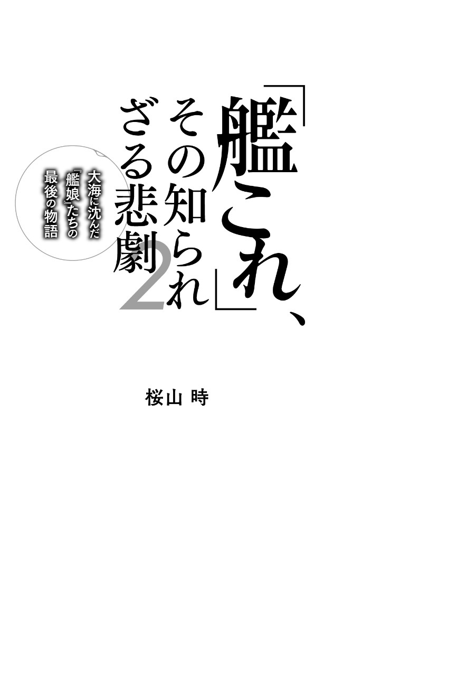

| 「艦これ」、その知られざる悲劇２～大海に沈んだ「艦娘」たちの最後の物語 | |
| 桜山 時 | |
| (2015) | |
第一章 戦艦 戦場の華、その偉容は、時代を超えて人々の心を惹きつける
第二章 空母 第二次世界大戦の主役、彼女らが数多くの戦いの行方を決めた

二〇一三年春から始まった、艦隊育成シミュレーションゲーム『艦隊これくしょん ---艦これ---』が、まさかここまで人々を動かしていくものになるとは......。白状すると、二度目の夏は越せないくらいの、あまり長くないブームで終わると思っていましたが、その予測は見事に外れました。
稼働から三度目の夏を迎えても、飽きられたり、人気が低下するということはなく、現在は登録者数が三〇〇万人を突破し、アーケードゲーム化、アニメの劇場版も決定と、一八歳未満禁止という枠を堂々と越えて、ファン層を広げていることに驚かされ続けています。
ユーザーが増えるにつれて、キャラクターが増えるだけでなく、ゲームとしての深みも増している感があり、ソーシャルゲームの可能性を切り広げている存在にもなっているのでしょう。
『艦これ』が、なぜここまで広範囲に広がり、現在もユーザーを増やし続けているか。色々な要素が重なりあった結果でしょうが、そのうちの大きなものに、艦娘という美少女の姿になっている彼女らが、かつて存在し、激動の時代の中で戦い、運命に翻弄されながら役目を全うして、それぞれの最後を受け入れていった歴史があり、彼女らが命を懸けて平和な世界へと繋いでくれた物語が確かにあったことを教えてくれたのが大きかったのではないでしょうか。
それが私達の日々にすり潰されそうな生活の中で、忘れてはいけない感情を、思い出させてくれるからではないでしょうか。
ただ可愛いだけの存在ではない、受け継がれてきた魂を感じさせてくれる、だから艦娘たちに私達は惹かれるのだと感じています。
筆者も、恥ずかしながら『艦これ』を始めるまで、太平洋戦争の日本海軍など、一般知識以上のものはなく、『艦これ』を通して、今の平和な日本に至るまでに何があったのかを、新しい形で知っていきました。ゲームをきっかけにしたなんて、そんなニワカ、と言われもするでしょうが、歴史を追いかけ、たくさんの出来事を知ったから、彼女たちに思いと命を乗せて戦った人々に感謝し、誇りに思うようになれました。
ここに集めたエピソードは前作に入れられなかった、筆者が泣いて、少し笑って、最後に感謝の気持ちを与えてくれたものばかりです。これらの物語を知り、筆者は大切なことを思い出しました。
あなたも、同じことを感じてくれたら嬉しいです。
「戦闘とは火力」「力こそパワー」という言葉を証明するかのように、大口径砲を積載し他の艦種を圧倒する砲撃力と、大和型の二番艦『武蔵』を例にするなら最大装甲値１１９という鉄壁を持つ。『艦これ』の主人公艦である駆逐艦『吹雪』の装甲初期値５という数字と比較するとその堅牢さが分かるだろう。資材消費も激しく、もっとも運用に資材を消費する「大和型」を、世間のイメージから「大食艦」というイメージが強い正規空母『赤城』と比較すると、一度の出撃でなんと四倍近くもの燃料弾薬を消費するため、兵站と運用に堅実さを要求されるが、使いこなせれば勝利を確実に運んできてくれる。最初にその『戦艦』から触れていこう。
------あれは、辛かった。筆者が『武蔵』について考える時に否が応でも思い出すのが、彼女がイベント突破の報酬として用意された、二〇一三年一一月の過酷としか言えなかったイベントだ。
筆者は、その年の夏に始めたために『大和』には手が届かなかった。『長門』をほとんどプレイ開始と同時に手に入れる大ラッキーに恵まれたため「いいよ『大和』は別に。後でどうせ建造に落ちてくるから長い目で待つよ」とうそぶいていたが、本音は今すぐ喉から手が出るほど欲しいわけである。
そんな中で発表された、彼女と同等の戦闘力を持つ『武蔵』の実装！
これで燃えない訳はなく、よ〜し、絶対彼女を迎え入れるぞ、と気合いをいれたのだが......あれは、その年の秋に始めた提督からすると、ひたすらに過酷だった。
敵ボスの一人『飛行場姫』を撃破するために『三式弾』が必要となったが、数が揃っていなかったため追加作成しようとしても出ず、資材はどんどん溶けていき、『長門』が早めに建造できたことが裏目に出て、イベントにいると有利だった高速戦艦（「金剛型」） の育成も間に合っておらず、イベント終了の期日は迫り......。
結局、轟沈から救ってくれる「応急修理女神」を買い込み、時間でＨＰが回復する鬼畜仕様のラスボスを相手に、羅針盤の不条理さと理不尽さ、あと一撃で終わるのに届かない、俗にいう「妖怪いちたりない」にへこまされながらも六時間かけてクリアした。筆者はなんとかしたが、周りにあのイベントで『艦これ』を辞めた人もいる。
まだ戦力が整っていなかった状態なので、単純に戦力不足ではあった。けれど、それを考えに入れても、これまで経験してきたイベントで一番辛かったと断言できる。
ともあれ、苦労をしたので愛着も深い訳である。
さて、そんな彼女のことを、改めてもっと知っていくのに付き合って欲しい。
『大和』の妹『武蔵』は『大和』から九ヶ月後に三菱重工業長崎造船所で竣工された。
名前の由来は首都・東京のある「武蔵国」から与えられたものだ。見た目はほぼ『大和』と同じだが、『大和』であった不具合がほぼ改修されている。また三菱重工業長崎造船所という民間工場で造られたため、呉海軍工廠という軍艦専門の工場で造られた『大和』より乗り心地がよかったと言われている。
ミッドウェー海戦には間に合わなかったが、その生涯のほとんどを、姉の『大和』と行動を共にした。
今でこそ「大和型」は日本海軍の戦艦の代表だが、当時はその存在は極秘とされていた。『武蔵』建造中は、船台の一部に屋根をかぶせて周囲をシュロの網で覆うなどして隠したが、あまりにたくさんのシュロが必要になったため長崎周辺の漁網の価格が高騰し、付近の住民が何が起きているのか困惑した、という話があるし、また進水式にて、進水命令書が読み上げられる時さえ艦名を聞き取れないように発声された、などというエピソードは軍が秘密保持に腐心した証拠だ。
「大和型」は三番艦まで存在しているが、三番艦『信濃』は空母に改装されているために『武蔵』が、日本海軍、最後の「戦艦」になっている。
太平洋戦争における「戦艦」を語る上において、避けて通れない問題がある。それは、「戦艦というものは太平洋戦争開戦時には時代遅れの兵器になっていた」という歴史的事実だ。
しかも、それを証明したのは、他ならぬ日本なのだ。日本は「真珠湾攻撃」で奇襲作戦をしかけた。その要諦は航空戦力を中心に構成し、砲撃戦レンジのはるかに外からの、長距離高速戦闘をしかけるというものだった。
真珠湾攻撃は大成功、これによってこれからの海戦は空母を中心に行われるという未来を、敵国側にも見せてしまったのである。
「真珠湾攻撃」には、『大和』も参加しているが、しかしほとんど何もしていない。当時の戦艦の実用性（ほとんど役に立たない） が著しく顕れている事例と言えるだろう。
戦艦は「大艦巨砲主義」または「艦隊決戦主義」と言われる、戦艦の大口径砲による決戦こそが勝利を決定するものである、という思想の元に造られてきた。しかしそれは、日露戦争の時代に日本海軍が経験した栄光の残像でしかなかったのだ。
戦艦は巡航速度が遅く、砲撃を命中させることが難しく、かつ高速巡航しながら飛行機を発進させての攻撃ができる空母に比べて有効レンジが狭かった。「金剛型」が太平洋戦争中に活躍を見せているが、それは「金剛型」が高速戦艦であり、しかも決定戦力というより空母の護衛目的などの汎用性の高さがあったからであり、決定戦力としての扱いではなかった。
象徴としての意味合いが強く、また日本が資源弱小国であるがゆえに、なるべく艦を失うまいとした「艦隊保全主義」が強く働き、そうそう出番も与えられなかったのである。
『武蔵』の、世界最強の四六センチ砲九門が真価を発揮することはなかった。『大和』から連合艦隊旗艦の座を譲られても、動くことだけでも消費する大量の物資に見合った活躍の場はなく、時に動けば潜水艦の魚雷を受け損傷、多数の死傷者を出す有様だった。
『大和』が、居住性が高く余裕のある作りになっていたために「兵器というよりは旅館だ、大和ホテルだ」と皮肉られていたのと同じく「武蔵御殿」「武蔵屋旅館」と揶揄されていたという。
そんな状況の中で、一九四四年六月に行われた「マリアナ沖海戦」において、『武蔵』『大和』ら戦艦に与えられた役割は、戦艦に変わり戦場の主役となった空母部隊の盾となることだった。
かつて戦艦といえば、戦場の後方に位置し他の戦力の露払いが終わったところで登場し、勝利を掴みとる決戦兵器だったのだが、もう彼女らは盾としかなれなくなっていたのだ。
この、惨めにさえ見えてしまう姿。それでも任務にあたる彼女に現実はなお過酷だった。
『武蔵』が戦闘に投入された太平洋戦争後半には、彼女を十分に動かせる資源はなかったのだ。敵の最新空母から繰り出される航空戦力に対抗するためには対空砲の充実が必須だった。しかしそれはかなわず、砲門どころか二五ミリ機銃を設置するのが精一杯。継ぎ接ぎのような戦力で出撃した。それでも任務を全うできればそれでよかったかもしれない。
「皆の分まで、この武蔵が攻撃を受け止められたのなら......」
そういう『武蔵』だが、それすらできなかったのである。
「マリアナ沖海戦」において米軍は四〇〇機もの戦闘機を運用し、それにＶＴ信管という命中せずとも周りを巻き込んで炸裂する新型砲弾、そして日本軍の持つものよりはるかに長い有効距離を持つ新型レーダーにより、ほぼ一方的な飛行機狩りを行い、戦艦が介入してくる状況を作らせなかったからだ。
結局『武蔵』は、盾にもなれない存在に成り果てた。
そして、存在意義を見失った彼女に、最期の時が近づいていた。
「マリアナ沖海戦」の四ヶ月後、南方の防衛線を次々突破し、台湾・沖縄に肉薄している米軍。それに対し、日本軍は連合艦隊の全ての力を結集させ、フィリピンのレイテ島の周辺海域に集まり、南から迫る米軍を強烈な力で撃退、そして講和に持ち込もうとしていた。
そのレイテにおける事実上最後の戦いに『武蔵』も投入された。
一九四四年一〇月二四日、レイテへと向かう『武蔵』『大和』『長門』を擁する主力の「栗田艦隊」は、パラワン水道にて、主戦力である『愛宕』『摩耶』を沈められ、『高雄』も大破という、出だしから大打撃を与えられてしまった。この時、『愛宕』に乗艦していた、司令部の通信要員のほとんどが、戦死するか各艦に散り散りになったために索敵能力が大きく低下してしまった。もとより潜水艦・偵察機の能力が敵軍に劣っていた状況なのにである。
日本軍が敵の動きを見失う中、米軍は的確に艦隊の動きを把握し、シブヤン海域にて日本軍に大艦隊での攻撃をかける。多くの空母を失ったことで、制空権を確保できない状態になっていた日本軍は、米航空戦力の進行を止められない。
こうなるのはあたりまえのことだった。そして、『大和』を守る形で輪形陣の外側にいた主力艦である『武蔵』に一〇〇機以上の航空機が群がり、暴風の如き攻撃が繰り広げられる。だが、それにはひとたまりもなく、彼女は海の藻屑と消えてしまう------ということはなかった。
実際、彼女は長い間撃たれ続けた。それはさながら蚊の群れが巨人にまとわりつくのを払いのけているように見えたそうだ。この時、反転し捲土重来を期すという判断もあったそうだが、決戦の地、レイテに彼女の砲力は必要と判断されたのだ、戻れなかった。
「この武蔵......そのために生きてきたのだ。いくさ」
行かなければいけなかった、しかし、日本国の象徴、無敵・不滅のはずの彼女の身体は軋みを上げ始めていた。『武蔵』の両舷に満杯の浸水が起き、スピードが出せずに艦隊から落伍し、それによりさらに攻撃が集中させられていく。
魚雷を左舷に一三発、右舷に七発、爆撃一七発という甚大な火力を叩きこまれ、反撃を行おうとしたものの、彼女ができたのはわずか五四発、艦砲をまばらに撃てたのみだった。
外側からの攻撃には耐え抜いていたが、用意されていた八五〇発もの弾薬が誘爆し、内側からも大きなダメージを受けてしまったことが、とどめとなった。
艦首が沈み船体が左舷に傾いていく。武蔵の四六センチ砲を有する甲板は波に洗われ、艦底を高々と空に晒してその姿を消していった。最初の攻撃を受けてから九時間が過ぎた後だった。
そこまで持ちこたえたのは、最新・最強・最後の戦艦として生まれながら、その役割を果たせないでいた彼女が見せた苛烈な意地だったのだろう。
「『武蔵』がここまでやられるなんて......」
姉であり、同じ「最強」、『大和』の心中は如何ばかりだったろうか。
『大和』『長門』らは、沈む彼女を背後に、涙を振りきって進んでいった。
彼女には、長い間語られてきたミステリーがあった。
彼女が沈んだ地点については、二つの記録が残されている。その場所は『武蔵』の副長が記載した「東経一一二度三二分、北緯一三度七分」、もうひとつは駆逐艦『清霜』乗組員によって記録された、「東経一一二度四一・五分、北緯一二度四八分」である。
しかし、後にこのどちらを探索しても『武蔵』は見つからなかった。
現地の住民にも、その所在はミステリーとして伝わっており「シブヤン島の浜辺から北五キロほどの海域で、水深五〇メートルの位置に網を降ろすと、決まって金属に擦れて切られたような形で網が破られる。ここに日本のバトルシップが沈んでいるのではないか」というような証言もあったそうだ。
「島ほどの大きさがある」と形容された船が、沈んだ場所がある程度分かっているのにも拘らずその姿を消してしまうというのは大きな謎だ。
「世界で最も深い海溝がある場所だけに、人の目の届かないところに沈んでしまっているのではないか」また「深海を巡っている海流にのり、世界を彷徨う巨大な幽霊船になっているのではないか」など、様々な憶測が飛び「彼女は何処にいったのか？」は、海軍史に残る大きなミステリーだった。
------二〇一五年の春までは。
------ 時は流れて、現代。
二〇一五年三月、驚きのニュースが世界を駆け巡った。
マイクロソフト社の共同創業者、ポール・アレン氏が、シブヤン海の水深一〇〇〇メートルに沈んでいた巨大戦艦の姿を発見。その写真・動画を撮影し公表した。すると、それが複数の専門家により『武蔵』であることが確定されたのだ。
その動画は、日本でも「ニコニコ生放送」で実況中継され、提督たちのみならず日本中の人々の胸を熱くしてくれた。さらに、日本語が記された物体（大和型に搭載された呉式二号型カタパルトの操作マニュアルと思われる） まで発見、新たに彼女の研究が進んでいる。彼女が沈んでから、実に七〇年。ポール氏のチームが、『武蔵』の探索海域を絞り込む作業を始めたのは八年以上前だという。その後、日本で『艦これ』が流行したことにより、多くの人がかつてあった戦いの記憶を知り始めた時期に、彼女が再び我々の前に姿を見せた。
それは、まったくの偶然かもしれない。
でも、でも、もしかしたら。我々の、少しセンチメンタルになった気持ちが集まって、それが祈りのような力になって、偶然を呼び彼女に届いたのでは。
そんな風に、ロマンチックに考えてしまっても、いいんじゃないだろうか。
現在、５--５と、イベント用の決戦兵器としての出番が多く、二〇一四年のイベント、「ＭＩ作戦」でも、悪名高き戦艦棲姫同時二隻、俗にいうダブルダイソン相手に皆が立ち往生し、「雷巡スナイプ」「重巡スナイプ」など、様々な作戦を考えているところに、彼女の四六センチ砲の雄叫びがそれを正面から打ち砕いてくれた。
ウチの嫁は、史上最強！ そう言わせてくれる存在として、彼女は今日も元気でいてくれている。
最もレアリティが低い戦艦で、様々な形で手に入り、入手時点においては、圧倒的な力を見せてくれることから、彼女への思い入れが強い提督は多い。
薄幸そうな雰囲気と華奢な身体に長い黒髪とアンバランスな、執務室を埋める巨大な艤装の押し出しの強さもあってか人気は高く、中でも熱心なファンからは「姉様」と呼ばれている。
しかし、美人で強そうな外見でありながら「......はぁ、空はあんなに青いのに......」と溜息まじりにつぶやいたり、妹『山城』への姉妹という関係を越えているような執着や『伊勢』『日向』への隠さないライバル心から「病み系かな？」とこちらが不安にさせられるキャラクター。更に運の初期値がたったの５という、『大鳳』の２、『陸奥』の３に次ぐ低さの、紛うことなき不幸艦である......など、たくさんのインパクトを与えてくれる彼女であるが、どうしてそういうことになっているかというと------もちろん彼女にも、涙せざるをえない物語があるのである。
『扶桑』とは、日本を美しい言葉で表現した、いわゆる雅称であり、中国の伝説で東海の日の出るところにある、同根から雄木と雌木が生えた神木をそう呼ぶという故事に基づいたものだ。
国の名前をそのまま付けられているという意味では、大和国の名前を由来としながら、日本そのものも同時に想起させる名前（現在では完全に日本国そのもののイメージだ） 『大和』と通じるものがあるだろう。
「扶桑型」は、当時世界に衝撃を与えた傑作艦『ドレッドノート』級、それより巨大な「超ドレッドノート級（超弩級） 」の『オライオン』を造り出していた国、世界ナンバーワンの技術力を誇っていたイギリスからその技術を取り入れようとしていた。
武勲艦と名高い『金剛』は、その流れの中で英国の造船会社ヴィッカーズ社に発注して造られたものだった。そうして得た『金剛』と、そこからフィードバックされた技術が反映された「金剛型」姉妹艦を大いに参考にし、「金剛型」を超える最高火力、高速度を持つ戦艦を目指して作り上げた最初の純国産の戦艦が彼女らだった。
進水日には伏見宮博恭王が立会い、紙吹雪が舞い散る華々しい祝福が送られ、お召艦、海軍卿乗艦などの栄誉に浴す、など大きな期待をかけられていた。
しかし、日本の夢をあますことなく詰め込んだ結果、どこをとってもアンバランスな艦になってしまった。
最も悪かったのは火力への偏重だ。太平洋戦争が始まると、時代は完全に戦艦から空母と潜水艦、また小型艦の時代に移るが、彼女の起工当時一九一〇年代には大艦巨砲主義が生きていた。そのため、『金剛』とほぼ同格の排水量の船体に、『金剛』の四門から、主砲を六門に増やしている。この時点で悪い予感しかしない。
『金剛』は、『艦これ』に登場している艦の中で、最も古い船でありながら、太平洋戦争でも数々の戦歴を残した傑作艦で、優れたバランスを持っていたのが歴史的にも証明されている。
しかしそこから出来たものは、先人から正しく学ばず砲塔を増やした結果、過剰な火力に船体が耐えられず、主砲を撃つと上部構造物や艦橋に被害が発生、さらに船体も歪んでしまうという目を覆うような出来の船だった。
また、思ったように速度が出ないため艦船の動力である高温・高圧の水蒸気を作り出すボイラー室を増設しようとしたが、砲塔が邪魔でそれもできず、近代化改装を遅らせる原因となった。
更に言うなら、砲塔というのは爆発物を装填するのだから誘爆を起こしやすい場所である。近くには弾薬庫も必然的にある訳で、火力を上げるというのは弱点を増やすということにも繋がるのだった。そのため同時代の戦艦と比べて防御面に配慮が足りておらず、攻撃力はあるものの打たれ弱い艦となってしまった。
また、砲塔を設置しすぎたため甲板上に設置できるものが減ってしまった。
その結果生まれたのが、あのネタ抜きで見ていて不安になる「く」の字型の艦橋だ。
「崩れる一手前のジェンガ」「どう優しく見ても違法建築」「器用な子供の積み木」などと言われる前鐘楼の積み上げは誰が見ても「は？」と思うだろう。
結局、甲板が広げられないのだから上に伸ばすしかなかったのだ。土地に余裕がなく、地価の高い場所のようなものか。艦橋の不自然なくびれは、三番砲塔上に無理にカタパルトを置いた煽りである。
日本国の名前を与えられて造られた、日本の、いや東洋初の純国産・世界最強戦艦の誕生と期待されていた彼女だったが、蓋を開けて出てきたものは「古い思想と明らかな設計ミスから生まれた失敗戦艦」だった。
なんとか使えるようにしなければと二度大改装を受けているが、あちらを直せばこちらがおかしくなる、という感じで途方もない予算と資材を注ぎ込んだものの、満足のいくどころか、戦場で使えるレベルにすら達しなかった。
その資材があればもっと役に立つ艦が作れただろうし、軍にも余裕ができたはずだ。そういう目で見られたのは必然だった。「扶桑型」姉妹に、どこか卑屈なイメージがあるのは、そもそもこういう出自があったからなのだろう。
太平洋戦争が始まってからも、日本初の戦艦でありながら連合艦隊旗艦となったこともない。それどころか『山城』と共に、練習艦にまで格下げされている。
平時ならまだフリート・イン・ビーイング効果といわれる、大戦艦がいるという存在でプレッシャーをかける役割を果たせたが、実際に戦争が起きれば鍍金も剥がれ落ちてしまった。真珠湾やミッドウェーにも参戦はしているが、低速すぎる、動かすのに燃料を使いすぎる、そもそも戦力としての使いどころが見つからない、といった理由で後詰や護衛などにしか利用されていない。かといって、天文学的な予算を注ぎ込んだ日本を象徴する戦艦であるがゆえに、ないがしろにもできない。
戦うために生まれたのにそれを許されず、かといって解体されもせず、腫れ物に触れられるような扱いで、「金剛型」「伊勢型」が武勲を重ねていくのをただ見つめていたのだ。
『金剛四姉妹』のように優れた基礎設計と運用思想を活かし時代に対応するということもできず、『長門』『陸奥』のような日本国の象徴にもなれず、『伊勢』『日向』の踏み台になってしまったのだ、時代の流れとはいえ、恵まれない運命の下に生まれたのかな、と思う。
その最期も、壮絶なものだった。
「------私たち、なんのために生まれてきたの」
そんな風に悩みながら、過ごした年月は長かったろう。
しかし、彼女らに陽の光が当てられる時がくる。どうしてかと言えば、「ミッドウェー海戦」で、栄光の一航戦が壊滅、さらに「マリアナ沖海戦」でのありえない大敗で『大鳳』『翔鶴』『飛鷹』が一度に失われてしまったように、連合艦隊の戦士たちが次々と沈み、また傷ついて動けなくなっていったからで、だから欠陥兵器と言われ、お払い箱扱いされてきた彼女たちの力さえ、必要になっていたのである。
彼女らに下った命令は「レイテ沖海戦」への参加。
その主目的はフィリピンの奪還だった。レイテは重要戦略拠点であり、そこには当然米国軍の戦力が結集されている。これを総力をもって打破し、フィリピンを手中に収め、米国軍に大打撃を与えるという状況を作った上で、連合国と五分の講和に持ち込もうと考えられたものだった。
彼女たちは、「西村艦隊」として編成され、「捷一号作戦」に参加。
向かうは戦艦六隻を含む七四隻もの大軍の待つスリガオ海峡------。
彼女たちがどうなったか......そのことについては、この後の『山城』の項に譲りたい。
『山城』という名前の由来は、長い間天皇陛下の住んだ王城の国「山城国」であり、『扶桑』と同じようにその艦名には特別なものが込められているのが分かる。
筆者は『扶桑』姉様との付き合いは長かったけれど、どうしてか彼女になかなか縁がなく、やってきたのは遅めだった。
初めの印象では姉に比べて声が明るく覇気もあるので、妹の方はもしかしてしっかりしているのかな------と思っていたが、すぐその印象は変わる。むしろ自虐気質は彼女の方に強く感じる、なにかにつけて、「不幸だわ......」などと口にし、戦績表示を問い合わせれば「手紙......不幸の手紙かしら」と言うほど。ともすれば、姉以上に状況を悲観し姉に依存している感もある。
なぜこうなったかは、すぐ察することができた。
『扶桑』が、国民全体からの期待を浴びながら、早くから欠陥戦艦としてのそしりを受けていた、というのは彼女の項で書いた。それでも少しは期待されていた『扶桑』ではあったが、『山城』は、『扶桑』が失敗したため進水前から「欠陥兵器」と言われていたのだ。
すでに計画は動き出しているし、戦艦を一隻だけ造っても艦隊で動けなければ意味がない。仕方がなく、という形で生まれた、彼女は「忌み子」だったのだ。
この艦の完成度は、本来この後の『伊勢』『日向』が「扶桑型」の三番艦・四番艦として開発されるはずだったものが『扶桑』『山城』での失敗を踏まえて新規に「伊勢型」として設計し直された、ということからもわかるとおりである。
本来「扶桑型」に施されるはずだった航空戦艦への改装も、「伊勢型」にのみ行われている。多くの人々に疎まれ、同じ艦種もいないため姉しか信じるものがなく......そうすれば、ああなってしまうのも致し方ないだろう。
『扶桑』と同じく長く陽があたる場所に出られないまま時が過ぎ、その大砲が役に立つはずだった太平洋戦争でも働き甲斐のある任務は与えられない。
そんな日々の中、やっと「レイテ沖海戦」への参加というお役目がやってきた。
しかも、彼女には「西村艦隊」の旗艦という名誉が与えられた。
「やっと役に立てる、それも、姉様と一緒に------」
その時の彼女の喜びはどれほどだったろうか。
西村艦隊の仲間は、姉妹や共に戦った艦をことごとく失ってきた『時雨』、ミッドウェーで、妹『三隈』と永遠に別れてしまった『最上』、「第八駆逐隊」が壊滅し、行き場を失い幾つもの隊を転々としていた『満潮』、不運艦なのか戦歴に恵まれなかった『山雲』、太平洋戦争きっての愚かな作戦「八一号作戦」を生き残ったものの姉妹を次々失っていた『朝雲』。
彼女らが集められたことに必然性はなく、一目見て「寄せ集め」という印象は拭えない。実際、連合海軍の大決戦を迎えるに当たって使える者から順に隊を組んでいって、最後に残ってしまった、きつい言葉で言ってしまえば「あぶれ者」が集められたのが、この隊だった。
そして、そんな彼女らに与えられた役割は、実質上の「囮」だった。『大和』『武蔵』『長門』を擁する、「栗田艦隊」を中心とし、三個艦隊が同時に敵戦力へ集中する------というのが建前であったが、西村艦隊の顔ぶれを見ればすぐ察することができるように、エリート部隊の主力を温存するための露払いというのが本音の部分で求められていたものだ。
しかし、一九四四年一〇月二三日から始まったこの戦いで最も果敢に戦ったのが、あぶれ者の集まりである彼女たちだったのだ。
三つの艦隊の力を合わせても勝ち目があるかどうか、という戦況であった。それなのにも拘わらず度重なる空襲、通信の不備などにより、艦隊の足並みはまったく揃わなかった。しかも、主力である栗田艦隊は米軍の攻撃により『愛宕』『摩耶』『武蔵』を失い、『高雄』『妙高』を大破に追い込まれるなど集中攻撃を受け、思うような進撃ができずにいた。
その一方で、西村艦隊は小部隊で慎重な進軍を行ったのが功を奏し、奇跡的にほとんど攻撃を受けず、消耗少なく目的地に向かえていた。結果的に見れば『扶桑』『山城』が低速だったのが功を奏した形だ。
そして、決戦の地となるはずのレイテに突入するのは、二五日の明け方と定められていたが、栗田艦隊の行動に大きな遅れが生じ、それは不可能となっていた。というのも、栗田艦隊は進撃中に、二度謎の反転......後の世でいう「栗田ターン」を行っていたため、予定に大幅な遅れが発生していたのだ。
この時、西村艦隊が下した決断は「単独での突入」だった。
レイテ湾の入り口、スリガオ海峡で待っているのは『ウェスト・バージニア』『ミシシッピー』『カリフォルニア』『メリーランド』『ペンシルベニア』『テネシー』の戦艦六隻を中核とした、さらに重巡四隻、軽巡四隻、駆逐艦三三隻、高速魚雷艇三九隻、という大軍団である。
未来の視点から見ると、勝算のない戦いへ猪武者のように突撃しただけのようにも思えるし、やはり当時から現在に至るまで、この決断への批判は数多い。
ここで、当時に行われたことへの判断は控えさせて欲しい。事実としてあったのは、『山城』『扶桑』たちは単独でレイテ湾スリガオ海峡に突撃していったということだ。
レイテにいた艦隊のうち多くの艦、特に戦艦六隻のほとんどは、真珠湾で大破着底しながら蘇ってきた者たちだった。復讐に燃える大軍団からの砲火は苛烈であり、日本の名を背負って生まれたことが罪であるように激しく彼女らを痛めつけていく。
そして駆逐艦二一隻から魚雷が斉射され、隊の最後尾にいた『扶桑』は四本の魚雷を受け大爆発、船体を二つに割って冥い闇の中、更に黒い喪服のような黒煙を巻き上げ激しく燃え盛り、あたかも溶鉱炉から取り出したばかりの二つの巨大な鉄塊のようになって沈没していったという。
さらに、『満潮』『朝雲』『山雲』も魚雷を受け沈没した。
『山城』はその中で一人気を吐き、今まで撃つことができなかった三八口径を唸らせ、一番砲塔、二番砲塔を立て続けに失いながら砲で攻撃を続けた。しかし、左舷右舷両方に雷撃を受け、彼女の象徴である、巨大な艦橋を崩落させながら沈んでいったという。
生き残っていた『最上』も、その後空襲を受け駆逐艦『曙』に介錯される形で沈み、戦いが終わった時に、生き残ったのは『時雨』だけだった。
結局、最初にして最後の戦いで、武運つたなく悲劇だけを残して終わってしまった。
同じく失敗作といわれ、それを克服しようとし共に戦い、同じ場所で悲しい最後を迎えた、それが彼女たちの一生だった。
------ 時は流れて、現代。
『艦これ』が始まってからかなり長い間、序盤で活躍させられる以外には特に見るべき能力もなく、航空戦艦になると唯一少しだけ光っていた火力が下がるため、さらに微妙になるので、効率を考えたら「金剛型」を選ぶのが自然だし、もし早い段階で『長門』『陸奥』がいたなら、更に出番がなくなる。
愛で使うのには少し重い------事情は分かるけれど、やっぱり恵まれない船なんだなぁ。
航空戦艦の改二化やるって言ってるけど、史実で航空戦艦化してる「伊勢型」が濃厚だっていうし......と思っていたら、二〇一四年の一〇月に、まず『扶桑』が、続いて『山城』の起工日である一一月二〇日には彼女の改二が実装。火力が爆発的に上がり、なんと『長門改』と同値になり、さらに新型水上爆撃機『瑞雲一二型』を引っさげてきたことで、航空戦艦としての性能が大きく底上げされ、すべてをひっくり返した。スロットの配分も良好で、とにかく使いやすい。
これまで不遇を囲っていた「扶桑型」ファンは大喜び。追加ボイスも少しだけ前向きになり、今ようやくだが、少しだけ彼女らの戦いは報われているのではないか。
「扶桑型」姉妹と同じく、多くの提督がゲーム初期に出会うだろう戦艦。妹がクールなのに比べて、よくしゃべり、やたらに妹の『日向』に絡んでいくスタイルで、「どうなのさ〜日向」という台詞の言い回し方はついつい真似したくなる。
大体同時期にやってくる「扶桑型」とどっちを使うか、と考えた提督も多いのではないだろうか。
現時点で性能で選ぶなら、改二がある「扶桑型」姉妹となるが、稼働当初は性能もまぁ誤差の範囲なので、ほとんどの人がルックスの好みで選んでいた印象だ。『艦これ』の提督は、姉妹揃えて運用する人が多いのか、筆者の周りでは「扶桑型」「伊勢型」どちらかの姉妹が揃うまでは混ぜて使っていて、姉妹揃ったらそちらで部隊を組んだ、というパターンが多い。
さて、『伊勢』の話である。当初「扶桑型」三番艦として計画されていたが、多くの課題を残した彼女の設計から学んだノウハウを投入し、バランスを向上させた艦となっている。
それでも、居住性が劣悪、直進性能が低い、主砲の仰角角度の不足等多々問題はあったようだが、これも随時改装・修正されていく。その結果、新型タービンエンジンに速度は二五ノット超、さらに新型電探に新型高角砲・機銃が加えられており、『山城』が不幸をぼやきたくなる気持ちが少し分からないでもない......。『艦これ』内でも初期数値だけなら「扶桑型」の純粋強化版となっている。
さて、そんな彼女がどう戦ったか史実を追っていこう。
伊勢といえば、伊勢神宮。天照大御神が祀られた場所で日本の聖地であり、海の守りの要と期待された彼女にふさわしい名前だと言えるだろう。
太平洋戦争緒戦、「真珠湾攻撃」等には参加していない。その理由はいくつかあるが、高速度を持っていないため戦いの場が限られてしまっていた、というのが大きい。
その後、搭載されていた新型電探を活かした働きを期待され、「ミッドウェー海戦」に参加したが、周知の通りそこで日本は、真珠湾の戦いでの日本海軍機動部隊の奇襲による大敗から学び、日本軍の戦術を研究し尽くした、米機動部隊の逆襲により四隻の空母を失うという、大惨敗を喫してしまっている。
ここで出てくるのが「航空戦艦化」の話である。工業力も資源力も不足する日本には、新しい空母を作る力が十分でない。
そこで、すでにある戦艦に航空機運用能力をプラスする、「航空戦艦」という兵器が考案されたのだった。「扶桑型」の航空戦艦化はペーパープランのみだったが、『伊勢』には実際、第五番・六番砲塔並びに副砲を外し代わりに航空甲板が取り付けられ、一九四三年九月、世界初にして彼女らのみの「航空戦艦」となっている。
その後、「捷一号作戦」が発動され、第三艦隊に編入された。彼女らに、レイテ東湾を目指した、『大和』『武蔵』『長門』らの主力を擁する栗田艦隊の突入を成功させるための囮という役割が与えられた。
「捷一号作戦」に入る前、当初の予定では新型の水上偵察機『瑞雲』、艦上爆撃機『彗星』が配備されるはずだったが、空母にさえ乗せる航空機が不足している状態だ、航空戦艦に回される機体があるはずがなかった。
第三艦隊は出撃間もなく、敵に見つかるように電波を発信するなどしてアメリカ軍を呼び寄せた。
するとエンガノ岬沖に達した所で、正規空母五隻、軽空母五隻、戦艦六隻を基幹とする大部隊が、全力で第三艦隊に襲いかかった。この時点で、囮としては完璧な役割を果たした。しかし、ここから、生きて還ってこそ本当に任務を果たしたことになる。
しかし戦場はあまりに過酷だった。幸運艦と呼ばれ、ここまでほぼ無傷で生き抜いてきた『瑞鶴』ですらたちまち沈んでいった。日本国の象徴がまたひとつ、墜ちていく。それを見た『伊勢』は、砲火渦巻く中、艦を停止して海に投げ出された兵の救助にあたっている。
さらに、『瑞鳳』『千代田』『千歳』と計四隻の空母が立て続けに沈められた後、残された『伊勢』『日向』姉妹に、三〇〇機もの米軍機が殺到した。
しかし、艦載機の代わりに積まれた新型の対空装備、高角砲一六門、二五ミリ機銃一〇四門、多連装噴進砲六基を駆使し、作戦中に三〇機から七〇機の敵機を撃墜。そうしながらも思い切った回避活動を行い、多数の人員を救助し、囮部隊としての役割を全うし、地獄となっていた海から生還を果たした。
レイテから帰還後、砲撃の邪魔になるという判断から航空甲板は撤去される。
結局航空戦艦というのは、絵に書いた餅でしかなかった、ということになる。
その後は輸送船となり、敵が制海権を握っている海を通過するシンガポールから本土への物資輸送作戦「北号作戦」に参加。
この際、対空砲で戦艦を撃退する、魚雷を高角砲で撃ち落とす、などの架空戦記も驚く神業を見せ、またも奇跡の帰還を果たした。届けられた物資は、同時に生還した『大淀』が運んだものを含めても、中型貨物船一隻分程度だったそうだが、物資不足の日本に『伊勢』が届けた物資により、日本の最後の守りは果たされたという。
そして彼女の最後の時、最後の地は、妹『日向』と同じである。彼女の方に視点を移したい。
妹艦ながら、達観した台詞とクールな態度で超然とした感じの美人......と思いきや、「航空戦艦」としての自意識が強く、「まさかの航空戦艦の時代か？」などボケとしか思えない台詞を言い放ち、改装されるとさらに航空戦艦としてのプライドを高め、航空機が大好きで『瑞雲』への執着の他、現代航空兵器の知識も口にする、航空機マニアっぷりを見せ始める。
そのギャップから「まぁ、そうなるな、の人」「瑞雲師匠」など、二次創作においては半分笑いの世界に足を突っ込んでいる様子。
そんな彼女の戦歴の多くが姉と共にあった。早速追ってみよう。
彼女もやはり、建国神話の祖国発祥の地（現在の宮崎県） の名、という特別な意味を持つ名を与えられている。
『日向』は、戦場に立つまでにいくつものトラブルを乗り越えている。竣工直後に第三砲塔が爆発。その五年後、第四砲塔弾薬庫が火災。さらにミッドウェー海戦直前に第五砲塔が爆発、ミッドウェーまでに修理が間に合わず、砲塔が壊れた状態で出撃、などがある。
どれも運が悪ければ爆沈まであった事故だという。戦艦『陸奥』が一度の事故で爆沈したことを考えれば相当な幸運艦である。
第五砲塔の爆発も、本来「扶桑型」へ先になされるはずだった航空戦艦への改装をそのまま「伊勢型」を優先させる決断へのきっかけになっている。航空戦艦化が純粋にプラスだったかどうかはまた微妙だが、彼女が長く戦い抜いた事実を見れば、結果的にはこれも運がよかった、ということになるのだろう。
彼女もまた『伊勢』と同じように、航空戦艦というこれまでになかった運用思想の元に造られ、同じ理由で航空機の配備を受けられず航空戦艦としては戦えなかった。
その状況で「捷一号作戦」の囮部隊、第三艦隊に『伊勢』と共に参加。「レイテ沖海戦」中の「エンガノ岬沖海戦」において、守るべき艦をすべて失っている。
その後、彼女らは卓越した回避操作と雲霞の如く襲い来る敵機からの爆撃・雷撃、そして砲撃の雨霰を躱し、姉妹揃って「命中弾なし」そして「敵機多数撃墜」という不可思議とさえ思える活躍を成し遂げた。
この際の逸話で有名なのが、『伊勢』はひたすら取舵（進行方向・左） に回避し続け、『日向』はひたすら面舵（進行方向・右） に回避し続けたことだ。
これは、ヤマ勘でされたものではない。この時も『日向』『伊勢』を率いていた、松田千秋（当時・大佐） が考案した「爆撃回避法」に従い「高高度から来襲する敵機に船体側面を、低高度から接近する敵機には艦首を向ける」というものだ。これにより命中弾皆無の上、更に敵機五〇機もの撃墜を報告している。
その後姉と共に、あらゆるものが不足しやせ細った日本へ物資をシンガポールから届ける「北号作戦」に旗艦として参加。彼女らの部隊名は完遂への強い祈りを込めて「完部隊」と名づけられた。
潜水艦に追い回され、一〇〇機あまりの航空機から逃れ、その後も幾度もの攻撃を振りきって、二〇日間に及ぶ長い旅路を被害艦ゼロで終わらせ、見事に作戦を完遂している。
これが「伊勢型」姉妹の最後の航海だった。彼女らが運んだ燃料は、この二ヶ月後「菊水作戦」に臨む『大和』を旗艦とする決死艦隊に託されることになる。
役目を終えた姉妹は、その後燃料が不足により航海ができなくなり、最後にやってきたのは、呉鎮守府だった。そこには、ここまで戦い抜いて生き残り、数々の栄光の果てに、日本の軍港に帰ってきていた、数多の仲間がいた。
呉の港が彼女らの終の場所だった。一九四五年、「呉空襲」にて、多くの仲間たちと共に、米軍の攻撃の火の雨に焼かれ、豪運を誇り、その運でたくさんの部隊を助けてきた姉妹の命運も尽き、ここで大破、着底した。この時もその運を燃やし尽くして、火の雨が降り注ぐ中一〇〇〇人いた残存乗組員のうち七九六名を生き残らせている。
------ 時は流れて、現代。
二〇一一年、ヘリ搭載型護衛艦『いせ』が登場------彼女が生まれ変わった姿である。
彼女は二〇一三年、米国空母『ジョージ・ワシントン』と共に天災で壊滅被害を受けたフィリピン等の被害者救援に参加。
かつてレイテで死闘を繰り広げたふたつの国が、今度は人を助けるために力を合わせたのだ。その時彼女が向かったのはレイテ東湾。あの時、西村艦隊らが目指した場所である。
二〇一四年には、『伊勢』が最後を迎えた場所で、『いせ』上から慰霊式が行われた。その際『伊勢』のかつての乗員が出席、英霊となった戦友たちに、現在の乗組員たちと共に、祈りを捧げた。あの時の海と、今我々が平和を享受している海は確かに繋がっているのをあらためて教えてくれるエピソードではなかろうか。
『日向』は、彼女より早く二〇〇九年、生まれ変わって「ひゅうが型」護衛艦のネームシップ『ひゅうが』として、日本の海に帰ってきている。今度は彼女が姉になっているという訳だ。
彼女は東日本大震災時、航空運用能力をフルに活用し、たくさんの人々を救っている------彼女の思いが神様と様々な人々の計らいで、現代になって結実したのだろう。
現在、現実の海では活躍してくれているのだが、『艦これ』においては、長くアドバンテージをとっていて、下位互換と見られていた「扶桑型」に対して、彼女らが揃って改二化を遂げたため、まさかの航空戦艦の時代は確かに来たのだが、「伊勢型」姉妹はすっかり水を開けられた形である。
当時こそ航空戦艦としての戦果は上げられなかったが、数多の武勲を誇る戦艦としてその名は今も輝いている、それはひとえに彼女らの健闘によるものだ。
この時代の彼女らにも、是非頑張って、真の航空戦艦の時代を作って欲しいものである。
『武蔵』が実装されたくらいの時期には「もう日本の艦での大ネタが『信濃』くらいしかないから、海外艦来るんじゃね？」などと、噂されていたように思う。
そして二〇一四年三月、実装されたのが彼女だった。彼女の登場は驚きというよりも、やっと来た！ という雰囲気だったように記憶している。海外艦が来るなら同盟国であるドイツ（先にイタリアというのは考えにくいし） 、それも一番有名な『ビスマルク』が来るのは、自明の理であり順当だったからだ。金髪美少女なルックスと「大きな『暁』」と言われる子供っぽさがあるキャラでたちまち人気が集まって、「ビス子さん」などと呼ばれ親しまれている。
筆者は『ビスマルク』という戦艦の存在はずっと昔から知ってはいたが、それも名前だけで「太平洋戦争における、ドイツを代表する巨大戦艦、日本でいうところの『大和』」という認識しかなかった。
しかし当然あったのである、彼女にも------過去から続く戦いの系譜と、それであるが故に立ち向かわなければならなかった戦いの運命が。
『ビスマルク』の起工年は一九三五年。日本の象徴、戦艦『長門』を超える五万三〇〇トン（満載時） もの排水量を誇る超大型戦艦の存在は、完成前から世界に大きな脅威を与えていた。
この頃はまだ大艦巨砲主義が生きており、多くの人々が世界最強の戦艦を欲していた。
シーレーン（海上交通路） が広くないドイツは、歴史的に海軍力が低い国だった。そんな国が海上においても大きな力を持ってしまえば、欧州の勢力図が変わる。
『ビスマルク』には、なんと現在世界史上最大口径であるの『大和』の四六センチ砲をはるかに上回る五一センチ砲の搭載が真剣に検討され、彼女をベースに、八〇センチ砲を八門搭載した、六四万トン級戦艦の計画まであったという。『ビスマルク』の向こうに、ドイツ国民は夢を観ていたのだ。
当然敵国にとってそれは恐怖の対象でしかない。特に、当時欧州最強の海洋国家であったイギリスは『ビスマルク』に強烈な警戒心を抱いており、英国海軍と『ビスマルク』の間には、彼女が誕生する前から深い因縁があったのである。
彼女が完成し就役したのは一九四〇年八月末。彼女を視察に訪れたアドルフ・ヒトラーはその姿に感動し、艦に描かれたハーケンクロイツの上から「汝、大ドイツ戦艦ビスマルクよ。汝はまさにわが大ドイツ海軍の誇りである」と賞賛の演説を行ったという。
一九四一年五月。彼女は初陣にて運命の敵英国海軍と「ライン演習作戦」で相対することになる。この作戦には重巡『プリンツ・オイゲン』が共に参加している。
作戦の内容は、大西洋上にて輸送船団を索敵・撃破することであり、つまり「通商破壊作戦」だった。
第二次世界大戦初期には航空機の行動範囲が狭く、レーダーも有用でなく、戦艦の位置を把握するのが困難であったため、戦艦、巡洋艦による通商破壊作戦は有効だったのだ。
任務を受けた『ビスマルク』は、その行動当初からイギリスに行動を捕捉されていた。イギリスは、彼女らを叩くために、戦力の出し惜しみをせず、力で圧しつぶしにかかった。
『プリンツ・オイゲン』と二隻、海を征く『ビスマルク』、彼女たちの前に現れたのは------。
『ビスマルク』が初めて経験する戦場で立ちはだかったのは、英国艦『プリンス・オブ・ウェールズ』。チャーチル首相が誇った未完成ながら当時最新鋭の巨大戦艦ともう一艦、ほぼ『大和』と同じ全長を持ち、第二次世界大戦当初に三隻の戦艦を沈めるという華々しい活躍をし、英国海軍の誇りと謳われ、「マイティ」の二つ名で呼ばれた、最強巡洋戦艦『フッド』。さらにダメ押しとばかりに駆逐艦六隻を加えたあまりにも強大な部隊だった。
圧倒的な戦力差からドイツ海軍の敗北、という形で早々に決着がつくと思われたがそうはならなかった。『ビスマルク』と『プリンツ・オイゲン』の砲撃は、『フッド』に命中、わずが一二分で、世界最強を爆沈させ、まさかとしか思えない勝利を掴むことになった。
別任務に向かう『プリンツ・オイゲン』と別れ、栄光の勝利と共に故郷に帰ろうとする『ビスマルク』に、大英帝国海軍の誇りを傷つけられ、復讐に燃えるイギリスの執念が追いすがる。
イギリスは可能な限りの大西洋上の戦力を傾注させ『ビスマルク』を追った。これではとても逃げられるものではない。まず彼女を最初に捕まえたのは、正規空母『ヴィクトリアス』から発進した艦載機『ソードフィッシュ』の魚雷だった。さらに正規空母『アークロイヤル』から、雲霞の如く飛び立った新たなソードフィッシュ隊の魚雷により、操舵不能に追い込まれてしまう。
さらに襲いかかる駆逐隊を退けるも、そこにビッグセブンの一角『ロドネー』、『プリンス・オブ・ウェールズ』の姉妹艦『キング・ジョージＶ世』の率いる主力艦隊が現れて、六〇〇発以上の砲雷撃が叩き込まれた。
爆発が起こす水柱の乱舞の中、照準装置が壊され、狙いをつけるのもままならない状況ながら、せめて一槍と言わんばかりに、『ロドネー』にゼロ距離射撃を叩き込むが、敵を崩すことはできなかった。攻め手は次々なくなっていくが、それでもイギリス艦隊の猛攻撃に『ビスマルク』は耐え抜いていった。
一方的に攻めるイギリスだったが、そちらも決して楽ではなく、攻め疲れて燃料が底をつこうとしていた。『ビスマルク』が痛み分けに持ち込もうとするが、イギリスが勝負をかけ、英重巡、『ドーセットシャー』が一か八か肉薄しての雷撃を打ち込んだ。この攻撃が決定打となった。
致命の筈の痛撃、しかしそれを受けても『ビスマルク』は揺らがなかった。イギリス大西洋艦隊のありったけの弾薬を打ち込まれながら、火災も爆発も起こさず、イギリスも打つ手を失っていた。
『ビスマルク』はイギリスそのものを単騎で相手にし、なお敗北しなかったのだ------。
いや、そうではなかった。
実は『ドーセットシャー』の雷撃で、爆発こそ起こさなかったものの、彼女の艦命は尽きていた。
『ビスマルク』の沈没は不可避と判断され、防水扉と注水扉を全て開放、自沈用爆薬を点火させ、自爆。するとまたたく間に------ほんの一〇分ほどで、巨体が大西洋に飲み込まれていった。
圧倒的多数を向こうに回し戦い続けたその姿に、英国軍の人間からも『ビスマルク』の散りゆく姿に敬礼が捧げられたという。
近代技術の粋を集めた彼女は、しかし処女航海で儚く散った。就役してから喪失まで、わずか八ヶ月。日本が第二次世界大戦に参戦する前に沈んでいるので、真珠湾攻撃の後、第二次世界大戦が太平洋戦争となっていったのを知らないのである。
だが、巨大戦艦同士の殴り合いで打ち勝ち、その後イギリスすべてといっていい大軍と渡り合った、その激しい戦いと、確かに残っている戦歴により、彼女の勇名は語り継がれているのだ。
ここでは余談になるが生き残った『プリンツ・オイゲン』は、その後数奇な一生を送っている。それについては、別項を読んで頂けたら幸いである。
一九八九年にかのタイタニック号を発見した海洋考古学者ロバート・バラードによって、彼女がフランスのブレスト西方の海底で眠っている姿が発見された。彼女の船体は大きく崩れず、あの時の誇りを失わない姿で、青い海に鎮座していたのだった。
『艦これ』においては『Ｚ１』を入手した後、莫大な資材を投入する「大型艦建造」で、非常に低確率でのみ入手可能、という、クラクラくる条件でやってくる。筆者のところには毎日お祈りをかかさずにして、八ヶ月目でなんとかやってきてくれた。
これは使っていきたい......と思ったものの、苦労した割には、燃費は悪いしなんかいまいちパッとしなくて使いドコロが......これなら「金剛型」があればいらないかも......と、レベリングはしつつも放置してしまっていた。改二にあたる『ビスマルク zwei』が実装されても評価は上がらず......おいそれとは使えない、改装設計図を使わせるのかよ......まぁ、旧型艦だから仕方ないとは思ったものの、筆者的な評価は上がっていなかった。
そこに改三にあたる『drei』化で戦艦でありながら雷撃が可能になり、他の戦艦と一線を画する能力をゲットしてくれた。これにはたまらず手のひら返しで、第二艦隊で戦艦を入れるなら、彼女一択だと思うようにもなった。
......改装設計図二枚は精神的に負担だったものの、結果として思い切ってよかった！ 夜戦の女王......とまではいかないもののここぞという時に、ポイントをゲットしてくれる。
大食らいなのが玉に瑕だが電子の海で、彼女は今も元気でいてくれているのである。
ドイツの次はイタリアだ。二〇一五年四月二八日のアップデートでついに実装されたイタリア艦のうちのひとつで、現在二〇一五年春イベントのＥ---４クリア報酬としてのみ入手可能となっている。
レベル三五で可能になる改装で『リットリオ』から『イタリア』に名前が変わる。これは史実に即しており、なぜ改名したかといえば、リットリオというのは、権力と結束を象徴していた役職の名前であり、その役職者が持つファスケスという束桿の名前が、当時のイタリアの最高権力者ムッソリーニの作った「ファシスト党」、また彼らの掲げた思想である「ファシズム」という言葉の語源に繋がっており、彼女の起工も、一九三四年のファシスト党記念日になされている。
そして、ファシズムが世界的に非難されイメージが悪くなり、ムッソリーニが失脚したことから改名が決められている。
------ところで、ドイツ軍といったら精鋭部隊、最高にかっこいい兵器が目白押し、というイメージで、イタリア......イタリア軍というと昔からネタ担当のポンコツ軍隊というイメージがある。「砂漠でどうしてもパスタが食べたくなって、飲料水でパスタを茹でたから水がなくなったので降伏した」「前進ギアは一枚だが、後退ギアは四枚あった」「戦おうとする兵士より逃げるか寝返ろうとする兵士が多い」といった話があったり、海軍の話でも「イタリアの潜水艦は漁船に負けた、本当に」など、いくらでも聞こえてくる。また、日本人がドイツで飲んでいると「お前日本人か、今度はイタリア抜きでやろうぜ！」などと話しかけられる、なんていう小咄も有名である。そんなイタリアの造った戦艦とは実際どうなのか見てみよう。
「ヴィットリオ・ヴェネト級」は、実装されている二番艦である彼女と、四番艦である『ローマ』の他、一番艦『ヴィットリオ・ヴェネト』と三番艦『インペロ』の四隻が起工された。このうち『インペロ』は未竣工のままイタリアが降伏したため、三隻のみの就役となっている。
「ヴィットリオ・ヴェネト」級について見ていると、イタリア艦の設計思想がはっきり見えてくる。イタリアの海洋における仮想敵国はフランス、そして大西洋からやってくるイギリスの二国。そのため地中海での運用のみを考えられており、だから艦に投入するリソースを集中させられたのである。
比較的穏やかで波が低い地中海で活動するためには、走波性能はさほどいらず、また広い範囲は動かないため航続距離は短くても問題とならなかった。その代わりに、速度、武装の性能を向上させている。それがイタリア艦の基本思想だ。イタリアは車ではフェラーリ、バイクではドゥカティと、速いマシンを作ることに定評があるが、軍艦もやっぱり速いのが好みであったようだ。
余談になるが、当時のイタリア海軍の特徴として航空母艦を持とうとしなかった、というものがある。イタリアは伝統的に空軍の発言力が強く、広いシーレーンを持っているために、「イタリアそのものが不沈空母」という考えが強くあった。しかし太平洋戦争という、空母の時代に直面したため、一九四一年に、慌てて正規空母『アクィラ』を作り始めることになる。だが時間がないばかりか、日本以上に資源のなかったイタリアがこれを完成させられる道理は無く、一九四三年九月にイタリアは連合国に降伏することになる。その後、ドイツ軍がこれを接収したが結局大破し自沈処分となっている。
------と、このように艦の設計において、考え方には確かに筋が通っているのだが、今こうして見ると、明らかに現実とのズレがあるし、工業力も足りていなかった。
その上、当初は第二次世界大戦への参戦は「一九四三年まで待たなければならない」というものだったのが、ドイツの宣戦布告に始まった状況に流され、待ちきれずに一九四〇年に参戦してしまったが故に何もかもが足りていなかった。『アクィラ』のエピソードは、その象徴的なものだろう。
などといった、様々な準備不足により多くのものが寸足らずになってしまった、というのが、当時のイタリア兵器の実態であるようだ。
それでは、そんなイタリア艦の中で『リットリオ』はどんな艦だったか？
それは、彼女の口癖を借りると、よくも悪くも「地中海的」な艦と言えるだろう。
イタリア海軍の思想そのものを体現したような艦で、高い質量を持つ弾を初速八二〇メートル／秒という高速で撃ちだすことで、近距離なら四一センチ砲に匹敵するといわれる高性能三八センチ三連装砲を三門主砲として装備、水平方向に関しては『長門』に匹敵する厚さの二〇七ミリ装甲を持ち、さらに独特の「プリエーゼ式水中防御隔壁」という、速度を低下させるバルジや追加装甲なしで、水面下への防御システムを高めるシステムを装備している。
航続距離が二〇ノット速度で航行時／四五八〇マイルしかない（ちなみに『ビスマルク』は九二八〇マイル） が、それは前述の理由であるためで、必要性能的には申し分ないものになっているはずだった。
しかし、やはりイタリア、ということだろうか、大きな弱点があった。
太平洋戦争は、駆逐艦や潜水艦、また航空機が放つ魚雷の時代になっていったが、それへの対処が甘かった。魚雷から船体を守ってくれるはずの、彼女のウリである「プリエーゼ式水中防御隔壁」が、かえって魚雷を受けた時、その衝撃を隔壁内で増幅させてしまうという効果を生み出してしまったのだ。
その結果、どうなったかというと、火力が高く速いのだが柔らかい、という非常に偏った艦になってしまった。
『リットリオ』は、残念なことに、戦史上での活躍はできなかった。
一九四〇年の開戦当初、まだ準備が整っておらず作戦行動が起こせず、おまけに、イタリア海軍の石油備蓄の量は、僅か八ヶ月分。
そのため、イタリアのタラント軍港に戦力を集中させ、敵国にプレッシャーを与えつつ機を窺おうとしたが、これが裏目に出た。戦力が集中していたところをこれ幸いと狙われ、空母を持たず、魚雷に弱いというイタリア軍の弱点が露呈し、一網打尽にされてしまい、最後には英国海軍正規空母『イラストリアス』から出撃したソードフィッシュの攻撃により、大破着底している。
その後、最優先で修理され翌年三月には戦線復帰するも、すでに制空権・制海権共に奪われ、燃料も尽きかけていたため、作戦行動はほとんどできずにラ・スペチア軍港に身を潜めるようにしていた。
彼女は幸運艦であり、姉『ヴィットリオ・ヴェネト』や妹『ローマ』が大破する中でも、大きな損害を受けず、それならばとイギリス軍が彼女に空襲を集中させたが損害は軽微だった。
一九四三年七月、名前を『イタリア』に変えてからすぐにイタリアは降伏する。
彼女の戦争もここで終わり、もう戦わなくてもよくなった------とそうはならなかった。戦争は無情なものである。昨日までの友だったドイツが、彼女を連合国側に渡すまいと襲いかかってきた。ここで被弾した彼女は、スエズ運河で足止めをくらい、そのまま終戦を迎えている。
イタリア本国は彼女を国元に置くことを強く臨んだが、アメリカ海軍に賠償艦として引き渡されることになった。
アメリカ軍の元で、彼女は主砲砲身切断、主蒸気配管切断、主機減速歯車破壊、と、身体を切り刻まれるようにして戦闘力を奪われた。
戦うために生まれながら、堂々と戦える戦場を与えられず、辱しめられるように武装を奪われる、という屈辱を与えられ、戦争の間、敵国に拘留され続けられた彼女は、さぞかし無念を噛み締めていたことだろう......。
戦後、彼女は母国に戻され、一九四八年、解体された。
幸せな一生ではなかったが、故郷の海に戻れたのは、せめてもの救いだったろう。
「イベント中のドロップ限定、しかも最深部で」という厳しい入手条件で、提督たちを震え上がらせた艦娘。筆者はイベントのボス削り中に幸運にも出てくれたが、人によってはドロップ海域二〇〇周しても出なかった、という話もあるようで......ほんとイベントは怖いものだなとつくづく思わされる。
性格は真面目でキツ目、眼鏡と豊かな胸部装甲が印象的。姉『イタリア』に火力で勝り、その数値は「大和型」に継ぐもので、脳筋眼鏡といわれる『霧島』を更に上回る火力を備えている。『武蔵』といい、この世界では眼鏡は知力より火力の象徴なのだろうか。彼女も『霧島』を「一度やりあってみたい」「悪い人ではなさそう」等と意識しており、『霧島』の方も『ローマ』に声をかけたり、金剛姉妹から「高速戦艦の会」に誘われたりしており、好敵手ながら仲良くやっているようだ。
彼女が就役したのは一九四二年六月。姉と同じく期待されて生まれた、イタリアを守る主力艦であり、欧州各国からその存在は脅威として見られていた。それだけに、彼女を狙う敵の攻撃も容赦なく、度重なる空襲で大きな被害を受けている。彼女が「あの爆撃機......覚えてなさいよ」というのは、このことが原因だろう。
これといった活躍ができないまま、一九四三年九月に母国イタリアが降伏。戦後までの艦隊保持のため、という判断から、姉と共に連合国軍の待つマルタへの移動を命じられる。そこに先述したように彼女らが連合国に渡るのを恐れたドイツからの攻撃を受け、当時必中必殺の兵器であった新型誘導爆弾『ルールシュタール・クラマーＸ１無線誘導爆弾』、通称「フリッツＸ」の爆撃を左甲板に受け、砲塔が爆発しそのまま轟沈、何処とも知れない海底に姿を消してしまった。
『リットリオ』もフリッツＸの命中で事実上艦命を終わらせており、『ローマ』が言う「あの化け物」というのは、この爆弾を指していると思われる。
鉄壁を謳った水平防御力も、新型爆弾の圧倒的な火力の前には無残にも貫かれてしまったのだった......。第二次世界大戦ではそれまで戦略兵器として君臨していた戦艦が、時代の徒花となって次々に散っていった。彼女もまた例外ではなく、旧時代の記憶から生まれ、新しい時代の中には残れない運命だったのだろう。
------ 時は流れて、現在。
ゲームの中の『リットリオ（イタリア） 』『ローマ』はというと、改装には設計図を要求され燃費がすこぶる悪いものの、高速戦艦でありながら、超長射程を誇り、真っ先に砲撃を始めて相手の機先を制することができる。まさに史実でできなかった活躍をさせられそう------と期待しているのだが、高速戦艦の常か、どうも柔らかいのと、装備している『三八一ミリ／五〇 三連装砲』通称「イタリア砲」に命中マイナス３がついているため、どうも使いにくい気がする。改にすれば命中がマイナス１になり、フィット砲で命中補正もある。筆者は、現在、５---５の高速戦艦ルートの常連として使えるのではないかと育成中だ。
最後に、この話を伝えたい。二〇一二年初夏に「イタリア版『大和』発見される」というニュースがあった。それまで残骸が見つからなかった『ローマ』が、サルデーニャ島北方三〇キロ、水深一キロの海底で発見されたのだ。
『ローマ』がそれを聞いたら......怒るだろうか、恥ずかしがるだろうか、それとも、少し悲しそうな顔をしたりするのだろうか。
今はまだ彼女のことがよく分からないが、もう少し理解を深めていければ、きっとゲームも更に楽しくなるので、上手に付き合って行きたい。
艦載機を飛ばして威力の高い開幕先制攻撃を行い、砲撃戦前に大打撃を与えられ、さらに偵察機を飛ばすことで戦況不利状態になるのを防ぎ、制空権を確保することで自軍戦艦・巡洋艦の命中率を上げる「弾着観測射撃」を発動可能にする------など実に多くの長所を持つ。
それが『艦これ』における航空母艦である。ただし運用コストが高く、原則として中破すると何もできなくなる、と短所も多く存在する。また正規空母・装甲空母・軽空母・水上機空母と種類があり、それぞれ秀でたものが違う。運用に少しの知識が必要だが、理解するほど戦略を広げてくれる艦。戦艦と共に咲く『艦これ』の華が彼女らという訳だ。
太平洋戦争において、空母を実戦で運用したのは日英米の三ヵ国のみだった（フランス、ドイツ、イタリアは所持していたが、艦隊空母としての稼働はしていない） 。
では、彼女らがかつて経験してきた物語を追いかけていこう。
『飛龍』と姉妹であるようでいて実はそうではない。『飛龍』は『蒼龍』の建造開始後、軍縮条約を脱退したことで条約で決められた排水量を守る必要がなくなり、申請した排水量である一万トン級から設計を変更し、最終的に一万七〇〇〇トン級にまで大型化して改めて作り直されたもので、『蒼龍』と『飛龍』は準同型艦になる。
『赤城』のような改装空母でない、設計段階からの純粋な空母の第一号が軽空母『鳳翔』であり、それを受けて生まれた最初の純・正規空母が『蒼龍』となったのだった。
『蒼龍』の設計は極めて優秀なものだった。それは歴史によって証明されている。
「翔鶴型」は『蒼龍』の再設計版、『飛龍』の改良型だし、『大鳳』はその「翔鶴型」を装甲化したもの、その後に生まれた『雲龍』は『飛龍』の量産型として計画されたものだ。そういう意味で『蒼龍』の存在は、日本海軍の歴史においても重要なものだというのが分かる。
一九三八年、『蒼龍』は竣工し、二航戦に配属された。そして一九三八年に生涯最後までのパートナー『飛龍』と出会う。
ドジっ子キャラとして認知されている部分があるようだが、それは戦前に駆逐艦『夕月』と衝突し小破する、という事故を起こしているからだ。
「真珠湾攻撃」に当初、彼女と『飛龍』は参加しない予定だった。というのも、彼女らは空母としてはそれほど大きくなく、航続距離が短いからだ。軽空母と言われている『飛鷹』と比べるとよく分かる。排水量が『飛龍』が一万七三〇〇トン、『飛鷹』が二万四一〇〇トンと、軽空母に分類されている『飛鷹』の方が三割弱も大きいのである。だから真珠湾に仮にたどり着けても、満足な作戦行動はできない、という理由で当初は外されたのだが、結局彼女らの力は必要と判断され、大量のドラム缶に燃料を積み込んで出撃している。
そうして真珠湾で華々しい活躍を見せた後、戦場を南方に移し、「セイロン沖海戦」では、イギリス東洋方面艦隊を壊滅間際まで追い込み、正規空母『ハーミーズ』重巡『コーンウォール』『ドーセットシャー』駆逐艦『ヴァンパイア』を撃沈、功績顕著で名空母の名を欲しいままにしていった。そして、彼女たちは呼ばれていく......あのミッドウェーに。
------この戦いについて続けるには、共に戦い抜いた『飛龍』についても語る必要がある。
しばらく「もう一人の二航戦」へと話を移させて欲しい。
太平洋戦争初期、様々な伝説を残した「南雲機動部隊」麾下、六隻の空母のうちのひとつ。
「い、いつになっても出ねぇ......」という思い出を持っている提督は多い。今も彼女に出会えず悩んでいるプレイヤーはたくさんいるだろう。
正規空母を四隻集めて編成する任務「南雲機動部隊を編成せよ！」を達成するために必要で『赤城』はイベントで手に入るし、正規空母の建造レシピを回していると『蒼龍』は結構な確率で出せるし、最強空母『加賀』もやっていればなんとなく出るが、彼女はなかなか出てくれない。
『翔鶴』より出やすいというが、筆者の艦隊では『翔鶴』の方が随分先に来ていた。なかなか会えない彼女であるので、待っている間に色々調べていたものだった。では彼女は史実ではどうだったかというと......。
彼女は初め、ワシントン軍縮条約下でそれを守りながら「蒼龍型」の二番艦として建造を計画されていたが、条約が破棄されたため、設計からのやり直しが可能となり、新たに「飛龍型」として完成したというのは『蒼龍』の項でも書いた通り。
対波性能増強を目的として、艦首甲板を『蒼龍』より一段高め、艦尾の形状、舵等が改良されている。そして彼女の姿について有名なのは、船の左舷中央に艦橋を配置していること。この姿は珍しく、同様の配置をしているのは、数多く存在する各国の空母を含めても、改装後の『赤城』のみだ。どうしてそうなったかと言えば、「艦橋と煙突を離して設置すれば、船体のバランスが向上するだろう」という思惑があったからだ。しかし結果は、煙突からの煙が艦橋に流れてくる、気流が乱れて発着陸がしにくい、などと不都合が続き、以後は左側に艦橋が配置されることはなくなった。
そんな失敗があったにも拘わらず、現在、日本海軍が造ってきた艦の中でも、その完成度の高さは評価されている。
彼女といえば度々口にする「多聞丸」である。第二航空戦隊司令「山口多聞提督」のことだ。旧日本海軍中の名提督として、今も世界中の人々に愛されている。なぜ丸が付くかといえば、名前の由来が名将・楠木正成の幼名、多聞丸だからだ。
司令官として太平洋戦争緒戦の数々の戦いで戦果を上げているのと同時に、航空機部隊の教官としても一流で、世界最強の南雲機動部隊を作り上げた人物であるが、その訓練があまりに過酷だったため「人殺し多聞丸」「キチ○イ多聞丸」と呼ばれるが、平時においては温厚な人柄だったそうだ。また妻一筋で戦地から数百通の手紙を家に出し続けた愛妻家だったという。
ところで、昔の男にそんなに憧れていたのか、今でもそんな好きな男がいるのか......それを知ってからどうにも気になるので、ケッコンカッコカリをして、山口提督から彼女を取り上げてやろう、と暗い炎が胸の中にないでもないのだが、まだ口だけで実行していない。
彼女は一九三九年に竣工し、「第二航空戦隊」に配属され、一九四〇年から一航戦と共に戦闘に参加している。そして『蒼龍』と共に綺羅星のごとき戦歴を積み重ねていき、「セイロン沖海戦」では『飛龍』から飛び立った爆撃隊の命中率は八二％ という数字を叩きだした。訓練で静止目標相手に七〇％ を出すのさえ決して容易ではなく、実戦でこの数字を出すということは、考えられないほど高いものだ、これも多聞丸の仕込みということなのだろうか......。
『艦これ』をプレイ中の提督ならずとも、「ミッドウェー海戦」という呼び名と、それが大きな運命の岐路になる苛烈な戦いだった、という事実を知っている人は多いだろう。
その戦いにおける日本軍の目的は、太平洋上の米軍艦隊の殲滅、そしてミッドウェー島の奪還である。この作戦を実行に踏み切った連合艦隊司令長官・山本五十六の思惑は、日本は長い間は戦えないのだから、ここで大勝利を掴み戦争を早期で終わらせようというものだった。
負けた時のリスクの巨大さに、連合艦隊幕僚からの強い反対があったが、一航戦・二航戦を含む、第一機動部隊、通称「南雲機動部隊」は、士気を最高に高めており、勝利への自信に満ち溢れていた。
しかし、真珠湾で大敗北を喫し復讐の炎に燃える米国海軍に死角はなかった。
米国海軍は、暗号解読によって、日本海軍の動きを捕捉、その上で空母『エンタープライズ』『ホーネット』さらに、「珊瑚海海戦」において『翔鶴』『瑞鶴』らに敗れてズタズタになった体で帰還し、修理に九〇日かかるとされた大破状態だった正規空母『ヨークタウン』を三日で修理してミッドウェーに向かわせるという無茶をしてまで空母を揃えられるだけ揃えた状態で日本海軍にぶつけた。つまり史上初めての空母機動部隊での攻撃、という日本が「真珠湾攻撃」で行ったやり方を「珊瑚海海戦」の時と同じく、いやそれより遥かに緻密で大胆な戦略と戦術を組合せて、叩きつけてきたのだ。
この作戦で日本が犯したミステイクは多々ある。
こんな有名なエピソードがある。アメリカ軍は自国の情報を完全に統制していたのに対し、日本側は軍事機密が駄々漏れで「次の攻撃目標はミッドウェー」というのが、呉の街を歩く一般市民の口からも聞こえていたそうだ。
さらに、日本は司令部と最前線の意思疎通がまったく正常に働いておらず、作戦目的が一本化されなかった。中でも有名なミスは、ミッドウェー島の攻略と、米艦隊の殲滅、両方を行おうとしたというところにある。
詳しく追うと、こういう展開だった。
まず、ミッドウェー島の敵基地へ一航戦と二航戦で爆撃を行ったが、滑走路を破壊するような大きな被害を与えられなかった。『飛龍』がその名前を口にする「友永隊」の隊長としても知られる友永丈市大尉が、与えられた被害が小さかったことから第二次攻撃の実行を求めた（『飛龍』が「第二次攻撃の要を認めます、急いで！」と言うのは、これがあるから） 。それを受け、南雲機動部隊の南雲長官は、基地への爆撃を終え、対艦用の雷装へと武装を変えようとしていた『赤城』『加賀』の艦載兵装を再度基地攻撃用の爆装に装備換装を行うことになる。
第二次攻撃への打診を受けてから三〇分後、カタパルトのトラブルで三〇分遅れて出撃していた重巡『利根』から出撃した偵察機『利根四号』が、トラブルから生まれた幸運だったか、敵影の発見に成功、「敵らしきもの一〇隻見ゆ」と報告を挙げてきた。
時間制限がある中、南雲長官は、再度決断を突きつけられる。
対艦兵装である雷装に切り替え、敵艦を確実に叩くか。
本来対地用武装である爆装のまま出撃し、敵艦へ攻撃を行うか。
二航戦を率いる山口多聞は、爆装での攻撃を進言するがこれは却下される。結局、再度雷装に転換して攻撃を行うという決断が下される、しかしここで生まれた時間のロスが悲劇を招いた。
世にいう「運命の五分間」である。
『加賀』に向かって復讐に燃えた『ヨークタウン』と『エンタープライズ』の艦爆隊が、急降下爆撃を開始。直後に『赤城』へ、続けて『蒼龍』に艦爆隊が襲いかかった。
爆装転換された第二次攻撃隊は全機発進準備が完了しており、一機は発進できたがそれと同時に敵軍の急降下爆撃が行われてしまった。
後の検証で五分という短い時間ではなかったというのが判明しているが、一分一秒ごとに状況は変わっていき、ギリギリのところで、運命の針が日本にとっては最悪の場所を示してしまった、というのは間違いない事実のようだ。
急降下爆撃により命中したのは各艦二〜四発だったが、発艦間近の艦上機の燃料・魚雷・爆弾に次々誘爆、爆炎を巻き起こし、常勝不敗を誇った、無敵の南雲機動部隊、『赤城』『加賀』『蒼龍』は爆発炎上。特に『蒼龍』だが、格納庫内の爆弾・魚雷が次々誘爆し、大火災を起こした。
一瞬で転換した運命、そしてどうしようもないほどの敗北。その中で、『飛龍』は遺された者としてまだ敵に牙を剥こうとしていた。
『飛龍』はこの時、三空母から離れ雲の下にいたため、攻撃を免れていた。
一航戦、そして『蒼龍』を失っても、まだ彼女は諦めていなかった。
母艦を失った『赤城』『加賀』『蒼龍』の艦載機が『飛龍』に集まり、彼女はここから阿修羅の如き戦いを始める。「たとえ最後の一艦になっても、叩いて見せます！」と彼女が言うのは、この経験があったからなのだ。
『蒼龍』から飛び立っていた二式艦上偵察機が、運命の敵、仲間たちの仇、米空母『ヨークタウン』を発見し、その位置を『飛龍』に知らせた、まるで彼女が最後の力を振り絞って伝えた遺言であるかのように。
散った仲間たちの想いを乗せて『飛龍』から飛び立った攻撃隊は、その願いの篭った一矢により『ヨークタウン』を大破させた。沈没にまでは追い込めなかったものの、潜水艦『伊１６８』の執念の雷撃がトドメを刺すことに成功している。
しかし、彼女の余力もここまでだった。『エンタープライズ』から発進した攻撃隊からの爆撃が次々命中し『飛龍』は炎上を開始した。
『蒼龍』が爆沈、『加賀』も艦尾と艦首が水平になった形で沈み、それに続いて『赤城』に雷撃処分が下された。
当時、軍艦は国際慣習法でその国の領土の延長とみなされており、機密保持の理由もあり敵国に渡す訳にはいかないのだ。
ただ一隻残された『飛龍』に決死の消火活動が行われたが、日が変わる頃には放棄が決定され、軍艦旗を下げられた。そして『飛龍』は、駆逐艦『巻雲』による（駆逐艦『野分』『嵐』説も有） 雷撃処分を受け、炎上したまま漂流。
翌日に『鳳翔』から飛んだ艦載機に、未だ海上にいる姿が撮影され、彼女を救うべく曳航命令が出されたが、駆逐艦がそこへ到着した時に彼女の姿はもうそこにはなく、山口多聞と共にミッドウェーの海へ沈んでいた。
無敵の南雲機動部隊の栄光は消え、ここから日本にとっての悪夢が始まることになる。
生産能力を持たない日本は、勢いに乗って勝ち続け、優位な立場を確立してからの講和しか、この戦争を勝利で終わらせられなかった。後から見れば、ここで負けた時点で勝ちの目はなくなっていたのだ。『飛龍』の終わりは、日本の敗北の始まりだったのだ。
------ そんな過去の物語を経て、現代。
『蒼龍』の『艦これ』内での立ち位置としては、中型空母である『飛龍』よりさらに小さかったという史実を踏まえて、艦載機の搭載数が多くない。
多くの提督のところに『赤城』の次にやってくる正規空母で、喜び勇んで使ったものの、戦闘力がいまいちで、あれ......と肩透かしをくらったような気持ちになったのが懐かしい。『飛龍』も、回避と運の数値が『蒼龍』に勝っているものの、使い心地は同様に感じた。『赤城』『加賀』と比べれば、燃費が軽いとはいうものの、それなら軽空母を使うよ......と、筆者の艦隊では、一航戦、また五航戦が使えない時に時々出撃して頂くという、二軍、ヘタすると三軍の位置に長くいた。
しかし『飛龍』が、続けて『蒼龍』の改二化が決定。一航戦、五航戦に戦闘力で及ばないものの、システムに愛されていて強力なユニットである正規空母が改二になるということでそのワクワク感はかなりのものだった。彼女らが改二になると連れてくる、航空機部隊の新装備はどれも頼りになるが、特に『蒼龍』改二が連れてくる「九九式艦爆（江草隊） 」の与えてくれる安心感は、今の筆者にとって重いものになっている。
新たな力を得た彼女らは、かつての栄光の二航戦の姿を再現してくれている。
空母が強いこのゲームの中で、最新型空母の彼女が出るとアナウンスされた時に一気に期待が高まった。なんのかんの言っても、合計搭載機数九八機で、最強を誇っている大正義『加賀』さんを凌いでくれるかも......という期待があった。と同時に、史実における彼女についても噂が広まっていき、一抹の不安も広がっていった。
彼女は、現在における、運の初期値が、現艦娘中最低値の２、改造してもわずか４である（彼女を下回るとすれば、試験回航中に未完成のまま沈没した『信濃』しかないだろう） 。この数字が示す、恵まれなかった生涯を追っていこう。
数々の伝説を残した『赤城』『加賀』らの一航戦、そして前述した『蒼龍』『飛龍』の二航戦、また高い完成度を誇った、『瑞鶴』『翔鶴』の五航戦（後に一航戦） と、日本は数々の傑作空母を生み出し、戦果を上げていた。そうした歴史を受けて、次世代型の空母として生み出されたのが「装甲空母」である彼女であった。
装甲空母とは何かというのを簡単にまとめると、空母の最大の弱点は装甲が施されていない飛行甲板であるのだから、その部分を装甲化してしまえば防御力は飛躍的に向上する。そうすれば、防御力の低さゆえに、後方に位置しなければいけない空母も前線に出て、航空部隊を深い場所で展開するのも可能になる------というもの。
防御力を上げれば積める燃料も増やせて、作戦行動時間が伸ばせるという利点も考えられていた。ベースになるのは、これまでの空母の建造技術の集大成であった「翔鶴型」であり、あの傑作艦がさらに強化された『大鳳』が完成すれば、悪くなっていく局面も打開できる------と、考えられた。
もちろん、話はそんな、簡単なものではない。
まず、莫大なコストがかかった。当時『大鳳』建造の予算として記録に残っている額が、一億三〇五五万円（現在の価値に換算すると、おおよそ一二二〇億円） 。『飛龍』『蒼龍』の建造予算が約四〇〇〇万円とされているので、二航戦の空母を三隻作って余る額だ。
しかも、設計上に大きな問題がある。飛行甲板をそのまま装甲化すると、格納庫も装甲化しなければならないため、どんどんトップヘビーとなり、船体バランスが失われる。もともと「翔鶴型」の完成度が高いのだから下手にいじればたちまちバランスが崩壊するのは自明の理なのである。
さて、それでどうしたかと言えば、飛行甲板の位置を下げ、小型化するという手段を選んだわけだ。結果として、航空機を搭載できる空間は減ってしまっているが、五〇〇キロ爆弾の直撃にも耐える防御力を手に入れている。
これで不沈艦になった------はずの彼女は、栄光の「第一航空戦隊旗艦」の座を『翔鶴』から譲り受け、初陣となる「マリアナ沖海戦」へ出陣する。
一九四四年六月一九日。絶対国防圏を破らんと北上してくる米軍を迎え撃ち、これを壊滅させるため『大鳳』は連合艦隊旗艦として出撃。真珠湾以来のＺ旗を掲げ「皇国の興廃この一戦にあり、各員一層奮励努力せよ」の激励電を飛ばし、士気を大いに高めたという。
この時、米軍打破のために考案された戦術は「アウトレンジ戦法」といい、航続距離に勝る日本航空機の性能を活かし、四〇〇マイルの距離を飛び、相手の攻撃有効距離に入る前に叩いてしまおう、というもの。戦闘に入る前の位置取りもうまくいき、この時は楽勝ムードも漂い始めていたという。そうして始まったのが「マリアナ沖海戦」だった。
けれども、これは負け戦だった。始まる前から、敵に大きな有利を奪われていたのだ。敵の新型レーダーの有効策敵距離は四五〇マイル。アウトレンジ攻撃の外からすでに動向を察知することが可能となっていた。
確かに、日本の航空機は飛行可能距離が長かった。しかし、それは手や足の長さであって、敵を見つけるための「目」が備わっていなかったのだ。
また、ミッドウェーに始まり「第二次ソロモン海戦」、「南太平洋海戦」と、空母対空母の戦いが続く中、艦上乗組員の救出を軽視する傾向が祟り、この頃には練度の高いパイロットが少なくなり、四〇〇マイルを飛んだ後の戦闘行動の精度は高くなかった。
さらに、弾丸の散布界に入ると自動的に炸裂する『ＶＴ信管』という新型弾により、ここまで残っていた日本海軍の虎の子である航空機隊はのろまな鳥のように無残に叩き落とされていった。世にいう「マリアナの七面鳥打ち」だ。この時、それまで無敵の戦闘機として空に君臨していた零戦の神話も撃ち砕かれていった。
そして、空を制圧され、意識が上に行っていた時だったのかもしれない。迂闊だった、潜水艦への警戒がおろそかになっていたのだ。
『大鳳』たちは、潜水艦にずっとつけられていた------しかも、本書にて、幾度も名前の出てくることになる死神『アルバコア』に。狙いを定めた『アルバコア』は、『大鳳』に向かって六発の魚雷を発射。『大鳳』から発艦した第一次攻撃隊がこれを視認し海に突入し盾になろうと割って入った。これにより自身に迫る雷撃に気づいた『大鳳』が回避行動をとり、魚雷を躱して行く------が、そのうち一本が右舷に命中してしまう。
だが、さすが最硬の防御力を誇る最新鋭空母。これを耐えて、戦闘は続行できる状態と判断された。最悪の状況は凌ぎ切った、だから逆襲を始めようと米国軍に向かっていった。
雷撃を受けた『大鳳』は、戦闘はできたものの、決して被害が小さかった訳ではなかった。エレベーターが航空機を積んだまま止まってしまい、ガス漏れを起こすなどのトラブルを抱えつつも、必死で作戦行動を続けていたのだ。その横で先代一航戦旗艦『翔鶴』に潜水艦からの雷撃が四発叩きこまれ、彼女が沈没。
『翔鶴』の分までと、戦おうとした『大鳳』だったが------突然彼女の甲板で大爆発が起きた。
燃料タンクから漏れたガソリンが気化したものが、航空機が甲板に胴体着陸したショックで起爆、それが堅牢な船体の中で増幅、通常考えられない規模の爆発を起こした。堅牢な装甲甲板はめくり上がり、炎の中で飴のように溶けていき、誘爆が次々起き何条もの火柱が立ち昇ったという。
彼女はそのまま、二時間彷徨った末に、呆気無く沈没していった。
皮肉にも、当時考えられる最高の防御力を与えられた空母は一発の魚雷で沈められてしまった。
これは不幸な偶然の積み重ねだった。その主なものだけ並べてみてもガソリン漏れが溶接の小さなミスから起きたものであるということ。止まったエレベーターが換気を妨げたこと。エレベーターの修理を優先させ、換気を後回しにしたこと。これらが、気化したガソリンの濃度を上げたこと。装甲空母であるが故に長時間の活動も実現できるはずで燃料を多く搭載したのもガスを濃くする原因になったことや、厚い装甲板が仇となり本来空へ向かって抜けるはずの爆圧が船内に向かい被害を拡大させたこと......挙げればまだまだきりがない。
最高の性能を与えられたが、初陣ですべては水泡と帰してしまったのだ。
この戦いで日本は「絶対国防圏」マリアナを失った。マリアナの空港からなら、Ｂ---29 が日本を爆撃できるのである。これは、日本本土に王手をかけられたことを意味していた。
連合艦隊機動部隊の切り札だった彼女の敗北は、そのまま日本の敗北を意味していたのだ------。
------ 時は流れて、現代。
轟沈の原因となったガソリン気化からの大爆発が、本人が言うように「ガスが溜まりやすい」ということで、色々かわいそうな属性が与えられることがある。
残念ながら、搭載数で『加賀』には及ばないものの、中破状態でも艦載機を発進、攻撃できるという大きなイニシアチブを活かして独自のポジションを確立し、我が艦隊でもそれなりになんでもできる優等生として活躍してくれている。
今になって、装甲空母本来の性能を活かしきれているのだが------大型建造でしか手に入れる術がないという大きなネックが存在している。筆者も、ボーキサイトを六〇〇〇も使う『大鳳』製造のためのレシピを、毎回祈りと後悔と共に回し続けた......あの日々は辛く、冗談でなく今でも夢に出てくる。多くの人が未だに資材を溶かし続けているのを考えると、空母三隻分のコストをそこまで再現しなくても、と思ってしまうのだ。
プレイ序盤から登場してくれる、水上機母艦。空母レシピを回すとやってきてくれて、ん、水母って何......と思って使ってみると、何の役にも立たず困惑したのも今となってはいい思い出。
五段階も改装でき、五段階目の「航改二」になれば、正規空母も脅かすほどの戦闘力を持つ------のは分かっているのだが、それにはレベル50 が必要になるため、複数の艦を育てる余裕がない時に彼女らを育てたものか、他の正調軽空母にいこうか。とりあえず、12 レベルで改装すると、『北上』たち重雷装艦に必須の装備「甲標的」を二つも持ってきてくれるから、とりあえずそこまでは育てるけど......などと悩ませてくれる。
彼女がどうして水母からの軽空という変化をするかというと、それは込み入った状況があったからだ。彼女らの誕生にもまた「ワシントン軍縮条約」が関わっている。空母の保有数が制限されたために、とりあえず水上機母艦として申請したのだ。とはいっても、当時はもう空母が完成する時には条約の有効期限が切れる状況のため、条約破棄が想定内だったが故に、軽空母への改装は想定内の設計であり、また研究・開発が行われていた特殊潜航艇『甲標的』の搭載母艦となるのも考慮されていたと言われている（軽空母となるまでに一年もの時間がかかったため、実はそこまで考えられて設計されてはいなかったのでは、という説も有） 。
ミッドウェーで正規空母四隻を一度に失ったことで『千歳』『千代田』の改装が決定され、一九四三年末に改装終了。軽空母となった彼女ら姉妹は日本近海での訓練を終えた後、シンガポール方面への輸送作戦に従事。その後初の実戦となったのは「マリアナ沖海戦」だった。あの、一航戦を継いだ『大鳳』『翔鶴』が沈められた激戦である。
この作戦で、敵の新兵器『ＶＴ信管』により日本の航空機の多くが叩き落とされた。『千歳』から飛び立った機体もその多くが還らず、かろうじて生き残りはしたもののそれだけだった、という苦過ぎる戦いとなった。
次に姉妹に与えられた任務「捷一号作戦」は、彼女らにとって絶望的なものだった。
彼女らの役割は、敵大艦隊を待ち受けるレイテに突撃をかけ、これの壊滅を目的とする本隊から目を逸らさせるための囮。すでに載せる艦載機のない空母四隻を集めて、大機動部隊に見せかけこちらが主力だと錯覚させるための部隊となれという命令だった。
太平洋戦争開始時、戦艦から主役の座を奪った彼女らだったが、その役割が終わったからここで味方戦艦の身代わりとなって死ね、と命令されたに等しい。
記録に残る四隻合わせての艦載機数は一〇八機。艦隊を守る役目の直掩機は二〇機、しかもこれも帳簿上のもので、実数は更に少なかったという。
一九四四年一〇月二五日、「レイテ沖海戦」中「エンガノ沖海戦」にて、日本軍に残された最後のと言っても大げさでない航空戦力を飛び立たせ、それを見送った後に海の底のように真っ青な空から敵航空機がやってきたという。
その数、一八〇機。必死の対空防御も虚しく、敵攻撃開始からわずか一五分で、七発の爆弾を受け、左舷に傾斜。その状態のまま、一時間攻撃を受け続けて水中に消えていった。
妹の目の前での最期だった。
「千歳型」の二番艦、異常なほどに姉が好きな俗にクレイジーサイコ妹といわれる艦娘の一人。プレイ初期『千歳』より先に彼女を入手した場合、艦隊にいない姉に対してアピールをし続ける、というサイコホラーな現象が起きてしまうというケースが頻発したのも、彼女の行き過ぎた姉妹愛の印象を強めている気がする。
誕生の経緯から、その足取りはほぼ『千歳』と一緒だった。
『千歳』は、『甲標的』搭載の特殊艇母艦に改造されることはなかったが、『千代田』は実際に一二隻の特殊艇『甲標的』を搭載、真珠湾で使われたものの、期待された戦果を挙げられず急遽数が必要とされた空母に再改造されている点が大きく異なる。
彼女も、乗せる艦載機のなくなった空母を、沈没前提の囮として使うという過酷な「捷一号作戦」へ参加する。
『千代田』が飛び立たせることができた、戦うための翼の数はわずか一三機。
還らぬことを覚悟していたそれらは、たちまち撃ち落され、フィリピン諸島北東を守っていた米海軍機動部隊が、守りのなくなった『千代田』らを襲う。
矢尽き刀折れ尾羽打ち枯らした空母はたちまち沈んでいく。姉を守れず、「珊瑚海海戦」、「第二次ソロモン海戦」、「南太平洋海戦」、「マリアナ沖海戦」を戦い抜き、ここまで無傷を誇ってきた幸運艦『瑞鶴』もここで終わっていった。
『千代田』も爆撃を受け大破炎上。その中で一人気を吐いていた『瑞鳳』も沈没してしまう。
魚雷三発の直撃という大打撃を受けたことで、隊から落伍した『千代田』。航行不能状態になっていた彼女は、ここで沈黙していれば助かったかもしれない。
「......私一人で、助かりに来たんじゃない」
と、彼女は思ったのだろうか。
「待ってて、千歳姉、私もすぐに行くから」
と、死に体だった船体から、囮部隊としての責務を全うせんとばかりに敵艦隊に向けて砲撃を開始したのだ。『日向』がそれを見かねて曳航を試みようとしたが『千代田』の息の根を止めるために米重巡『ニューオリンズ』らの艦隊が火線を彼女に集中させると、とっくに終わっていた彼女の身体は砕けて散っていった。搭乗員に生存者は無し、凄惨な最期だった。
------彼女らが、命を投げ出して敢行した囮作戦は成功したと言えるかもしれない。しかし、「レイテ沖海戦」にて、日本海軍は敗れ去った。
そして、かつて世界最強と言われた日本海軍機動部隊は完膚無きまでに壊滅された......。
------ 時は流れて、現代。
『千歳』は、約四〇年前護衛艦『ちとせ』として日本の海に帰ってきてから二六年間、そのまま激動の昭和から平成初頭までの日本を守り、退役している。
『千代田』は、三〇年前に潜水艦救難母艦『ちよだ』となった。ヘリコプター用甲板を持ち、潜水艦運用能力もあるという特殊な艦である、彼女はまだ現役で役目を果たしてくれている。
改二になれる軽空母が大分増えてきて、昔のような「最終型までいけば軽空母では最強」の座は、『準鷹』改に譲り渡してしまった感はあるが、なんといっても最終形に50 レベルでたどり着くのは強い（『準鷹』改二改装に必要なレベルはなんと八〇） 。
史実でも『艦これ』でも優秀な艦であり続けているのであった。
本人が言うように「最初から空母として建造された世界で初めての航空母艦」である。
噛み砕いて言うと、日本の誇る正規空母『赤城』にしても『加賀』にしても、その元となった、英国海軍の作り上げた世界初の航空母艦『フューリアス』にしても、元々は戦艦など他の艦として作られたものを改装した「改装空母」だった。『鳳翔』はその中で、当初から純粋に空母として造られた、と、そういう背景があるのだ。
『艦これ』においては見るからに貞淑で誠実そうな新妻めいた外見と、すべての空母のさらに母、という史実から付いたあだ名が「お艦」、また軽母という艦種にひっかけて「良妻軽母」......本当にこういう名前をつけるセンスには敬服させられる。
また、昔から「小料理屋の女将のよう」と言われており、二次創作で居酒屋や小料理屋で働いている様子があちこちで描かれていたところ、二〇一三年のアップデートで追加された、『千歳』の時報ボイスで「鳳翔さんのお店に行ってみます？」と二次創作設定がまさかの公式化。さらに二〇一四年のアップデートで「私の夢ですか？ そうですね、いつか二人で小さなお店でも開きたいですね」というボイスが追加されるなど、女将設定がどんどん固まっている。他にもお艦と呼ばれるのは、『大鯨』『間宮』『雷』などいるが、女将設定がはまっていることもあり、彼女との馴染みが深い提督は多いのではないだろうか。
竣工は一九二二年。ノウハウがなかった頃に造られたため、多くの部分が手探りで、飛行甲板が大きすぎるのを直し、そうすると甲板が傾いたのでそれも直し、体裁が整ったと思ったら煙突が重すぎて船体バランスが悪かった、と何度も改装を繰り返した。
彼女で得た研究の成果を活かし、一九二七年、海軍史に残る傑作空母『赤城』が誕生すると、彼女と「第一航空戦隊」を編成している。
つまり『鳳翔』は「初代一航戦」のひとりなのであった。さらに一九二八年には『加賀』が合流、一九三二年には共に「上海事変」に出動し、『鳳翔』の搭載機が日本機として初めての敵機撃墜を記録している。
とはいうもののやはりテストタイプであり艦歴も古い。そのため「真珠湾攻撃」でも、「ミッドウェー海戦」においても、出撃、実戦に参加してはいるものの戦闘に参加する機会はなかった。記録に残っているのは、もっぱら衣料品を詰め込んだ艦載機を飛ばしそれを届けた、あるいは練習空母として後進を育てるのに貢献した、といったものであり、それが『艦これ』での「お艦」というイメージにつながっている。
太平洋戦争も長引き、高速の新鋭航空機が登場すると、彼女の小さな船体では、着艦できない機種も発生してくる。そのため、また改装が行われるのだがそれでももう、彼女の持つポテンシャルにも限界が来ており、高度な訓練は担当できなくなっていて、最初の段階での訓練のみを担当していたという。
一九四五年、終戦の年になると、もう訓練が行われる頻度も減り、また彼女を動かす燃料も尽き、呉周辺で停泊。もう戦えなくなった『利根』『大淀』から機銃を譲り受け、『龍鳳』『葛城』と共に、呉の空を守り、そして終戦を迎えた。
終戦後の彼女は、数少ない稼働できる大型艦として復員輸送を担当し、四万人にも及ぶ人々を輸送し、大きく貢献した。
役割を終えた後は、桜島工場で解体され、その船体は復興に活かされている。
------長い間多くの事柄を見守り、そして与えられた役割を終え、静かに復興後の街の中へ消えていった。それが彼女の生涯だ。
------ 時は流れて、現代。
筆者は苦労しなかったが、人によってはなかなか会えない艦娘らしい。空母としての性能は高くなく、運用コストが安いのはいいがやはり装備スロットが３しかないのはきつい。
一方で、活躍できる期間は短いが、それでも部隊のどこかにいて欲しい、と思わせる艦だと感じる。ところで、二〇一三年に公開された、宮崎駿アニメ『風立ちぬ』に彼女が登場している。『長門』や「睦月型」も登場しているので、未見なら彼女の凛々しい姿を確認してみてほしい。
ロンドン海軍軍縮条約にて定められた当時の定義では「六・一インチ以上の口径の砲を搭載した巡洋艦（遠洋航行能力を持った軍艦） 」となっている。『艦これ』では「戦艦と軽巡洋艦の間、ちょっと軽巡寄り」というイメージだろうか。戦艦との大きな違いは雷撃戦ができるということだ。それからまた夜戦補正がかかる特性を持つのと、水上偵察機を搭載することで弾着観測射撃による、命中率を高めた砲撃が可能なのも大きな違いだ。もちろん、戦艦よりはるかに取り回しが軽い。稼働当初は中途半端で扱いづらい印象があったが、性能が改善され、「改二」化できる艦も増え人気も有用性も高めている艦種、と言えるのではないだろうか。その中でもとりわけ、注目の艦を追っていこう。
なにかと個性が強い艦娘陣の中でも屈指の常識人の様な雰囲気を持つ。提督との距離も近すぎず遠すぎず、できた女性、という感じである。次女がぱんぱかぱん、三女がツン女子ではあるが、末妹はしっかりしており「高雄型」は上から下まで変人の「球磨型」などに比べると、常識人度が高いかもしれない。それだけに攻撃時の「馬鹿め......と言って差し上げますわ！」という弾けた台詞が印象に残る。これは明らかに『宇宙戦艦ヤマト』で、地球艦隊に突きつけられた降伏勧告に対して、沖田艦長が言った「バカめ、と言ってやれ」という、アニメ史上に残る名台詞が元ネタだが、史実の彼女とは特に関係はないらしい。むしろ『大和』が言ったらおもしろかったのだが......。
次女の『愛宕』と共に、『艦これ』中でもトップの胸囲を持っているその理由は、艦隊指揮能力の向上のため、艦橋の大型化が図られたからである。
起工年が一九二七年と、昔からある艦で、太平洋戦争にも緒戦から参加。「ミッドウェー作戦」「ガダルカナル島の戦い」「第二次、第三次ソロモン海戦」と、数多くの戦いに参加している。
姉妹たちとは、長く別行動をとっており、一緒になるのは一九四四年一〇月二三日から始まった「レイテ沖海戦」だった。
------この顛末は、を語るためには、まず二番艦『愛宕』の物語が必要になる。続いて彼女がたどった戦いの足跡を見て欲しい。
二番艦ではあるが、彼女の方が先に竣工しているので、実質的には彼女の方がお姉さんであるようだ。「妙高型」で蓄積されたノウハウを活かして作られた傑作艦で、現場にも愛され国民の人気も高かったという。一九四一年から第二艦隊旗艦の役割を担い続けていた、というのがそれを証明しているだろう。
心なしか『高雄』よりも、甘えさせてくれる雰囲気があり、実際ボイスの方でも「ん、もう......意外と甘えん坊なのですね」と言ったり、気がゆるむと無限に甘えてしまいそうなお姉さんキャラだ。彼女のキャラを立てている「ぱんぱかぱーん♪ 」という台詞は、ボイス収録時に担当声優さんがアドリブで入れたものだそうだ。
『高雄』と同じく入手しやすく、即戦力になる。バランスがとれた上でトップクラスの性能を持っているため、多くの提督が一度はお世話になる存在ではなかろうか。
実に明るく気持ちを癒してくれるお姉さんだが、当然ながら他の艦と同じように過酷な戦いを繰り返し経験している。『高雄』と行動を共にすることが多く、『霧島』が米軍戦艦『サウスダコタ』『ワシントン』と、世界海軍史史上に残る至近距離での殴り合いを繰り広げた「第三次ソロモン海戦」でも『霧島』『高雄』らと共に、二隻の戦艦と正面から放火を交わし合って、その上で生き残っている。
そしてラバウルを襲った大空襲をかいくぐり、『大和』『武蔵』『長門』、最新鋭装甲空母『大鳳』さらに『翔鶴』『瑞鶴』の双鶴、金剛姉妹、利根姉妹......と数多の戦力が集い、絶対国防圏を守るために戦った「マリアナ沖海戦」に敗れ、と転戦を繰り返し------そして、「レイテ沖海戦」である。彼女は旗艦として、姉妹たちと共にその運命の地へ向かう。
次に、共に戦った姉妹のうちの一人、『摩耶』の物語を見て頂きたい。
『艦これ』における対空番長。「最初に育てる重巡は摩耶一択」「重巡何使うか迷ったらとりあえず育てとけ」と言われるくらい『利根』『筑摩』と並ぶ優秀な重巡、というのがプレイヤー間での評価だろう。
女性的で美しい名前の由来は、帝国海軍における重巡の命名法則に従って現神戸市にある摩耶山から来ているものだが、さらに言うと摩耶山の山名は、その頂上の天上寺に祀られているお釈迦様の母、摩耶（マーヤ） から来たものであるので当然の帰結なのである。
女性的な名前の割に言葉遣いがかなり悪く、何かミスをした訳でもないのに「お前ちょっとウザい！」とか言われたり、中破で「こんなになるまでこき使いやがって、クソが！」などと言われると、ムッとしてしまうこともある。「あたし引っ込めて、艦隊は大丈夫か？」などと心配をしてくれるいい子なのは分かるけれど......文句言われながら、性能が高い、という理由で使い続けていると、そんな効率重視で打算的な自分にまた嫌な気分になってきて......と、最初のうちは、フクザツな思いで彼女を使っていた。そのあたりは付き合いが長いと、段々慣れてくるものであるが。
「改二」になると青い帽子を被り、上着の色が変わり姉の制服に近くなる。男勝りでツン要素が多分な彼女が、実は姉たちに憧れていたのでは？ と思うと可愛いものではなかろうか。
ちなみに、「高雄型」が長女『高雄』と次女『愛宕』と、末妹の『鳥海』と、彼女の制服が、大きく異なるデザインなのは、『摩耶』『鳥海』は艦橋構造体の設計見直しが行われ、姉たちと形が異なっているからだ。
ところで『摩耶』はアニメ『火垂るの墓』にも登場している。彼女を描いたのは戦艦好きで知られる、若き日の庵野秀明氏。精魂込めて書き込んだ絵が、監督の高畑勲氏の判断によって塗りつぶされてしまった、ということがインタビュー集『庵野秀明パラノ・エヴァンゲリオン』で本人の口から語られている。
『摩耶』は、「妙高型」に続く、最新鋭重巡洋艦「高雄型」の四番艦として起工された......が、経済恐慌が起き、造船を担当した川崎造船所がその影響で、倒産に追い込まれかけたことで、誕生が危うくなっていた。
しかし、その後の世界情勢に鑑みて、造船所がなくなるのは大きなマイナスである、という判断から、政府が介入、川崎造船所神戸造船所で造られるということから、地元神戸市にも応援され、一九三二年に就役。無事、彼女は海に出られるようになったのだという。
『摩耶』の名前がとられた摩耶山は神戸市にある。これは神戸の人々への感謝と敬意の念が込められているのだ。
さて『艦これ』における彼女といえば、最大89 という対空値だ。彼女を上回る数値を持てるのは、対空に特化した防空駆逐艦である『秋月』、あとは『榛名』、それと「大和型」の二人だけである。どれだけ頼りになるかが、この数値でよく分かるというものだ。
どうして高く評価されているかというと、太平洋戦初期から「蘭印作戦」「第三次ソロモン海戦」など名だたる戦場で戦い続けた彼女は、一九四三年一一月五日の「ラバウル空襲」で大破。それをきっかけに、戦略思想の移り変わりから、効果が薄くなっていた主砲火力を減らし、代わりに対空性能と雷撃性能を大幅に向上させる改装を行った。
結果、彼女は二一号、一三号電探を一基ずつ。さらに二二号電探を両舷に積むことで索敵性能を上昇、二五ミリ三連装機銃一三基・単装九基、一三ミリ単装砲三六基の合計八四門を積んだハリネズミのような対空装備の上に二連装四基だった魚雷発射管が四連装四門に強化され「防空巡洋艦」として生まれ変わっている。そうして、「高雄型」の中でも突出した性能を与えられた彼女は、姉たちとともに「レイテ沖海戦」へ向かう。
彼女のその後を語る前に、少し戻って彼女の妹、『鳥海』の物語を観てみよう。
「四番艦」とはいうものの、起工日が『摩耶』より早く、鑑定類別等級表においては『鳥海』の方が三番艦と記されているものもある。一応『艦これ』では末妹とされている。「改二」化により、架空戦記に片足突っ込んだ高性能を獲得し、さらに「熟練見張員」と「二二号対水上電探改四」という、大変優秀な装備も持ってくるが、史実の彼女は就役が一九三二年と古い艦であり、さらに『高雄』『愛宕』に施された太平洋戦争に向けての近代化改装が間に合わず、『摩耶』のように、戦時中改装もなされなかったため、末妹でありながら姉妹の中では性能的には高くなかった艦である。
------しかし、ほぼ竣工時そのままの貧弱と言っていい性能ながら、四姉妹の中では最も華々しく、数多の戦いを生き抜き武勲を積み重ねた艦なのだ。本人も「マレー、ソロモン、マリアナ、レイテと数々の作戦に参加しました」と言っているが、それさえほんの一部で、太平洋戦争開戦前から世界を股にかけ戦い続けている。「高雄型」四姉妹は、どの艦もそれぞれの形で軍に貢献し続けていたが、なかなか共に戦うことはできなかった。
戦いは進み、一九四四年の「マリアナ沖海戦」で彼女らはようやく再会。そして、「レイテ沖開戦」で四姉妹揃い踏みで戦いに挑むが------悲劇はここから始まる。
「レイテ沖海戦」は連合艦隊が最後の力を結集した事実上の決戦だった。大戦艦『武蔵』『扶桑』『山城』も沈んだ苛烈な戦場である。
次女『愛宕』を旗艦とし、四姉妹が集まった「第四戦隊」は、主力である栗田艦隊の一員となりその主戦力として期待されていた。
ブルネイの北にある、パラワン水道へ向かった。ここで、不運にも米潜水艦『ダーター』と『デイス』の襲撃を受ける。
悲劇が訪れたのは不意にであり、そして一瞬だった。雷撃により『愛宕』が轟沈。
最後の笑顔を見せる間もなかった。
さらに『高雄』が大破。
「高雄......仕方ないわ......あなたは生きて......」
「姉貴！ あたしの後ろに！」
と『摩耶』が体制を立て直そうとするが、左舷に四発の魚雷が命中。
「こんな......ちょろい人生なのか......」。
『摩耶』は僅か四分で水底へ沈んでいった。
高雄は、妹二人が沈むのを見ながら、後方へ退避、それが精一杯だった。
「こんなこと、あり得ない......」
この時姉妹で唯一戦場に残った『鳥海』の目の前で広がる、それは現実だった。
完膚なきまでにズタボロにされ、姉三人を失った『鳥海』にしかし悲しむことなど許されなかった。作戦はまだ始まったばかりだったのだ。
次の日、また次の日と、戦いは続き、彼女は傷ついていった。敵空母『ホワイト・プレインズ』のものとも、『金剛』の誤射ともいわれる攻撃を受け、とうとう戦列を離れざるを得なくなる。
一旦、下がる、そして姉さんたちの仇を討つ......そう考えていただろう。
しかし、後方に下がる途中に、突然起きた米国護衛空母軍との遭遇戦にて雨のような護衛艦載機からの攻撃で機械室に大損傷を受けてしまう。
非力な身ながら、数多の戦場を生き抜いてきた英雄の、それが最期だった。
最後、彼女は駆逐艦『藤波』によって雷撃処分されている。
僅か数日、まさに瞬く間に彼女らは海へと還っていった。
残ったのは長女『高雄』のみだった。
その彼女も、シンガポールに係留中、英国潜水艇『ＸＥ---３』の攻撃で艦底部を損傷し、稼働不能に陥る。そのまま終戦を迎え、戦後は居住・通信および修理の母艦として働いた。
日本での役割を終えた後、現れたのは英国軍だった。
彼女は、英国軍に接収、マラッカ海峡まで曳航され、海没処分にされた。
日本海軍に燦然たる輝きを与えていた「高雄型」の、寂しい最期だった。
------ 時は流れて、現代。
『高雄』『愛宕』は稼働当初から高い人気を獲得し、性能面でも重巡最強クラスだったため、広範囲から指示を集めていた。当然アニメ版にも登場を果たしたが------現在、重巡は改二になっていない艦の方が少ないという状態で、そもそも性能で上を行かれていた『利根』『筑摩』に続き、三女、末妹にも先に改二に行かれてしまって、改二化を熱望する声が後を絶たない。
現在『摩耶』は『艦これ』で長い長い時間秘めていた力を発揮し、対空番長として活躍している。駆逐艦の『秋月』に対空性能で負けていたり、実は改二となってもそれほどは変わっていないなど多少の不満はあるのだが、秀でた性能を持っているのは間違いない。
『鳥海』は、ゲーム中で、改二化により総合的な火力で重巡内トップの座を獲得した。
現実の海においては、日本を守るイージス艦「こんごう型」の四番艦、『ちょうかい』として生まれ変わっている。今の彼女の姉は『こんごう』『きりしま』『みょうこう』である。
そして「こんごう型」の次に造られたのは、『鳥海』の姉であった『愛宕』の生まれ変わりである『あたご』である。
現在では、彼女の方が妹になったわけだ。
彼女はなんと、今も共にあって我々を守ってくれている。
金髪両おさげで、とにかく元気で明るい子。日本の誇る超弩級戦艦『長門』を「ナガトー！」と呼び捨てにする恐れ知らずのところを見せるなど、色々な意味で頓着がないようだ。『ビスマルク』を「お姉さま」と呼び彼女が大好きなのが分かる。
『プリンツ・オイゲン』の姿が発表されるやいなや、たちまち多くの提督たちは盛り上がり、中破絵でパンツを見せることから、ついた愛称が「プリケツ・オイゲン」、姉の愛称が「ビスコ」なのに対してお菓子繋がりで「プリンちゃん」。
筆者は、周りが盛り上がり過ぎていて、妙に引いていた部分もあって『ビスマルク』は知っているけど、君は一体何者と思って、来歴を追ってみた------そして知った。彼女は、第二次大戦に参加した船の中でも特別なほどに、長い間過酷な戦いを数多くくぐり抜け、その果てにある場所へとたどり着いた、数奇な運命を持つ艦だったのだ。
彼女が『ビスマルク』と共に戦ったのは一度のみ。一九四一年五月一八日から始まった「ライン演習作戦」だった。
『ビスマルク』と共に、海洋王国イギリスの誇る新鋭戦艦『プリンス・オブ・ウェールズ』と華々しい戦歴を誇る英雄『フッド』の二隻の戦艦を中核とする艦隊と戦い『フッド』を撃破。
この際、最初に『フッド』に命中弾を与えたのは、『プリンツ・オイゲン』だった。いや、それどころか『フッド』が沈んだのは、彼女が撃った砲弾が『フッド』の火薬庫に火を付け、誘爆を引き起こしたからだという説さえある。さらに『プリンス・オブ・ウェールズ』が被弾した七発中、三発は『プリンツ・オイゲン』が与えたものだった。
激しく横っ面を張り倒され、誇りを傷つけられた英海軍、いや英国はできうる限りの戦力を動かしてきた。その追撃にはさすがに圧倒され『ビスマルク』は撃沈されてしまう。
この時、幸運にもと言っていいのか、彼女は別の任務を受けて戦力の集中していた『ビスマルク』から離れていた。そのために彼女は無事当時ドイツ支配下にあった、フランスのブレスト軍港に到達できている。
作戦の途中、彼女は『ビスマルク』の悲劇を知ることができなかった。
彼女は、できなかったこと、言えなかったこと、それを長いこと伝えようとしていたのではないか。現在、彼女がしきりに『ビスマルク』について気にするのは、過去にそういう顛末があったからなのではと感じずにはいられない。
『ビスマルク』のいなくなった世界で、しかし彼女の戦いは続く。まず彼女はノルウェーでの戦いに参加することを求められており、故郷に帰らねばならなかった。そのためには英国が支配権を持つ、ドーバー海峡を突破する必要がある。
しかし、ドーバー海峡はまさにイギリス本国とフランスの間。しかもその距離は、最狭部で約三四キロと、旧くから泳いで渡る人間がいるほど狭いものだ。
そんな場所を黙って通り過ごさせてくれる筈もなく、当然大量の機雷が敷設され、レーダー網にも隙がなく偵察機が絶えず哨戒している。イギリスも一七世紀以降、戦時下において敵国軍にここを通過させたことはないと豪語する場所だった。
生きて帰れるはずもない故郷への旅路だったが、英国軍のレーダーに対してジャミングを仕掛け、世界初の電子戦に勝利するなど、戦術・戦略両面からの友軍の援護と信じられない幸運に恵まれ、同行した友軍艦と共に無事ドイツに帰り着いたのだった。
その後のノルウェーにおける戦いにおいては、英国潜水艦『トライデント』の攻撃を受けるも自力で修理を行い、事なきを得ている。
そうして任務を一旦終えてドイツに戻る途中、爆撃機一九機と雷撃機二七機に追われるという絶望的な状況に追い込まれるが、なんと無傷でこれをくぐり抜けている。信じられないほどの幸運艦なのだ。
『プリンツ・オイゲン』は、きっと、「ビスマルク姉様が助けてくれたのよ」と言うに違いない。
そして、ただ生き抜いただけではなく、多くの戦果をもたらしている。
例えば、ソルベ半島で戦うドイツ陸軍を艦砲射撃により援護し、ソ連軍の撃退に大いに貢献。また、一九四五年敗色濃厚に漂う中、ソ連軍に包囲されたドイツ軍民を救出するための「ハンニバル作戦」に参加、この作戦を成功に導き、結果としてたくさんの人々の命を救っている。「ハンニバル作戦」がドイツ海軍にとって残る力をすべて注ぎ込み、四ヶ月もの時間を費やした、事実上最後の作戦だった。この戦いを終えたら、彼女の戦いも終わる------と思いきや、そうはならなかった。
彼女は終戦のその時まで戦って、戦い抜いた。
彼女が退役したのは、一九四五年、五月七日。ドイツが降伏したのは、その翌日だった。
------それでもまだ、彼女の戦いは終わらなかったのだ。
『艦これ』をプレイしたことがある、また、知っているなら「クロスロード作戦」という名称を知る人は多いだろう。米国に接収された、日本の象徴戦艦『長門』が、軍旗を降ろされ武装を外され海に繋ぎ止められた姿で核実験の標的にされたあの出来事だ。
ここに『プリンツ・オイゲン』もいたのである。
彼女は終戦後、英国軍の手を経てアメリカに接収され『ＵＳＳ プリンツ・ユージン』と名前さえ変えられ、ここまで曳航されてきていたのだ。
ドイツのために戦いギリギリの戦いを何度も乗り越えて生き残り、最後の力を振り絞って国民を救い、その結果がこれというのは寂しいことだったろうか。それとも彼女はその時「------やっと、姉様のところへ行ける」と考えていたのだろうか。
彼女も『長門』と同じように、二度に渡る核攻撃に耐えぬいた。
「この程度じゃあ、終わってあげない」
姉を失い、国を失い、名前を失って、ボロボロになりながらそれでもまだ、彼女は沈まなかった。実験が終わった後、彼女は調査のため、再度曳航されていく------その際浅瀬に乗り上げ、転覆した、まるで、敵にその身を晒す恥を拒んだかのように。
彼女は現在もその場所におり、グーグルマップでも艦姿を確認できる。「Prinz Eugen 戦艦」などのワードで地図検索するとすぐ発見できるので、確認して欲しい。
------ 時は流れて、現代。
二〇一四年の秋イベントのクリア報酬のみという入手条件ではあったが、その条件をクリアして永遠に会えないはずだった『ビスマルク』と再会させられた提督も少なくは無いだろう。
能力値的には重巡内では中の上だが、重巡中随一の幸運値を持ち、持ってくる装備「ＳＫＣ34 二〇・三センチ連装砲」通称「プリン砲」が優秀で、頼りになる艦娘として活躍している。
ちょっと大食らいなのが少しだけ気になるが、彼女が今まで経験してきた苦労を考えれば「ま、いいかな」と思ってしまうのである。
艦船について知識がついてくると「ん？」と名前に違和感を覚える艦のうちの一隻。
というのも、本来重巡には山の名前が付けられるのが旧日本海軍における命名の法則だが、彼女の名は、軽巡に付けられるはずの川の名前からとられている。その理由は単純明快で、軽巡として起工されたからだった。どうしてかと言えばお察しの通り、当時はまだワシントン・ロンドン軍縮条約が生きていたため、排水量制限がかけられていたからだ。後にこれが破棄されたため、最上型・元最上型は重巡に造り直されている。彼女がどこか子供っぽいのは「利根型」ネームシップではあるものの、元は軽巡最上型五番艦、つまり「神戸生まれのお洒落な重巡」『熊野』の妹の位置にあたる、「最上型」五番艦だから、というのがあるのだろう。
アニメでも『筑摩』と共に、主人公『吹雪』らを鍛える教官として多くの出番があったのが証明しているように、彼女は人気キャラである。
さて、そんな彼女の戦史上の足取りを追いかけて行こう。
『利根』の就役は一九三八年。その後一九四〇年に妹の『筑摩』と共に「第八戦隊」に任命されている。当時の日本海軍は秘密主義を貫くようになっており、「利根型」について知るものは非常に少なく、その全貌が明らかになったのは戦後を待たなければならなかった。専門家でさえ、海外の海軍年鑑から詳細を推察していたくらいだ。
彼女らに与えられた役割は偵察任務だった。「利根型」は、従来の重巡の倍にあたる六機の偵察機を搭載できる大型甲板が装備されている、そのため高い索敵能力を持っていたからだった。これは、ゲーム内でも装備スロットの三番目の艦載機搭載限界数が高く設定されているという形で再現されている。ゲーム内でも大型甲板の活用を再現できる訳である。
火力偏重の流れを脱し、航空兵装と重油搭載量を増やして、航続力を増大、主砲四機八門を前部に集中し、後部を飛行甲板とすることで作業の合理性を高め、ウォーターラインから重心までの高さを極力小さくしたため、バランスが非常に高く最後の重巡と言われるだけあり、その完成度は極めて高く、第二次世界大戦における、重巡の到達点のひとつと評価されている。
彼女たちは「真珠湾攻撃」の大戦果に貢献、その後各地を転戦し各地で活躍を続けていった。
そしてあのミッドウェーである。ここで何があったかは『蒼龍』『飛龍』の項で触れている通りだ。ただ、ここで取り上げておきたいことがひとつ。ミッドウェー大敗北の大きな要因のひとつとして、彼女からの偵察機の発進が三〇分遅れていることが挙げられている。遅れたのは事実だが、遅れたために敵機動部隊を発見できたという説もあり、すべて彼女が悪いと決定している訳ではないのである。
さて、地獄となったミッドウェーを彼女は生き延びている。さらに「第二次ソロモン海戦」「南太平洋海戦」に参加し、一九四三年トラック島中心に作戦行動を行っていた。この時期、『筑摩』と別れ第一六戦隊に配属になったり、インド洋での「通商破壊作戦」に参加。その後、一九四四年「マリアナ沖海戦」に参加した後、同年一〇月に『筑摩』と再会する。
そして少し離れた姉のような存在である『鈴谷』と『熊野』と共にレイテに参加。その「サマール沖海戦」に『大和』『長門』の巨砲が吠えた米国大艦隊との遭遇戦にて、スコールと砲煙と爆炎の渦巻く中、『熊野』と『鈴谷』、そして『筑摩』が次々戦闘不能になる中、重巡『羽黒』と共に敵護衛空母『ガンビア・ベイ』に肉薄、あと一歩まで追い込むも『大和』からの集合命令が出る。
「羽黒！ 我輩には魚雷が三本残されておる！ 共に撃って欲しいのじゃ！」「敵空母に、共同で魚雷を撃ってくれ、もう少しなんじゃ、頼む......」というような悲痛な通信を二度送ったが、『羽黒』からの連絡はなく、涙を飲んで反転している。
この戦いで、彼女は唯一無二の妹『筑摩』を失った。その話は、彼女の項で続けよう。
そして航空機も燃料もなく内地にて練習艦として使われ、その役割も果たせなくなると、浮砲台として呉の軍港でその役割を務めていた。
この時、敵航空機からの攻撃を避けるために草や流木でカモフラージュが行われたが、お粗末なもので、空から「植物が枯れて丸見えだから、そろそろ変えたらいかがですか？」というフライヤーを敵にばらまかれるような屈辱を受けたという。
かつて最強重巡として輝いた季節は遠く、惨めな境遇におかれ屈辱を受けても、彼女は役割を果たし続けていた。彼女の最後の日となったのは、終戦直前の七月二八日。もはや日本の空を我が物顔で飛ぶようになっていた敵航空機にせめて一矢でもと砲撃を繰り返すが、それは報われず、雨のような爆撃を受け、大破着底、重巡洋艦の到達点として名を馳せた彼女のそれが最期だった。
彼女の船体は解体され、戦後の復興に資材として役立てられたという。
それから七〇年の時が流れている。我々の祖父母、父母の世代の街を、社会を支えてくれたかつての彼女だった鉄や資材は、もうそれも、朽ちて自然へ帰ってしまったのかもしれないが、ふとしたことがきっかけで、彼女の声は、まだ聞くことができるのではないかと思うのである。
『利根』と同じ経緯で、重巡でありながら、名前は山ではなく川「千曲川」から取られている。千曲川は「筑摩川」とも書かれ、艦名はここからとられているという訳だ。筑摩川は日本で一番長い川、信濃川の長野県側の名前だそうである。『艦これ』においては「利根型」二番艦でありながら、姉に較べて大人びた外見と落ち着いた雰囲気。とにかく姉に関するセリフが多く、姉妹大好き艦娘はたくさんいるが、彼女は中でも姉妹愛が濃い方だろう。
稼働からそれほど立たない時期から「仮面を被っているみたい」と言われ、当時は怖いｇｉｆアニメやコラ画像がたくさん作られてネタキャラ化していた。「筑摩面」で検索してはいけない。
史実においては、彼女は『利根』と共に秀でた索敵能力で、艦隊の目として数々の戦いに貢献し、その後も偵察だけでなくいくつもの戦いを乗り越えている。
そんな彼女の戦歴である。
書類上最後の重巡が「高雄型」の末妹『鳥海』なら、彼女は本当の最後の重巡である。そしてそんな彼女の最期は、『利根』の項で触れたように「サマール沖海戦」だった。
死闘の相次いだ「レイテ沖海戦」の最終局面となったこの戦場で、彼女はここで『利根』と、また姉にあたる『鈴谷』『熊野』、そして『鳥海』『羽黒』と共に、敵空母への攻撃命令を受けた。彼女たちが向かったのは「カサブランカ級」空母『ガンビア・ベイ』。『筑摩』は『金剛』『羽黒』と共に、機銃の雨の中、突撃をかけていく。
近距離で砲弾が炸裂する戦場で、しかし空母に確実な被害を与えるためには、肉薄しなければならないという、火中の栗に手を伸ばすような危険な行為の中で連射された弾のひとつが、喫水線下の装甲を貫通、浸水を起こさせて動きを鈍らせた。勝機を見つけた『筑摩』らは、ありったけの力を振り絞るように追撃をかけ、ついに『ガンビア・ベイ』の撃沈に成功------。
しかし、その喜びも束の間だった。船体中央部に多数の命中弾を受けてしまう。
「姉さんは、無事？ よかった......」
『利根』と同じ戦場で、彼女は大破炎上。総員退艦がなされた後、生存者のうち、一人を除いた一二〇人あまりがすべて、駆逐艦『野分』に救出され、その後『野分』による雷撃処分を受けたとも、キングストン弁を開いて自沈したとも言われている。いずれにせよ、彼女はこの戦場の海に消えていった。
......余談になるが、生存者を載せた艦は、米軍によって沈められ、救助に間に合わなかった一名のみが、米艦隊に救助され結果的に命を拾うという「幸運とはなんなのだろう？」と考えさせられるような出来事が起きている。
------ 時は流れて、現代。
広島県能美島、『利根』が散った海を望む場所に、「利根慰霊碑」と「軍艦利根資料館」が建てられており、往時の彼女の姿を偲ぶことができる。さらに、「あぶくま型」護衛艦六番艦として生まれ変わった『とね』が、今もまた、日本の海を護ってくれているのであった。
そして二〇一四年、春イベントの際に改二化がなされ、高性能航空巡洋艦へと強化された。ずっと調子が悪かったカタパルトも、しっかり整備されたようである。
『筑摩』もまた、あぶくま型護衛艦『ちくま』として日本の海にいる。今回は五番艦であり、姉妹が逆転している。彼女も、姉と同時に改二が導入され、『利根』とほぼ同等の性能を手にしている。
姉妹共に上半身が軍服、下半身がチャイナドレスのような大きなスリットが入った衣装に変わった。スカートから生足が伸びており、パンツの線が見えないことから「ノーパンしゃぶしゃぶ」「はいてない」などと言われているものの、その性能は申し分なく、イベントの切り札として重用している。航空巡洋艦としての彼女の出番がありそうだととっておいたら、他の「最上型」でのみルート固定、などというひっかけもあったくらいだ。こういったエピソードはあるものの、実力は確かなので、これからも活躍をし続けてくれそうなのだ。
重巡と駆逐艦の間の存在で、燃費が良好。艦種によっては、重巡を凌ぐ火力を持つ艦も存在する。対潜能力が高い傾向があるのもこの艦種の特徴。性能の方向性が、艦によって多岐に渡っていて、改装により「航空巡洋艦」「重雷装巡洋艦」となり、特別な性能を発揮する艦も少なくない。イベント等で、水雷戦隊旗艦として求められることも多い。太平洋戦争は、彼女らが華々しく活躍した戦いであり、太平洋戦争の終わりは水雷戦隊の時代の終わりでもあった。その軌跡と、彼女らの時代が終わるまでを追っていこう。
アニメでは、装備開発好き溶接ウーマンとしてのインパクトが強かった彼女のあだ名は「メロンちゃん」。ドロップでも建造でも少々出づらく、25 レベルで改装すると、軽巡洋艦で稀な（実装当時は唯一） 装備スロットが四つある艦として存在感を放っている。性能面で特に秀でたところがあるか、というとうーんと考えてしまうが、やはりスロットが多いのは強い。対潜装備ガン積みとか、ダメコン積んで特攻とか、戦術の幅を広げられるので、難所に来た時の手札として、とても頼りになる艦娘なのである。
「コンパクトボディに充実の重武装を施した実験艦的存在の軽巡」
「私の残したデータが、様々な重武装最新鋭艦の開発の元になったんだから！」
と言っているように、彼女は姉妹艦のいない一人っ子で、そこから様々な艦にデータがフィードバックされている。
そこには、どんな物語があるのだろうか。
彼女の発注があった一九二〇年前後には、世界的な不況があり、低予算で造れる艦が求められていた。その要求に、日本造船史に名を残す設計士である平賀譲、藤本喜久雄らが応え、生まれたのがこの艦だ。
彼女の登場に、日本国民のみならず世界中が驚きの声を上げたという。何故かというと、彼女の前の世代の軽巡である「球磨型」が五五〇〇トン級だったのに比して『夕張』の排水量は二八九〇トン、小型の船体に五五〇〇トン級と遜色ない武装を積みながら軽巡本来の高速性を実現、火力と速力の両立を実現させていたからだ。
当時の英国からしてみれば、造船と言えばイギリス、世界最強のロイヤルネイビーが造る艦を超える国など有り得ず、海の果てのチョンマゲイエローモンキーが、英国の常識を超えた船など造れる訳はないと考えていたからだ。
そもそも、この艦は当初、イギリスに発注されたのだが、「常識でものを考えろ！ こんなのできる訳ないだろ！」という調子で、イギリス側に断られた経緯がある。
それを自前で造ってしまったのだから、さぞ驚いたことだろう。
竣工後、程なくして起きた関東大震災の救援活動にあたり与えられた高速性能を遺憾なく発揮し、単艦故に、様々な水雷戦隊で、旗艦を務めたため（性能が評価されたのもあるが、同型艦がいないため旗艦以外の役割をこなすことが難しいという事情もあった） 、当時の民衆の知名度も人気も高かったという。また、彼女の特色として語られるのが、旧海軍時代に唯一北海道の河川から名前がとられている艦、というものがある。
太平洋戦争が始まると、まず第六水雷戦隊の旗艦として「ウェーク島の戦い」「珊瑚海海戦」等様々な戦場を駆けている。中でも「第一次ソロモン海戦」に自ら志願して参加し、その完全勝利に貢献したことと、「ルンガ沖海戦」にて米国輸送艦三隻を撃沈したこと、この二つの活躍は高く評価されている。
そして一九四三年、第六戦隊解散後、第三戦隊に所属を移して戦い続け、この年の七月に磁気魚雷に接触し、推進器に大きな被害を受けてしまったが、同年の一一月には戦線に復帰、修理後、ラバウルで名艦の評価に相応しい健闘を見せた。
しかしここで、空襲を受けて損傷。その後もソロモンで空襲を受ける、と、敵の攻撃から逃げるように戦場を転々としていった中、一九四四年、輸送作戦の帰路に悪夢の潜水艦「ガトー級」の『ブルーギル』から魚雷を受け航行不能に。
駆逐艦『五月雨』が曳航を試みるも、それもかなわなかった。生存者全員の駆逐艦『夕月』への避難を終えたあと、彼女は沈んでいった。
「今までの戦いの記憶、残してきたデータ、これがわたしの生きた証、役にたててね......」
ピーキーな性能を持ち、各種の貴重なデータを後の世に残しながら、戦場でも多くの武勲を残し、沈んでいった。「お疲れ様」と言ってあげたくなる艦だと、筆者は感じている。
------ 時は流れて、現代。
今から考えると、小型化した試作機に詰めるだけの武装を積んだ、ロボットアニメの最終回近くに出てくる主人公機のような機体だ。後の歴史から見ると、新しい思想で設計された船体に、そのサイズからは考えられなかった武装を積むというのは、後の日本を支えた艦に活かされているのが分かる。
彼女は一九八一年、「ゆうばり型」護衛艦の一番艦『ゆうばり』として戻ってきて、２０１０年に再び務めを終えて除籍されている。
二〇一四年夏から、新しい４スロット持ち軽巡『大淀』が実装され、彼女のアイデンティティの崩壊が心配されたが、性能の住み分けはされており、彼女はとりあえず潜水艦絶対殺すウーマンとしての立場を確立し、今でも前線に求められている。
昔から母港におり、任務説明で登場していたが、艦娘かどうかどころか、名前すら分からず「任務看板娘」「任務娘」「任務子さん」と呼ばれていた彼女。
当然世に多く存在する眼鏡っ子好きの関心を集めつつも、「『工廠』で不要な艦を二隻『解体』してください！」と、仲間を不要と切り捨てしれっと提督に解体を言い渡すあたり、この世界の深い闇の部分に関わっているようにも解釈できる。その怖さが魅力だと語られていたところ、ついに彼女が軽巡洋艦『大淀』だと判明。二〇一四年八月に、ようやく来たかという感じで実装された。
アニメ版にも、通信担当として第一話から登場しており、プレイヤーでない人にも知名度は高いと思われる。
アニメ版では、暴走『金剛』に、提督と間違えられローリングアタックからの抱きつきをくらい「これはＯＨ！ 淀デース！」と盛大なボケをされても「大淀です」と返していたように真面目で冷静沈着、頼もしい姿を見せてくれたのが印象深い。
艦隊運営計画の検討から、朝昼夜の食事を作り夜一一時まで残業に付き合ってくれる、真面目で冷静かつ有能な人材だというのが秘書艦にするとよく分かる。さらに戦闘以外に様々な任務に従事しているようである。そんな彼女の史実、皆さん興味があるところではないだろうか。
彼女は単艦である。姉妹艦として『仁淀』という艦が計画されたが、これは建造中止となった。
水上偵察機運用のための母艦であり、潜水戦隊の旗艦として造られた艦だった。そのため、軽巡洋艦としては、一風変わった仕様を持たされている。軽巡ながら、一万トン近い大型艦である。主砲は『最上』から回された一五・五センチ砲でこれは対空に特化されたものとされ、大型カタパルトを装備していた。
そして軽巡なのに魚雷発射装置を積んでおらず、そのため航行速度が爆速。あの最速艦『島風』の四〇・九ノットに迫る、三九・五ノットもの速度を出すことが可能だった。
そして強力な通信機能を持っている。竣工は一九四三年と遅めであり、それは彼女にとって不幸だった。刻一刻と変わりゆく戦況の中、戦場の形が変化し、潜水艦部隊は潜水艦のみで、隠密性に特化した運用が主となり、指揮艦が必要とされなくなった。それなら何か他の運用方法を考えよう、となった時、主砲が砲撃戦には向かない、魚雷がないと仕様が尖っているために、新型艦であるのに、なかなかそれを活かせる現場が現れなかった。
例えるなら才能はある、でも時代に愛されておらず、活躍する場所がない、チャンスに恵まれない天才少女、というところだろう。
時は流れ、また戦争の状況が変わり、一九四四年。再び彼女を指揮艦にするための改装が施され、海上での艦隊司令部となる連合艦隊旗艦として生まれ変わったが、高級将校たちは『大和』や『武蔵』に乗りたがり、そもそも艦隊司令部が海上にある利点が少ない、ということで、司令部が神奈川県日吉の慶応大学に移転したために、半年で連合艦隊旗艦の役割を終えている。
「連合艦隊最後の旗艦を務めた」と言えば聞こえはいいが......頑張ったのに、やはり不憫なのである。
その後も、指揮能力は評価されず、通常の軽巡としての任務が続いた。そんな中で「エンガノ沖海戦」で旗艦の『瑞鶴』が中破した時、彼女が旗艦の役割を引き継ぎ、戦闘を続行させるという大きな貢献を見せているが、彼女本来の才能が発揮されたのはそれが最後。「北号作戦」では司令室は倉庫にされ、輸送任務に当てられた。その後は練習艦として兵の育成に貢献することになった。
一九四五年、敗色濃厚の中動く燃料もなくなり、呉にて砲台として彼女に残された最後の武器、対空性能を活かして呉の空を守っていたが、三度に渡る米国の空襲により転覆着底、その役割を終えた。
我々の社会を見ていても、能力があって、努力を重ねていても、それを認められず、しかしひがまずに頑張っている人がいる。
彼女の艦歴には、そういう真摯な健気さが見えるように思う。
------ 時は流れて、現代。
彼女は自衛隊の「あぶくま型」護衛艦の三女として生まれ変わり、日本を守ってくれている。ゲームにおいても、高い対空性能と、軽巡としては破格の、装備スロットが４つあるのを活かし、局面によって装備を変え、多彩な活躍をしてくれる、頼れる軽巡だ。
とりあえず、「探照灯」「夜偵」「照明弾」の夜戦セットを持ってきてくれて、イベントのお供となってくれている、４スロは正義。やっぱり彼女はすごいということが今、多くの人たちに伝わっているだろう。
「フフフ、怖いか？」というあまりにインパクトのある台詞。中二病の象徴「指抜きグローブ」「刀」を装備。強面キャラで押したいようなのに、可愛らしさが先に来てしまうため、「天龍型の怖くない方」「フフ怖さん」などと呼ばれ、戦力としては強いとは言えない。しかし遠征に求められるケースが多い艦種である軽巡の中でも、とりわけ燃費がよいため、第六駆逐隊などと一緒に、遠征要員として活躍するため面倒見のいいお姉さん、駆逐艦を引率して遠征に行く、天龍幼稚園の園長さん、などと言われている、艦娘屈指の愛されキャラ＆ 人気者である。
そんな彼女の戦歴を見てみると......。
彼女は第一次大戦で得た好景気を背景にした、『長門』『陸奥』を生み出した大規模艦隊整備計画、「八八艦隊計画」で生まれた。他の艦に比べて早めな部類であり、就役は一九一九年一一月二〇日。日本最初の軽巡洋艦だ。
当時の最新鋭軽巡である、一五・二センチ砲二門、速力三〇ノットを誇った英国の『アレスーサ』を超える水雷戦隊旗艦として設計され「華の二水戦」と言われたエリート部隊、第二水雷戦隊の初代旗艦も務めている。
一四センチ砲を四門と、かつ三三ノットという駆逐艦なみの高速を誇り、『アレスーサ』を凌ぐ性能を獲得、彼女が言うように「世界水準軽く超えている」のであった。
しかし、当時の造船技術の発達速度は爆発的で、一九二三年には実験艦とはいえあらゆる面で彼女を上回る『夕張』が登場。そればかりか、一九二八年にはさらに存在理由を脅かす性能を持った『吹雪』を一番艦として生まれた「特型駆逐艦」が次々造りだされていったため、前線任務からは離れ、訓練艦として使われたり、主砲を取り外し防空随伴艦とされる計画が立てられるなど、サイドキック的な役割を振られるようになっていった。
彼女の「オレは強い」というキャラは、確かに昔は強かったのだが、時代と共に次々自分の強さを追い越していく艦が登場し、それでも自分の力を信じ続けているから、ああいう風になったのではないだろうか。
太平洋戦争の時代になると、『龍田』と共に第一八戦隊を編成、その旗艦を務めもしたが、完全に旧式艦となっていたという事実は否めない。
それでも、彼女は最前線に居続け「ウェーク島作戦」「南方作戦」などの激戦をくぐり抜けている。
加えて「第一次ソロモン海戦」では、ガタルカナル水道における夜戦で、旧式艦ながら探照灯を照らすという敵の標的となる危険な役割を自らこなし、重巡四隻を撃沈、一隻を大破させるという大勝利に大いに貢献している。彼女の強気な性格は、こういうエピソードが反映されたものなのだろう。ちなみに彼女が眼帯をしているのは、この時二基ある探照灯の片方を破壊されているかららしい。
彼女が最後を迎えたのは、一九四二年一二月一八日、「マダン島上陸作戦」の支援任務中、日本海軍の宿敵、潜水艦『アルバコア』の雷撃を受け、轟沈している。
さて、「天龍型の怖い方」、『龍田』である。強気で短気っぽい姉とは対照的に、落ち着いた雰囲気のルックスながら、公式にも「怒らせるとちょっと怖いヤンデレ風味な軽巡です」とされている。
おっとりした声で容赦ないことを言うので実際怖い、手を落とすくらい脅しでなく本当にやりそうだし。
ゲームの初期に任務をこなすと自動的にやってきて、多分多くの提督が持っていないタイミングで『天龍』のことを繰り返し口にするので、設定以上にヤンデレ感が強まり、プレイ初期に強烈な印象を残す艦娘と言える。
『天龍』より大人びていて、姉妹としてはイメージが逆だが、これはよくある話だ。竣工日が早く就役も半年先んじており、実質こちらが姉である。
優しさより怖さが先に立つが、関東大震災に際して、当時呉の警備艦だった彼女は、救援物資を満載して東京湾に急行し、たくさんの人々を助けている。
提督の間で「天龍田」と呼ばれているほどの定番デュオである彼女たちではあるけれど、実際組んで出撃したのは「ウェーク島攻略」「カビエン攻略」くらいだ。やはり旧式艦であるため、後方の輸送任務に従事することが多く、そしてこの頃は『天龍』と共に行動することもなくなっている。そして一九四二年に姉を失った後は錬成部隊である第一一水雷戦隊へ配属され、第六駆逐隊や新型駆逐艦である『早霜』の教育係としての役割をこなしながら、再び前線に駆り出されるようになった。
彼女は最後、一九四四年、サイパンへの輸送を行う、東松二号船団の護衛部隊旗艦としての任務中、米国「バラオ級」潜水艦『サンドランス』の雷撃によって艦底に穴が空いてしまい、それを塞ぐ力はすでに船体になく、南溟の海に消えている。
怖いもの知らずに見える艦娘『龍田』だが、彼女は「私？ 私は潜水艦が、ちょっと鬼門だわ〜」と言う。最後、潜水艦によって轟沈させられているからだろうか？ もちろんそれもあるだろうが、潜水艦に沈められた艦はたくさんいる。中でも、彼女が潜水艦のことを口にするのには、特別な理由がある。
一九二四年三月一九日八時五三分、訓練中『龍田』と『第四三潜水艦』が衝突、潜水艦は沈没してしまう。「潜水艦此処に沈没せり、救援頼む」と書かれたプレートと通信機付きのブイが浮上し、救援活動はすぐ開始されたが、潮流の速さから難航、通信機で内部の乗員の報告を聞きながら、状況はまったく進まなかった。
一六時三七分には「呼吸が苦しくなっています」という通信があり、一九時三〇分には、乗員の万歳三唱が聞こえ（おそらくその時大部分が自決） 、二〇時には、乗員が覚悟を決めたことを伝え、二〇時三八分、通信が途絶している。
潜水艦が引き上げられたのは、事件発生から一ヶ月後。
事故を起こし、結局何も出来ずに見殺しのようにしてしまったこと、それがトラウマとなって、彼女の心の中に澱を作っているのだろう。
------ 時は流れて、現代。
『天龍』に関しては------筆者提督のところでは、とりあえず、ほぼ遠征一本で今82 レベル。よく頑張ってくれたもので、本当に助かっている。彼女は今、海上自衛隊の訓練支援艦『てんりゅう』として生まれ変わっている。かつて駆逐艦を率いていた彼女は、今は自衛隊で、未来を支えている訳なのである。
『艦これ』内での『天龍』は、改二実装などの大きなニュースはないものの、様々な任務で必要とされている、艦隊になければならないメンバーで多くの提督の艦隊で活躍しているのだ。アニメ版に名前しか登場しなかったのが残念だが、劇場版ではおそらく登場するのではないだろうか（それを素直に喜ぶかどうか、というとまた別の問題が発生してしまうが） 。
『龍田』も『天龍』と同じく艦隊を支える大事な役割を担う艦として、多くの提督の元で重用されており二人共揺らぐことない人気キャラだ。余談になるが、片栗粉でつくる揚げ物「龍田揚げ」の、諸説あるルーツのうち、『龍田』の炊事長が、当時小麦粉が希少で、新鮮な肉の用意も難しかったため、醤油とみりんなどで作ったつけダレに漬け込んだ肉を、安価な片栗粉で揚げたところ、美味だったのが広がったというエピソードがある。意外と身近なところに、ずっと昔からいてくれた艦娘だということなのだ。
「阿賀野型」は、「川内型」から二〇年の間を空けて造られた、日本海軍最後の軽巡だ。当時、高性能化が進んでいた駆逐艦を率いるために必要な性能を与えられ、日本の軽巡における王道、五五〇〇トンの系譜を受け継いだ、日本海軍軽巡の最終形となっている。そういう出自と、正統派ヒロインっぽいルックスを引っさげ、二〇一三年一一月のイベントで「運営公認ヒロイン」という肩書と共に登場して話題を呼んだ......が、それ以降ヒロインらしい何かはまったく無い。あれはなんだったのだろうか。
彼女らは『艦これ』においては------どうも空気の読めていないタイミングで、空気の読めていない難度で追加されて、「いうても軽巡だからな......でも欲しいよな......ここで逃すと大型行きだしな......」と、提督の頭を悩ませる存在という印象があってどうにも好感度が上がりづらい。偏見なのだけれど、とフォローは入れておくが、あの「阿賀野型」の制服を見ると、少し具合が悪くなるのは錯覚ではなく、間違いなくトラウマを刺激されている。
さて話を史実の方に戻そう。『阿賀野』とその姉妹は最新型軽巡として、その活躍を期待されていた。彼女らの戦歴を追ってみよう。
さて「阿賀野型」一番艦『阿賀野』の竣工日は一九四二年一〇月三一日。竣工と同時に第一〇戦隊旗艦を命じられており、最強の軽巡として活躍が期待されていたのが分かる。しかしこの時期、戦艦の時代がとうの昔に終わっていたように、水雷戦隊も古いものとなりはじめており、高い性能を持ちながら、彼女は最前線から遠く、輸送任務を中心に働き続けることになった。
一九四三年一一月一日、日本の南洋上における、最終貿易拠点と言われた「ブーゲンビル島」を巡る戦いに参加。やっと巡ってきた武勲を立てるチャンスであった。
ここで駆逐艦『時雨』が発見した、巡洋艦四隻、駆逐艦八隻に対し、先行した『妙高』『羽黒』らに続いて魚雷を放ったが被害は与えられず、肩を落として帰還している。
その途中、ラバウルに停泊しているところで二度空襲を受けてしまい、一度目の空襲で高角砲を破壊され、二度目の空襲では魚雷を受けて四機あったスクリューのうち二機を失った。さらには「ガトー級」潜水艦『スキャンプ』の雷撃を受けて自力航行が不能になって第一〇戦隊の旗艦の役を外されてしまう、と、どうも肩の力が入りすぎている感がある。
傷ついた彼女は妹の『能代』らに曳航されてトラック泊地にたどり着けている。彼女が『能代』と仲がいいのは、こういう出来事があったからだろう。本国に戻って本格修理が必要と判断され、トラック泊地を出発、しかし直後、「バラオ級」潜水艦『スケート』から四発の雷撃を受け、これに耐え切れず炎上、沈没してしまった。
「阿賀野型」に与えられた才能を活かせず、最初の犠牲者となったのが彼女だった。
ゲーム中の「え？ 阿賀野、ついに活躍しちゃった!? やったぁ！ み、見た矢矧？ これが阿賀野型の実力なのよ！」
------というセリフは、あの時代へ残してきた後悔から出てきたものなのだろうか。
『阿賀野』と共に登場。いつでも『阿賀野』を気にかけており、イマイチだらしない姉をたしなめる、しっかりものの妹、という感じである。
彼女が戦史に登場したのは重巡『加古』『衣笠』『古鷹』『三隈』、また軽巡『天龍』『由良』が失われ、水雷戦隊の戦力が低下していた時だった。
そこに『阿賀野』と同じく、当時の技術の粋を集めて造られた艦の配備ということで大きな期待をかけられた。「当代最強」「帝国海軍の精華」「華の二水戦」と賞賛され憧れられた「第二水雷戦隊」旗艦の座を、二水戦の象徴『神通』から譲り受けているのもその顕れだろう。
------しかし、「阿賀野型」の常として、彼女も戦いの場には恵まれなかった。輸送作戦に従事後、「ブーゲンビル島沖海戦」では、姉『阿賀野』を助けてはいるものの、活躍はできなかった。目を背けるほどの惨敗となった「マリアナ沖海戦」を生き残った後は、あの『扶桑』『山城』らが、壮絶な最期を遂げた一九四四年一〇月二三日から始まる「レイテ沖海戦」にて『大和』を旗艦とした栗田艦隊の一員として参加している。
「レイテ沖海戦」中の「シブヤン海海戦」では、二水戦として米軍機を次々叩き落とし戦果を上げた（と同時に、潜水艦発見と誤認・誤報をし、味方を混乱させている） 。サマール沖での戦いでは、『矢矧』と共に激しい雨の中、米機動部隊と交戦し、巡洋艦一隻、駆逐艦一隻の撃破を報告している（その真偽は疑わしいとされているが） 。
姉に代わって「阿賀野型」の性能を証明した彼女だったが、一〇月二六日、ミンドロ島南方で、米空母三隻に捕まり、爆撃を一発、雷撃を一発受け、活動を停止。応急修理はできたものの、追撃でさらに爆撃三発、雷撃一発を受けて、ついには沈んでしまった。
しかし、彼女が沈むまでの間に、決死の抵抗をし、一〇機近くもの米軍機を道連れにしたと言われているが......これも信憑性が問われており、どうも彼女についてはいろいろもやもやしたものが多い。状況が混迷していく戦況の中結果を残そうと焦った結果なのだろうか......必死で何かをやろうとした彼女の艦命は一年半と、『阿賀野』と同じく短いものだった。
三番艦『矢矧』の就役は一九四三年一二月二九日。太平洋戦争も終盤に差し掛かり、すでに多くの艦が失われていた時期に生まれ、最新型として多くの海戦に参加している。
『矢矧』というと......思い出したくないが、『艦これ』でいうところの「矢矧事件」だ。知らない方のために簡単に言うと、皆が『武蔵』を求めて挑戦し続けていた過酷極まるイベントの最中、突然この娘の実装が「最深部のボスドロップ」で発表され、イベント挑戦中の提督どころか、すでに『武蔵』を手に入れていた提督さえ「まだあれをやらせるのかよ！」となり、喧々囂々の大騒ぎ。
今はもう、遠い目で思い出すだけだが、当時は完全に余裕がなく、何度も何度も諦めそうになったところで彼女の登場の報は、むしろ絶望を叩きつけられたようだった。
「頑張っているのに、この仕打ちかよ......」と冷静さを失っていたものである。
この事件は、それまでこういう種類のゲームのうちでも比較的和やかな印象だった提督たちが荒れに荒れ、運営などへのヘイト値を高めていった。よくないことなのだが、気持ちは分かる......『矢矧』はちっとも悪くないのに、そのとばっちりを受けている印象がある。
さて、そんな彼女の史実であるが、彼女はそちらでも大変な体験をしているのであった。
彼女の初めての戦いは、「マリアナ沖海戦」だった。すでにこの時艦命を落としている姉、『阿賀野』より受け継がれてきた「第一〇戦隊旗艦」として駆逐艦一五隻を率いて出撃、米国の新型レーダーにより圧倒的な戦略的不利を押し付けられ『大鳳』『翔鶴』が失われていく中で、必死に対空防御を行った。が、新参である彼女が戦いに貢献することはできなかった。
マリアナでの苦い経験から、対空機銃の数を六機から五二機に増やし、レーダーも搭載した「レイテ沖海戦」では、率いる駆逐艦を六隻と大幅に減らしたが奮戦、しかし『能代』の最期で語ったように彼女の姉はここで沈み、その時いた姉妹すべてを失ってしまうことになった。それから、レイテで敗れた連合艦隊の生き残りはブルネイ泊地へ一度集まることになった。そこには『大和』や『長門』『金剛』といった、大戦艦たちの姿もあった。次の任務は、彼女ら連合艦隊主力が、無事本国へ戻るための護衛任務。大任を受け、大艦隊を守りながら、日本へ向かった。
その途中で、悲劇が起きる。護衛隊の先頭を行き、後ろに、歴戦の勇士、数多くの武勲を打ち立ててきた『金剛』を守っていた彼女の横を二つの影がすり抜けて『金剛』に伸びていった。
それは米潜水艦『シーライオン』からの魚雷だった。雷撃は命中、爆発------しかしさすがの日本海軍最高の殊勲艦、これに耐え抜いた......と思いきや、二時間の後に沈んでしまった。
この時、実は『シーライオン』が最初に狙っていたのは『矢矧』だったが、途中で『金剛』に目標を変えたという。守るつもりだったが、守られてしまった。その苦い結果を噛み締めて、彼女は日本へ向かう。
第一〇戦隊は解散、それに伴い『矢矧』は、第二水雷戦隊に編入され、『霞』から旗艦の座を譲られる。
その彼女が、最後に参加したのが、沖縄近海に集まる敵艦隊と航空勢力を殲滅させるための「菊水作戦」中の「菊水一号作戦」である。残された戦力で米軍艦隊、および航空機を攻撃しつつ『大和』を沖縄に乗り上げさせ、その後は沖縄を護る浮き砲台とする、というのがその概要だ。
現在から見れば素人目にも制空権が奪われた上で、出撃しても航空機からの攻撃の的になるだけで、ただ日本の象徴『大和』を磨り潰すだけの作戦なんて立案者は頭おかしいだろ、と怒りすら感じるものだ。
当時でもある程度事情を知る者なら誰もが成功するはずのない作戦だと思っており、その証拠に『矢矧』には武器弾薬だけでなく、救命用となる資材も搭載され、また幾人かの若い士官が作戦前に退艦させられている。
そうして沖縄に向かう途中、目的地にたどり着けるはずのない進軍の中、坊ノ岬で海戦が始まる。『大和』の護衛として、すぐ近くにいた『矢矧』に、四〇〇機以上といわれる米軍の艦載機が殺到、たちまち機関停止に追い込まれる。
それでも魚雷七本以上、爆弾一二発を被弾しても、まだ沈まず耐え抜いたという。
「私を沈めたいなら、魚雷五、六本くらい撃ち込まないと......駄目よ！」
と彼女は言うが、実際彼女が見せた根性は、そんなものではなかったのだ。
満身創痍になりながら、『大和』を守りぬいた彼女だったが、ついに力尽き、『大和』がどうなったかを見届けることなく、海底へと消えていった------。
佐世保旧海軍基地に、彼女の慰霊碑が残されており、そこにはこう刻まれている。
「ゆきしふね かえらぬおかに はなふぶき」
提督ＬＯＶＥを隠そうとしないストレートさでファンのハートを掴みにくる彼女は、姉三人に遅れて実装された。戦史上においてもそうである。
彼女が竣工したのは、一九四四年一一月三〇日であるのだが、長女『阿賀野』はその年の二月一七日に、次女『能代』は同じ年の一〇月二六日に戦没しているので、顔を合わせたことすらないのであった。
第一一水雷戦隊旗艦に任命されているものの「夜戦なの？ 一度やってみたかったんだぁ」「矢矧ちゃんと一緒に行きたかったけど」と言うように、戦史における実戦経験はほぼない。
彼女が竣工した時には、航空機動部隊は壊滅、『武蔵』を始め多くの戦艦が轟沈しており、すでに実行可能な作戦が少なかった。訓練公開中にＢ---29 を発見、それに対して砲撃を行ったという証言があるが、戦果も被害もなかった。
第一一水雷戦隊旗艦という立場を与えられるも、そこにいるのはかつて連合艦隊を形作っていた、歴戦の強者ではなく、練度も低く、ひたすら生産性だけを高めて造られた「雑木林型」といわれる戦時急造駆逐艦たちであり、往時の栄光は影すら見えなかった。
その後『矢矧』と共に「天一号作戦」に『大和』の護衛として参加するため呉に移動し準備を進めていたが、これは中止され、舞鶴に移動を命じられた。
そこからはもう海軍に彼女を動かす力はなく、他の多くの艦のように港で浮砲台としての役割を課せられることさえもなかった。結局そのまま、軍艦として唯一無傷で、最後の水雷戦隊旗艦として、終戦を迎えている。
その後『鳳翔』らと同じように、復員船として、東奔西走することになった。
戦いを終え、後片付けという最後の任務を終えた彼女は米国海軍に引き渡された。米国軍での活動中、操作ミスからタービンが破損したが修理されず放置され続けた。
「痛い......どうして......直してくれないの？」
それは、彼女の最期が近かったからである。
「長門さん、戦いは、終わったんだよね。なのに、あたしたち、どこへ行くの？」
彼女が『長門』と共に連れて行かれた先は多くの船の墓場。『プリンツ・オイゲン』の項で触れた、ビキニ環礁で行われた核実験「クロスロード作戦」。彼女もその実験艦として選ばれていた。自国の船もあったとはいえ、『長門』『プリンツ・オイゲン』といった、国の象徴が実験艦として選ばれているのだから、敗戦国の国民にその立場を思い知らせてやろう、という意思がなかったとは言わせない。
『酒匂』は、最初の核爆発で炎上、二四時間燃え続けた末に、日本海軍最後の巡洋艦として果てていった。
「くろす......ろーど？ なあにそれ？ 知らないけど多分嫌い！」と彼女は言っている。この時の記憶がないらしい。
二度の核撃に日本の意地を見せるように耐えぬいた『長門』にはクロスロードの記憶があるらしいが『酒匂』があの時のことを忘れている、というのは一つの救いなのではないだろうか。
------ 時は流れて、現代。
入手難度が高く、多くの提督同志にとって、かなりの高嶺の花でもあろう彼女たち。
『阿賀野』は「公認主人公」とされ、「阿賀野型にはすべての艦に改二が実装される」というアナウンスがあるなど期待されている。二次創作では「妊娠しやすい」などおかしなキャラ付けをされ、人気者だ。『吹雪』に続き『艦これ』の次の顔となるか？ アニメ続編の主人公になったりして......。
『能代』はその後、一九七六年末に、「ちくご型」護衛艦一一人姉妹の末妹、『のしろ』として生まれ変わり、二六年間、激動の時代にあった日本の海を護ってくれていた。
『矢矧』は、『艦これ』の与えた影響から組まれた、二〇一四年週刊ポスト一月二四日号の企画で、かつての軽巡『矢矧』の乗組員であり「天一号作戦」の生還者池田武邦氏が、艦娘『矢矧』のイラストと対面した際「かわいいじゃないか。うん、いい子だよ」と語っている。現在と過去がまた繋がったと、読者に感じさせてくれたのではないだろうか。
『酒匂』は、現在、マーシャル諸島の北西、『長門』の近く、深度約六〇メートルの海に眠っている。簡単に行ける場所ではないが、心の何処かで、かつての彼女がいる場所を覚えておいてもいいのではないだろうか。
艦娘としての彼女は、「阿賀野型」の持つ高い性能を備えながら、軽巡トップクラスの運を持つ、優秀な艦である......が、改装すると装備がまっさらになる、大した問題ではないけれど、知らないと驚くだろう。
「阿賀野型」は、使い方としては......軽巡にしては性能が高いのだけれど、同時に燃費が重く......うーん、と使いどころを考えてしまう場面が多い。今後、どうなっていくかが期待される姉妹たち、ということでお茶を濁しつつ、この項を終わりにしよう。
どうして駆逐艦と呼ばれるかといえば、水雷艇を駆逐する艦として生まれた、というルーツがあるからである。大口径の砲塔は積めないものの、強力な魚雷を装備できる。消費資材が軽く、ダメージを受けた際、修理に必要な資材と時間も少なく非常に扱いやすい。遠征、夜戦と多彩に活躍し、ゲーム上では、進行ルートを固定するために必要になる等、ある意味艦隊の真の主役である彼女たち。戦闘においても、夜戦では敵空母を一撃で沈めるのも珍しくない。彼女たちを上手に運用することこそが、『艦これ』というゲームの本質なのではないだろうか。さて、そんな駆逐艦の中から、前の巻で扱えなかった、注目すべき艦について見て行きたい。
「アニメで一番ワリをくった子」と言われてなにかと注目された彼女である。１‐ １で、キラ付けをしていればいくらでもドロップできる「睦月型」のうちの一艦で正直性能は低く、当初は特に編成任務も存在していないため、遠征に放りこんだままという人も多かっただろう。それが、アニメ版『艦これ』の第三話「Ｗ島攻略作戦！」での悲劇により提督のみならず、多くのクラスタの人たちの議論を巻き起こすきっかけとなった。
どうしてこうなったのか？ 史実の彼女を追いかけると、その一部が見えてくる------。
「睦月型」は、ゲーム内でも旧型艦の部類に入る。
主人公艦である「吹雪型（特型） 」駆逐艦の一世代前の艦で、その竣工は一九二四年。最新型の『島風』の一七年前だ。全部で一二艦が建造され、第一次、第二次上海事変を始め多くの任務をこなした艦であり、太平洋戦争序盤を支えた縁の下の力持ちで、数多くの戦場で戦い、その中で次々姉妹を減らしていった。一二人の姉妹は、一九四四年「第九次オルモック輸送作戦」において、最後に残された『卯月』『夕月』が沈んだことにより、すべて消失してしまっている------『如月』はその中で最初、「真珠湾攻撃」が行われた開戦日から、僅か三日後に沈んでしまった艦なのだった。
『如月』は、一九四一年、一二月一〇日「Ｗ（ウェーク） 島攻略作戦」に、第六水雷戦隊第三〇駆逐隊として参加、Ｗ島攻略部隊の護衛の任についていた。
しかし、Ｗ島沿岸砲台からの攻撃で、僚艦『疾風』が轟沈、『如月』も損傷を受けたことで、撤退する途中、米戦闘機の攻撃を受けて艦橋が吹き飛び、甲板上の魚雷爆雷が誘爆し、あっけなく沈んでしまったのだ------これは、破竹の連勝をしていた太平洋戦争緒戦での唯一の敗北で、アニメでほのめかされていたように、突然の轟沈は、これを再現したものだった訳である。
太平洋戦争における沈没艦は駆逐艦『疾風』に続いて二隻目となった。
有名なのは『魔法少女まどか☆ マギカ』の巴マミ、古くは『機動戦艦ナデシコ』のダイゴウジ・ガイと、主要キャラと思われた人物が、第三話で突然の死を迎え、そこから話が盛り上がっていく------というのは、名作と語られるアニメにおいてはままあることだが、アニメ『艦これ』での『如月』の轟沈は、「売れたアニメの安易な模倣」「萌えアニメ作っていればいいのになにやってんだ」「この先どんな日常回があっても安心して観ていられない」といったような、賛否、主に否の声が上がっていた。
『如月』は、目立っていた艦娘ではなかったと思う。でも、提督たちは『如月』の姿に『艦これ』というゲームの本質がどこにあるのかを見たのではないか。
アニメでの最期は残念なものだけれど、彼女の存在の意味を、そこに見いだせはしないだろうか。
------ 時は流れて、現代。
アニメでは、なんの意味もない死を迎えてしまったように見えた彼女。しかし、もちろんゲームでは、彼女は健在である。
それどころか、アニメの放送が終わった後、二〇一五年四月二三日に、改二が実装された。対空の値が高めに設定されているのは、史実でのような悲劇を迎えないためであるのだろう。
「綾波型」七番艦にして「吹雪型」の一七番艦、そして「第七駆逐隊」の長女------と言われても、よく分からない方が多いだろう。
順番に説明していくと、「吹雪型」というのは「特型」と呼ばれる『艦これ』の主人公艦『吹雪』を長女とし、『電』を末妹とする二四隻の駆逐艦のことだ。
その二四隻はさらに『吹雪』から一〇人目の妹『浦波』までの「吹雪型（特一型） 」。『綾波』から二〇人目の妹『潮』までの「綾波型（特二型） 」、そして残りの、第六駆逐隊の四姉妹「暁型（特三型） 」に大別されているのである。『朧』は、「特二型」の艦であり、その仲間四隻で編成された「第七駆逐隊」の長女なのであった。------と、『暁』『響』『雷』『電』の第六駆逐隊は金剛四姉妹と並ぶ、大人気キャラであるが、第七駆逐隊はあまり知られていないだろう。ここでは、そんな彼女たちにスポットをあててみたいのである。
「第六駆逐隊」は言わずもがな、『朝潮』『満潮』『大潮』『荒潮』の「第八駆逐隊」は編成任務があるし......と、なにかと地味な「第七駆逐隊」、だからこそ！ とそれを支持する根強いファンも多い。
史実でその足取りを追っていくと、特に『曙』と『潮』は数奇な運命を歩んでいる。
地味で、報われなくても頑張り続けた、彼女らの足取りを、筆者と一緒に追って頂きたい。
では、最初に『朧』である。
トレードマークは蟹、何故蟹かは、史実で沈んだ場所であるベーリング海が、蟹の漁場として有名だから、だというのが定説となっている。また八重歯娘でもある。派手さや目立ったキャラ立ちはないが、彼女の健気さに惚れた隠れファンは多いようである。
そんな彼女が史実において「第七駆逐隊」を二人の妹『曙』『潮』と編成したのは、一九三一年の就役時。それから、上海事変、日中戦争などで揃って任務に従事している。
その後、艦隊が悪天候に巻き込まれ、上層部の状況判断の甘さなどが原因で多くの艦が損傷した「第四艦隊事件」に巻き込まれ、損傷を受けたが沈没は免れている。
「第七駆逐隊」は一九四一年、栄光の第一航空艦隊、通称「一航戦」の所属を命じられ、そのエースである『赤城』『加賀』の護衛任務、並びに「蜻蛉釣り」と呼ばれる、空母に着艦できず、着水した艦載機と乗務員のサルベージを行う仕事に就いている。しかし半年後には『朧』が五航戦に転属を命じられ------その後、姉妹が揃うことはなかった。
太平洋戦争開戦後には、第七駆逐隊の任を解かれ、横須賀鎮守府に転籍となり、第一〇戦隊の一員となる。「真珠湾攻撃」には性能不足と判断されて不参加。妹三隻が参加した「珊瑚海海戦」にも不参加、そこで姉妹と離れ離れになり、南方へ向かわされた。
そこでキスカ島への輸送任務に従事しているところで、米軍に発見され、航空機五機から攻撃される。輸送任務中にも拘わらず、果敢に反撃してなんと五機中二機を撃墜するも、積んでいた弾薬の誘爆が原因で轟沈。
与えられた任務を黙々とこなし、文句ひとつ言わず戦い、そうして沈んでいった。そんな印象がある艦だ。そんな彼女が、第七駆逐隊で、最初の犠牲者になった、やりきれない話ではある。
とにかく態度がひねくれていて口が悪く、デレはあるけれど「クソ提督」という言葉の印象が強すぎる。それを「でもそれくらいの方がいい」とか「我々の世界ではご褒美です」と、歓迎する提督勢もいるようだが、筆者はどうもキツい言葉に弱く、また「なんなんこの子？」と思い、性能的にも特筆するものがなかったので、放置しておいた。
そんな話を何気なく『艦これ』仲間にすると、
「口の悪いキャラは、みんな何かしらの理由がある」
と、言われ、その言葉をきっかけに、筆者は彼女に何があったのかを知っていくことになった。
初め、素直だった子猫が、様々なものに出会う度にひどい目に遭わされ、自分を守るために気性が激しくなっていった------そんな巡り合わせを生きた艦だったのだと。
彼女は第七駆逐隊において、しんがりを務めることが多かった。そのため、何かが起きた時、苦労どころかとんでもない災難を負わされる立場になることがしばしば、日本国海軍における慣例で、後に生まれた艦の方がより優遇され、駆逐隊の司令が乗船していたのも末妹の『潮』で、『曙』の艦長は第七駆逐隊で最も若く、発言権が低かったそうだ。
そのためか、面倒事を押し付けられることが度々だった。
第一に、一九四二年の「スラバヤ沖海戦」中燃料が乏しい状態で、病院船の臨検調査を命じられた。調査しようと近寄るとそれは目的の病院船ではなく英国の重巡『エクセター』だった。たまらず逃げようとするも、味方重巡『妙高』より「そのまま敵をこちらに引きつけるように」と命令される。
つまり、今から主力艦が向かうから、逃げずに囮になっていろ、と言うのと同じ意味であった。
これに、『曙』の艦長がキレた。今の彼女なら「何いってんのよっ！ ふざけんじゃないわよっ！」と言うだろうが（この辺りに、彼女が今の性格になりはじめたきっかけがあるようだ） 。しかし、それでも命令は命令であり、それに玉砕覚悟で従おうとした時、『那智』『羽黒』らの本隊が駆けつけ、事なきを得ている（余談になるが、この後『エクセター』は「妙高型」四姉妹、また『雷』の攻撃によって撃沈、そして乗務員を『雷』『電』によって救われている） 。
『曙』の立場から考えると、「なんであたしが、燃料もないのにこんな任務を押し付けられて、そしたら病院船に化けてたやつに不意打ちされて、その上囮になんなきゃいけないの？ あたしに死ねって言ったの？」ということになるかもしれない。
ところが、病院船云々については、あくまで『曙』の誤認であり、本来の臨検目標であった病院船は、『潮』に発見され、彼女が調査を終えている。とことん割を食った上で、褒められたのは妹の『潮』だったのだ。このあたりから、何をやってもだめな姉の『曙』と、できのいい妹『潮』というイメージがついていっているようだ。
悪いことは続く。『曙』『漣』『潮』三姉妹揃って参加した、ニューギニアの要衝、ポートモレスビーを巡る戦い、一九四二年五月八日の「珊瑚海海戦」において、『曙』と『潮』は「五航戦」である『翔鶴』『瑞鶴』姉妹の護衛に就くよう命じられた。
『曙』は『瑞鶴』の、『潮』は『翔鶴』の護衛を任されていた。しかし、『曙』と『潮』が持ち場を変わった時に、不運は訪れた。「五航戦」が敵軍に発見されてしまったのだ。この時幸運にも『瑞鶴』は突然起きたスコールの中に身を隠している。その割を食ったのが「不運担当艦」と呼ばれる『翔鶴』だ。彼女を米空母『レキシントン』『ヨークタウン』らが放った航空機、延べ八二機が襲撃する。これに『翔鶴』は反撃を行うも、飛行甲板が破壊され炎上、誤りだったが、沈没の報が出されるほどの被害を受ける。
「珊瑚海海戦」は、結果的に日本側が『翔鶴』『瑞鶴』と攻撃隊の必死の逆襲により『レキシントン』を落とし『ヨークタウン』を大破させる大きな戦果は上げるが、ポートモレスビーを失うという戦略上の大敗を喫し、さらには「五航戦」が傷ついたことにより、彼女らがミッドウェーに参加できなくなり、付け加えると「ミッドウェー海戦」で重要な役割を担うことになる『ヨークタウン』をこの時仕留め切れなかったこと等で、『赤城』『加賀』『蒼龍』『飛龍』という日本が誇る、四隻の正規空母が一度に失われる、かの悲劇の遠因を作っている。
日本軍の敗因は無数にある。天候に恵まれなかったこと、軽空母『祥鳳』を突出させ、無為に戦力を失ったこと、追撃を行う判断ができなかったこと------これらすべての責任が『曙』に押し付けられたのだ。そもそも彼女が『翔鶴』を守りきれなかったのが悪いのだと。『天気が悪かったのは、不運艦である『曙』がいたからだ、という論まであったというのだからむちゃくちゃだ。
この後、更迭されたかのように、最前線からは遠ざかり、後方での任務中、目の前で妹『漣』を失うという悲劇も経験している。
『潮』は、みんなに可愛がられてるのに、あたしはなぜ......、と、もしかしたら、そんなことを思っていたのだろうか......。
彼女が前線に戻れたのは「珊瑚海海戦」から約二年半も過ぎた「レイテ沖海戦」だった。この間、「不運艦」「『曙』がいると勝てない」などと言われ続けていたのは想像に難くない。「『曙』のせいで一航戦が負け、それから日本はおかしくなったんだ」と言われもしたのではないかと思う。
「レイテ沖海戦」で彼女はきっと、汚名を返上しようとしたのだろう。しかし彼女を待ち受けている運命はなお過酷だった。
「レイテ沖海戦」の中でも、超弩級戦艦『山城』『扶桑』を擁し、さらに航空巡洋艦『最上』らが集った強力な部隊である「西村艦隊」が、『時雨』を残して全滅するという無残な結果に終わった「スリガオ海峡夜戦」にて、『曙』は、傷ついた『最上』の護衛を担当する。
この際『最上』が空襲の追撃を受けて大破した。そして、『曙』へ、『最上』に雷撃処分を下せという命が飛んだ。また守りきれなかった挙句に、自分の手を味方の血で汚すことになってしまったのである。
この後の彼女の物語は、『潮』の項に譲りたい。
最初に選べる、五人の艦娘のひとり。筆者の個人的な印象からいうと、いささか様々な面で「？」となる子だった。公式にさえ選択場面で「ちょっと変わり者の艦娘」と言われているくらいである。
まず、なぜかプレイヤーを「提督」でも「司令官」でも「アドミラル」でもない、「ご主人様」と呼ぶ、秋葉原系メイドキャラであること。それから「キタコレ！」「メシウマ！」という、ネットスラングを活用し、出撃時等には「駆逐艦、漣、出るっ！」と、君はジオンの将校あたりが好きなのか、と思わされたり、入渠時には「今回もやられてしまいましたが......」という、芸人春一番氏の、アントニオ猪木物真似まで披露する。
それから、初期に選べるのにそこで選ばないとなかなか出てくれない。レアリティはコモンであるため、まったく意識していなかったが、随分プレイして「多方埋まってきたな、図鑑で空いてる場所はなにか理由がある艦だろ」と思っていて気がついたら彼女がいなかった、というのはかなりショックだった。
たまたま筆者だけが、というのではなく、これは多くの提督がそうであるようだ。となると、ゲームのプログラム段階でレアリティの数値の指定を間違えているのでは？ と勘ぐってしまうのだが、何度もバージョンアップが行われてきた今でも、その傾向は変わっていないようなので、なにかの意味があるのだろう。ついでにではあるが、知らなければ読めない艦名の代表だ。
一九三九年に、それまで所属していた第一〇駆逐隊が解体されたため、姉妹が待つ第七駆逐隊に編入され、栄光の一航戦に所属となった。一航戦が伝説的な活躍をした、「真珠湾攻撃」には参加していないが、その露払いとなったミッドウェー島へ六三斉射もの猛攻撃を行っている。彼女もまた、太平洋戦争開戦前から活躍し、「スラバヤ沖海戦」「ソロモン諸島の戦い」「珊瑚海海戦」と、名だたる戦場を踏んでいるが、多くのドラマを抱えている他の第七駆逐隊の面子（特に『曙』と『潮』） と比べて、あまり目立ったエピソードを持っていない。
一九四三年の「第一次ベララベラ海戦」において夜戦部隊の旗艦を務めるという栄誉を受けているが------敵艦を発見し雷撃をしたものの命中はゼロ、戦果は上げられていない。と、よくも悪くも地味なのである。
開戦前、一九四〇年に行われた「神武天皇即位紀元二六〇〇周年行事」に、第七駆逐隊から唯一参加しているがこれも特別に彼女が選ばれたのだ、という訳ではなく、この時日本軍が軍需資源を求めてインドシナ占領を行った、世にいう「仏印進駐」が起きており、他の三姉妹に出動がかかったからだった。
さて、またも『アルバコア』である。この名前は、『艦これ』をある程度プレイしていると、かならず見つける名前だ。これはなにかというと、米国「ガトー級潜水艦」七番艦『アルバコア（ＳＳ--２１８） 』のことである。
米国艦はまだ実装されていないので当然『艦これ』に登場していない。なのになぜ話題になるかといえば、「ガトー級潜水艦」が、あまりにも多くの日本艦を撃沈している上に（姉妹艦が七七艦もいるから、というのもあるだろうけれど） 、中でも『アルバコア』は、『大鳳』『天龍』『大潮』といった、『艦これ』でも人気のある艦を沈めているからだ。
一九四四年一月一二日、『曙』と共に就いていた船団任務の最中、彼女はこの海中の悪魔に魅入られていた。
『漣』は潜水艦からの雷撃に細心の注意を払っていたが、味方輸送船団との合流時、水線下への警戒を切らせた瞬間を狙われ、魚雷三本の直撃を受け、二分でパラオ諸島海域の波間に消えている。
------元・第七駆逐隊四姉妹、二人目の犠牲者だった。
「綾波型」の末妹にして、第七駆逐隊でもっとも若い彼女。さながら田舎のおっとりした純朴な少女というイメージで、普段、連装砲ちゃん（首だけ） で隠しているので分かりづらいが、駆逐艦のわりに大きいいわゆるロリ巨乳。表情もおどおどしている感じ------ではあるのだが「吹雪型」中、いや日本海軍中でも指折りの戦歴を誇る武勲艦なのであった。
ゲーム中において、彼女に世話になった提督は多い。というのも、海域３--２攻略に駆逐艦六隻が必要とされるのだがそこで出撃させる面子を考えた時に、その時点で『島風』『雪風』といった、高性能艦が獲得できている確率も低く、「改二」に至るほどの経験値も稼げない、という状況で、追加戦力を考えた時に、運の値が20 ある彼女は、候補として自然に上がってくるからだ。さらに今は「改二」化が実装されたため、序盤から使っておくべき艦なのは間違いないのでは。
さて、そんな彼女の史実での活躍、そしてどこか切ない、『曙』と対比されるその運命は------。
太平洋戦争開戦後、第七駆逐隊の旗艦となり、ミッドウェー島砲撃に参加している、というのは、『漣』の項でも書いたが、実はこの時、『潮』も『漣』も気付かなかったが、米潜水艦『アルゴノート』に発見され監視を続けられていたのだった。『アルゴノート』は元々攻撃艦ではなく、機雷敷設艦であり、この時が始めての戦時アプローチだったため、攻撃までの決断を行わなかったから、幸運にも助かっている。さらにこの時、正規空母『レキシントン』がミッドウェー島間近に迫っていたが、ちょうどすれ違う形で任務を終えたため、「幸運にも」敵対戦力と出会わずに任務を終えられている。
これが『潮』幸運伝説の始まりだった。
その後、『曙』の項目で触れたように、大敗を喫した「珊瑚海海戦」にて、たまたま直前に配置換えをしたため、同じ幸運艦『瑞鶴』の護衛について、幸運艦と幸運艦の力が合わさったためか、両方の艦に大きな被害はなく、なんのお咎めも受けなかった。
それに比べ、逆に不運艦と呼ばれる『翔鶴』の護衛を『潮』と交換した姉の『曙』は、不運と不運が組み合わさって『翔鶴』は大破、『曙』はその責任を負わされ、さらに大敗そのものを彼女のせいにされる、など散々な目にあっている。
その後後方に下げられた『曙』と対照的に、ミッドウェー海戦にも参加する栄誉に預かり、その後「第一次ソロモン海戦」に至る前のガダルカナル島上陸任務には第七駆逐隊旗艦として参加、この際も、米軍主力とぶつかるのを回避できている。
------まさに、『潮』と『曙』は光と影のようなのだ。それは何かの意思や、誰かの悪意があってということではなく、ただそういう運命だった、ということなのだろうが......巡り合わせというのは、不公平で残酷なものなのだった。
また、オカルトの範疇に入ってくる話になるが------幸運艦と呼ばれた正規空母『瑞鶴』は『翔鶴』といる間は大きな被害を受けず、ひたすら『翔鶴』に被害が集まっている、という事実がある。同じような話で、周りの運を吸うようにして、どんな戦場からでも帰ってくる日本屈指の幸運艦『雪風』を忌避し、彼女が隊に組み込まれることを嫌がる兵士は少なくなかったという。これらのエピソードから察せられるように、幸運の特異点というか、周りから運を集める艦というのはいる。
『潮』はまさにそうだ。
一九四三年『曙』は、日本が誇る大戦艦『陸奥』をトラック泊地から日本にまで護衛している。その年の六月、『陸奥』は呉という、日本海軍の心臓部で突然原因不明の爆沈をし、今でも解けない謎を残している。
その最後に彼女が関わっている、という話が当時から現在に至るまで囁かれているのである。
曰く、一九四一年一二月末、出撃準備中の『潮』が誤って爆雷一個を落としており、それが陸奥爆沈地点の近くだった。この時の爆雷が陸奥移動時のプロペラ回転が与えた刺激により爆発した------というものだ。
現在、この説は、「爆雷ひとつの火力で陸奥の鑑底部を撃ち破るのは不可能」「この時『陸奥』はプロペラを回していない」「そもそも、爆雷を落としたという記録がない」など、複数の面から、都市伝説に過ぎないことが証明されているが------当時から『潮』になにか、霊的な力があるのを感じていた人間が多いから、そんな話が残るのではないだろうか。
日本海軍が最後の力を振り絞って行う、レイテにおける決戦にて、一年半ぶりに『潮』と『曙』は再会する。『潮』は数々の武勲を立てた最前線艦として、『曙』は後方任務で実績を積み重ね、ようやく帰ってこられた艦として。
「レイテ沖海戦」は『武蔵』が失われたのを始め、「西村艦隊」も壊滅する、悲惨極まりない戦いで、『曙』がここでも辛い経験をしたのに比べて、『潮』は損失なし。彼女が守っていたはずの軽巡『阿武隈』が代わりにボロボロになっているが。
その後、『潮』と『曙』は、九次作戦まで繰り返されたレイテへの輸送任務「多号作戦」の内、一九四四年一〇月末に行われた第二次作戦に参加している。「多号作戦」とは「思いつきで立案され、寄せ集めの艦で実行された」と言われているほどひどいもので、第三次ではあの『島風』も沈んだような無謀な作戦だ。それを、彼女たちが唯一奇跡的に成功させている。
『艦これ』の彼女らの今を見ていると、昔、二人の間にはずっと言葉にはできないような何かがあったのではなかったろうか、と考えてしまう。『曙』は「なんであたしばっかり......」「あの子とわたし、何がちがうっていうの？」という想いは抱えていたろう。
『潮』は『潮』で、姉がないがしろになる形で自分がほめられても、それほど嬉しくなかったろうし、周囲から運を集めて自分の功績にしている、という視線は辛いものだったろう。そんな二人が、共に行動している間に、二人の間にあった確執のようなものが、少しは薄れたりしただろうか。
「多号作戦」の後、生き残った姉妹は、マニラ湾へ向かう。そこで『曙』は、重巡『那智』と共にいたところに米軍からの激しい空襲を受ける。『那智』はたちまち、弾丸の雨に叩き壊されるようにして轟沈。『曙』は、ここで直撃二発を受け、大破炎上、航行不能に陥った。
ああ、あたし、ここで終わりなんだ------おそらくそう確信していたろう、彼女を救ったのは、あの、いつも彼女の近くで輝いていた妹、『潮』だった。
危険な海域の中で、『潮』は姉を曳航し、三途の川の入り口から引き戻すことに一度は成功した------しかし、それも束の間。一週間後に、再度米航空母艦と航空戦力が、彼女らを襲撃し『潮』は、大きな被害を受けながらも、なんとか生き延びられたものの、『曙』の艦命は、ここでとうとう尽きてしまう。
見方によっては、また、『潮』が姉の運を吸い取った、となるかもしれない。
でも最後に、光と影のようだった姉妹が共に戦い、最後に手を引いて助けてくれたのだから、それはひとつの結果としてはよいことだったのではないだろうか。
少なくとも、現在の台詞からは、『潮』への負の感情めいたものはかけらも見当たらない。
筆者からしてみれば、『艦これ』での『曙』の口から、妹への愚痴のひとつくらい出てもいいと思うくらいだが......今、すべてが終わって昔を振り返った時、彼女らは何を思うのだろうか。
『潮』はシンガポールで応急処置を済ませ、更に本格的な修理を受けるため、同じく甚大なダメージを蓄積させていた重巡『妙高』と共に故郷を目指した。
しかし、追いすがる米軍の手を払いきれず、潜水艦『バーゴール』の攻撃が『妙高』を捉える。しかし『妙高』も、その名を海軍史に残す強者だ。敢然と反撃し『バーゴール』を大破に追い込むが、その代償として『妙高』は航行能力を失い、妹『羽黒』に曳航されて引き返していった。
『潮』は一人となって、日本への旅を続けた。
そして、長い旅路の果て、故郷・日本の横須賀にたどり着いた------しかし、あまりにも長く苛烈な戦場で戦い抜いた彼女の体は、もう修復が不可能なほどボロボロになり果てており、そもそも疲れ果てた日本には、もう彼女を治す力はなかった。
ただ、まだ撃つことができた彼女の主砲や機銃は、『潮』と同じく、「暁型」四隻の姉妹、第六駆逐隊の仲間を失い、独り戦い続けてきた『響』に託される。そして、一九四五年四月二〇日、「第七駆逐隊」解体の命が出され、『潮』は横須賀軍港に係留され、予備艦扱いとなった。
その後、横須賀軍港が空襲は受けるものの、被害を受けたのはほとんど『長門』であって、『潮』に被害はなかったそうである......同情しかけていたところで、やっぱりどこまでいっても周りの運を吸う性質は治らないのか......。
『潮』は動けなかったが、彼女に武装を譲られた『響』は、その第七駆逐隊の想いの篭った武装を撃ち続け、玉音放送の五分前まで、その主砲の叫びを響かせていたという記録が残っている。
結局そのまま、彼女は横須賀の海で、終戦を迎えることになる。
彼女は『響』や『北上』のように、復員船としての役割を与えられず、横須賀から戦後の姿、太平洋戦争を生き残った、数少ない同胞たちの姿を見つめていた。
『準鷹』『北上』『鳳翔』が復員船としての役割に就き、その役割を終えたら解体され、『高雄』『伊58 』『響』『雪風』が賠償艦として日本を去り、『長門』『酒匂』が光の中へ消えていった。
その運命を見届け、彼女は国内に浮遊状態で残った艦としては最後まで残され、一九四八年に解体されている。
彼女が沈む時に残す台詞は、きっと、かつて役割を終えた時のものと、同一なのだろう。
------ 時は流れて、現代 。
二〇一五年六月二六日のアップデートで、第七駆逐隊四人の水着姿とイベントボイスが追加、限定で公開となるなど、ここになってようやく公式が第七駆逐隊を推し始めた。彼女らの出番がやってきたのだ。そして、それぞれの姉妹たちの現在は......。
『朧』は地味なのが特徴、みたいなキャラクターになっている。史実でも第七駆逐隊の妹たちと早々に離れ離れになり、姉妹とのエピソードも少なく、再会できずに沈んでいってしまったため仕方がないのだが......地味な第七駆逐隊の中でも、さらに地味な立場、というのは救ってあげるべきなのでは、というと、「そこがいいんだ、お前は何も分かってない」などという、『朧』好き提督のお叱りを受けそうであるが。
『曙』は戦後、乙型警備艦『あけぼの』として生まれ変わり、一九五六年に日本を護る任務に就いて無事任務を終え一九七六年に退役。さらに、二代目護衛艦『あけぼの』が、二〇〇二年、初代から数えると、四代目の『曙』として海に帰ってきて、今も日本を護っている。日本は、やはり彼女を必要としたのだ、ということなのだろう。あと、なぜか突然現れた着物姿の掃除ボーノちゃん可愛かったですね。
『漣』もまた、海上自衛隊、「たかなみ型」護衛艦四番艦『さざなみ』として生まれ変わって、今もまだ日本を守ってくれている。だから現在の言葉に詳しいのだろうか。出ない出ないといっても、１‐ １でキラ付けをしていれば出る気がする。
『潮』は、現在姉妹の中で唯一「改二」が実装され、レベル60 で改装が可能であるため、まだ戦力が揃っていない提督の確かな力になってくれる。図抜けた性能はないが、回避と幸運の値が秀でていて、トータルタフネスが高いところが彼女らしいと言えそうだ。
------なにかと日が当たらなかった彼女たちだから、今後ののびしろを期待していると、保護者の目線で長く楽しんでいけるのでは、とそんなことを考えさせてくれる姉妹たちではないだろうか。
最後に、『曙』の髪を留めている、花飾りの名はミヤコワスレ。
その花言葉は「また会いましょう」。
素直でない彼女の、それは姉妹たちへの不器用な想いの表現なのではないだろうか。
新規提督の前に登場する、五人の「初期艦」のうちの一人。
正統派美少女なルックスと、素直で頑張りやでしかもドジっ娘という、なんでも足せばいいってもんじゃないだろと言いたくなるような超王道ヒロインっぷりからか、初期艦の中でも熱狂的なファンを持っている艦娘だ。
艦娘には狂信者とさえ言えるような、熱烈なファンと宗教的な人気を持つ者がいるが（もちろんネタ込で） 、彼女はそのうちの一人。五月雨教のご神体である（他に有名どころだと『ムツリム』『文月教』『ぽいぽい教』などがある） 。攻略面においても、改装すると「六一センチ四連装酸素魚雷」など光る部分がある、なかなか優秀な子なのであった。
さて、『艦これ』勢において、彼女といえばキーワードは「ドジ」だろう。開始時選択画面での説明で「『ドジっ娘』からの脱却を図ろうと日夜頑張っている」、図鑑説明で「私ってば、ドジでごめんなさい！」、出撃時の掛け声で「もうドジっ娘なんて言わせませんから！」などと、度々そのドジ度が引き合いに出されている。
どうしてそうなるかを振り返ってみよう。時系列でいくと、まず、「夜になると、時々思うんです。比叡さんごめんなさいって。でも、よーく思い出せなくって。なんだっけかなぁ。もう少しで......」
と、彼女が忘れているところで掘り返すのは忍びないが、一九四二年一一月一三日、「第三次ソロモン海戦」の出来事が件の台詞に繋がっている。敵味方入り乱れる中『五月雨』は、戦艦『比叡』を敵と誤認し、機銃斉射を開始、射撃停止命令が『比叡』から飛ばされるも『五月雨』の耳には入らず「ひえ〜っ！ いいかげんにしてぇ！」とばかりに高角砲の射撃で咎められている。
次に、一九四三年一一月二日の「ブーゲンビル島沖夜戦」。図鑑の説明にある「輸送任務中に『白露』と衝突してしまったことも......ホント、私ってば、ドジでごめんなさい」というコメントはこの場で起きた一件を指す。第三水雷戦隊においての夜戦中、突然攻撃を受けて急停止した旗艦『川内』への追突を避けようとした『時雨』が進路上に入ってきたため、それを避けたところ、さらにその先にいた『白露』に追突------これは、彼女のドジゆえにでなく状況が悪い。またぶつかった『五月雨』の方が被害が大きく、むしろ被害者である。
一九四四年七月、リンガ泊地へ向かう『武蔵』の、護衛についていた------はずだったが、艦隊から落伍して行方知れずになった。日本艦隊きっての鋭い目を持つ『利根』によって発見されて、連れ戻されて、事なきを得たのでよかったが......。
『利根』は「......やれやれ、吾輩がいなかったらコトじゃったぞ」くらいに思っていたろうか。
と、そんなうっかりで済ませてはいけないような危険なドジもかましている彼女だが、戦史上の評価は低くない、むしろ高い。
というのも、「スラバヤ沖の戦い」「ガタルカナル島の戦い」「キスカ島撤退作戦」「渾作戦」といった激戦で戦い抜き、直接戦闘だけでなく輸送任務、また、潜水艦からの雷撃を受けて、動けなくなった軽巡『夕張』を曳航し、その最後を見届けるなど、あらゆる役割をこなして大洋を駆け巡り、戦争後期、力尽きるまで働いたからだろう。
彼女の最期は、一九四四年八月だ。『時雨』『鬼怒』と共にパラオへの輸送任務を遂行している途中、近海にて座礁。火災も伴う大きな損害に『時雨』『鬼怒』も、その場での修理・救助は無理と判断し、輸送任務遂行後に救出を行うことになった。
が、戻ってみれば彼女は敵軍に発見され、空爆を浴び続けていた。生存者を退避させ、そしてできるかぎりの準備を整えた救援部隊が手を尽くすも、再び彼女を海に戻すことはできなかった。
最終的に、米潜水艦『バットフィッシュ』の雷撃により船体は断裂、海へと消えていった。
彼女ひとりでの華々しい活躍こそないが、大きな戦場で何かをなした艦がある時、多くの場合その側でひっそり支えていた、そんな艦だったのだ、と筆者は思う。
------ 時は流れて、現代。
彼女は、「むらさめ型」護衛艦六番艦として、生まれ変わって今この時も、日本を護ってくれている。二〇〇二年の任務では、同じく生まれ変わった護衛艦の「ひえい」と共にインド洋に派遣され、無事に任務を終えて帰国している------あの時、ソロモン海の夜での失敗から、彼女は少しは楽になれたのだろうか。
『艦これ』というゲームを始める時、新規提督の前に登場する、五人の「初期艦」のうちの一人。見た目から分かる強気娘。初期艦では素直かおとなしい娘が多い中、言葉遣いと口調が攻撃的ではあるが、けっこうデレてくれるので、可愛さが伝わってきやすい。
『艦これ』黎明期に、その知名度を一気に高めたのは、彼女に関するツィートだった。
漫画家平野耕太氏が、ゲームについてツィートしたのが大きいと言われている。中でもインパクトが強かったのが、正規空母『加賀』を轟沈させてしまい、錯乱状態に陥り、その間に、彼の最愛の艦である『叢雲』に、『霧島』『扶桑』を含む、自分の艦隊の半分以上を食べさせた、というつぶやきを飛ばしたのだ。
『艦これ』を知らない層にもその異常なインパクトは伝わり、これによって『艦これ』の認知度は大きく高まったし、筆者はこの頃プレイしていなかったので想像になるが、この頃稼働からわずか一ヶ月ほど。その時点で『霧島』『扶桑』を、駆逐艦に食べさせる......というのは想像しただけでくらくらしてくる。
と、そういう事件があり、『艦これ』においても、大きな意味のある娘なのであった。彼女の特色と言えば、まずその見た目。他の「吹雪型」はオールドスタイルなセーラー服に生足なのと比べ、彼女だけセーラーワンピースに黒ストッキングという路線が違う姿なのには、彼女の艦歴にその理由があった。
彼女の就役は、一九二九年一一月一五日。彼女は二代目であり、初代は、日本海軍初の駆逐艦である。『叢雲』という文字は、三種の神器のひとつである「天叢雲剣（草薙剣） 」の中にも使われているものであるのだから、どれだけ大きな期待がかけられていたのかが窺える。
就役と共に、同じ「雲」の名を持つため「雲型」ともいわれる『東雲』『薄雲』『白雲』（『艦これ』未実装） とで、第一二駆逐隊を結成している。
「吹雪型」の中で、彼女だけ衣装のデザインが大きく違うのは、彼女が「雲型」の一番艦として認識されており、第一二駆逐隊の面々が、彼女と同じコンセプトの衣装で登場するのでは？ と、予測できる。
第一二駆逐隊は、『薄雲』が中破し『東雲』が轟沈したために二隻の隊となった。その後、「バタビア沖海戦」を経て、『叢雲』は第一一駆逐隊に、『白雲』は第二〇駆逐隊へと離れ離れになり、『叢雲』は新しい仲間と、新しい戦いに向かう。
その後、「ミッドウェー海戦」「ガタルカナル島の戦い」に参加、各地を転戦する中、『夕立』『初雪』と共に、高速輸送艦『グレゴリー』と『リトル』を沈めたり、過酷な「鼠輸送」で危険地帯を走り回ったりと、各地で全力疾走をして軍に貢献している。
目立った武勲はないものの、数々の戦場でその役割を懸命に果たしていた彼女の最期は、静かなものだった。一九四二年一〇月一二日、「サボ島沖夜戦」、重巡『青葉』が、敵艦を味方と誤認し、攻撃されながらも「ワレアオバ」と送信し続けたために正確な情報の伝達が遅れ、そのために味方に大きな被害が出た、という事件で有名な戦いが最後の出撃となった。
ニュージョージア沖にて、待ち伏せをしていた敵部隊の攻撃を受け、『古鷹』『吹雪』が沈没、『青葉』が小破。日本の伝統といわれる夜戦での戦闘力を発揮し米国駆逐艦『ダンカン』を沈めてさらに数隻を大破、小破に追い込んで、敵艦隊を追い払った。
ぎりぎりの戦いを生き残った彼女は、夜を徹して『古鷹』の生存者を探していた。それが徒労に終わる。
「------夜が終わる。でも、あともうすこしならきっと大丈夫！」
そんな風に、思っていたのだろう。しかし、もう遅かったのだ。
米軍機の攻撃を受け、彼女は朝陽の中に沈んでいくことになった。
もちろん、結果からみた判断の甘さは責められてしかるべきだろう。
だが、彼女は仲間の命を助けようとしたのだ。
------ 時は流れて、現代。
一九七〇年に、「みねぐも型」三番艦・護衛艦『むらくも』として帰ってきて、二〇〇〇年に働きを終えて、再度この海を去っている。
さて、今『艦これ』において、純攻略面から見ると、『漣』はレアリティが高く、人気の「第六駆逐隊」のひとりで平成任務のある『電』、地味に見えて、改装すると強力な兵装を持ってくる『五月雨』と差がついており、『吹雪』と共に初期艦で選ぶ理由が少し薄い------と思いきや、『吹雪』に次いで改二が実装。それまでは、「うーん、可愛いけど並」という評価だったがそれを脱し、高性能駆逐艦として一気に評価を高めている。
あとは、仲間ともう一度、この電子の海で再会できるのを祈るばかりである。
戦史上では、『雪風』に匹敵する武勲艦として知られる。
彼女の戦歴は、太平洋戦争そのものだ。
真珠湾での勝利の喜びを仲間と分かち合い、ミッドウェーで焼け落ちる栄光の機動部隊の姿を見て、ソロモン海の夜を駆け、マリアナで墜ちていく友たちの姿を見送り、レイテの火の海を抜け、------そして、「坊ノ岬沖海戦」では、『大和』と共にいた。
有名艦であり、稼働初期から『磯風』はそりゃ出るでしょ、てかなんで今いないの。と噂されていた。実装されたのは二〇一四年の夏イベント、最終クリア報酬としてだった。
このイベントは、歴代でも相当キツく、武勲艦で他の駆逐艦に比べて高性能だとはいうものの、所詮は駆逐艦だし......と言いつつ、戦歴からの存在感と、また、黒髪ロングの超ミニプリーツスカート＆ セーラー、というルックス、それと戦闘では有能なのに、彼女が作る食事は腹痛を起こすほどで「料理の天災」などと言われ、「陣形はもちろん単縦陣」という力押しが大好き派で、頼れるのにポンコツという可愛さから、やらなくてもいいようなイベントに突進する提督が続出。夏のイベントが終わったあと、いくつかのイベントでまた入手機会はあるものの、今現在建造落ちしてきてくれない。
さて、そんな彼女の、長い戦いを追っていこう。
一九三九年、佐世保にて竣工。一九隻いる「陽炎型」の姉妹の中で、彼女と『雪風』だけが佐世保生まれであり、彼女とは最期の時に至るまで何かと縁が深い、不思議な繋がりがある。
彼女の口から、何かと名前が出てくる『浜風』『谷風』『浦風』と四隻で第一七駆逐隊を編成し、太平洋戦争に突入する。そうして、主だった戦のほとんどに参加、連合艦隊の象徴たる、大戦艦・大空母が散ってゆく姿も、数多く見届けている。ミッドウェーでは『赤城』『加賀』『飛龍』『蒼龍』を、「サマール沖海戦」の後には『金剛』を、「マリアナ沖海戦」では『大鳳』を失い、レイテでは『武蔵』を沈められ、大和型三番艦を改装して造られた巨大空母『信濃』の試験航海にも同行し、その轟沈も目にしているのである。
駆逐艦一隻の行動で、戦況が変わるはずもないが、彼女の中にも忸怩たる思いはあったろう。今、どこか彼女の言動に、悟ったようなところがあるのは、無数の後悔を積み重ねてきたからだろうか。
もちろん、彼女は苛烈な戦場の中で、できうる限りのことをやっている。
爆発炎上し、巨大な火の玉となっていた『蒼龍』の乗組員の救出を行い、被弾した『武蔵』の護衛に入り、また『金剛』『信濃』の乗組員の救助にも力を尽くしているが......「------また、何もできなかった」、彼女は、そんな風に思っていたのでは？ そして、かつての栄光が消え去っていき、滅びの足音が近づいてくるのを、彼女は確かに聞いていたのだろう。
そうして、一九四五年四月の「菊水作戦」である。『大和』を旗艦とした、特攻命令に従容として殉じ、彼女も姉妹である『浜風』『雪風』らと共に、同行することになった。
四月六日の正午過ぎ、待ち受けていた大軍団が、日本国最後の艦隊に向けて群がり、たちまち『浜風』が轟沈、姉妹の死に涙する間もなく、二水戦旗艦・攻防の要となる軽巡『矢矧』が航行能力を失った。
「あなたは死なせない！」
とばかりに、空襲の雷撃と爆撃が降りそそぐ中『矢矧』に隣接して、救助体制を整えようとした。が、そこに波状攻撃が行われ、救助のために隙を晒してしまっていた『磯風』に至近弾が炸裂、大破状態に追い込まれる。ボロボロになりながらも、体制立て直しを図り、なんとか持ちこたえたものの、『矢矧』は追撃を受け、一四時八分に轟沈。
『大和』も、それから一五分後に爆発を各部で繰り返しながら、沈んでいった。
『大和』が沈まぬ限り、大日本帝国は沈まない、そう語られ、国民の心に勇気と誇りを与えていた、『大和』が沈んでいく------。
彼女は、『大和』から立ち上る火柱をみて、戦いの幕が下りたのを知り、戦場から離脱していく。
が、すでに機関部が破壊され、推進力が失われていた。
「すべて、終わる、我らのすべてが......」
終焉の海を、彼女は漂っていた。
そこに、同じ場所で生まれた姉妹、同じ空の下で、過酷すぎる戦いを生き延びてきた『雪風』が現れた。
「帰りましょう、また」
『雪風』は、『磯風』に手を差し伸べ、曳航の準備を始めたが。そこに艦隊司令部から、「『磯風』を雷撃処分せよ」という命令が降された。
敵に撃つはずの魚雷を、ここまで生き残ってきた姉妹に向けて撃て、と彼女はそう言われたのである。
「雪風に撃たれるなら、悔いはないよ」
彼女は、そんな風に伝えたのではないだろうか。そうして『雪風』は砲門を向けた。
そんなことのために使うはずではなかった砲弾と魚雷を撃った。
が、これはことごとく『磯風』の身体をかすめただけで外れていった。
『磯風』乗組員は、それを受けて、命を引き替えにした自爆を行うことで、自分でケリをつけようとしたが、その前に『雪風』が最後の攻撃を行うことになった。
「ごめんなさい、ちゃんと、やれますから」
と言ったか次に放たれた砲撃が命中、『磯風』の魚雷の誘爆を引き出し、彼女は坊ノ岬の海へ沈み、彼女の遺志は『雪風』に継がれ、彼女の新しく、そして長い物語が始まる。
『雪風』の物語については、前巻を参照して頂けたら幸いだ。
------ 時が流れて、現代。
『いそかぜ』という艦は、一九九九年に出版された、福井晴敏氏の小説『亡国のイージス』に、ミニ・イージスシステム搭載ミサイル護衛艦『いそかぜ』として登場し、二〇〇五年には映画化されたことで、艦船好きの話題を集めたことがあった。
それから一〇年ほどして、ゲームでの彼女は......入手難度と、最後に沈んだことを考えても、もうちょっと性能が高くてもいいと思うのだが......きっと改二でなんとかなるのだろう。と無責任なことを言ってみて、この項の締めとしよう。
『叢雲』と並び、駆逐艦の中で、トップクラスのユニークなルックスをしている。彼女をネームシップとする「初春型」は、未実装の五女『有明』と末妹『夕暮』を除いた『子日』『若葉』『初霜』が実装されている。
『初春』は次女の『子日』とだけ衣装が同じで、あとの二人と違う理由は、三番艦からは、姉たちの欠点を研究し、フィードバックした上で設計した艦だからと言われている。古風で雅な髪型と眉の形、紙垂を模した髪飾り、扇子を持っており、一人称が「わらわ」とあちこちでキャラが立っており、イメージが狐っぽいと言われ、髪がもふもふしているので、ケモノ属性好きな提督に好かれやすいようである。
入手難度は低くキラ付けしていればいくらでも出会える。そのため、思い入れがないとなかなか注目されない彼女だったが------さて、その足取りを追っていこう。
彼女について語るには、「初春型」全体について語らなければならないのである。更にそのためには、「初春型」の前世代艦、「特型」＝「吹雪型」の説明が必要になるので、しばしお付き合い願いたい。
『吹雪』をネームシップとする「吹雪型」は、二四隻も造られた事実が証明しているように優秀だった、むしろ優秀すぎたのだ。元々「吹雪型」というのは一九二二年に締結された「ワシントン海軍条約」にて、大型艦の保有数に制限がかけられたため、「だったら、制限されてない小型艦で高性能なのを沢山造るよ」ということで計画されたもので、彼女らが世界に登場した時には、そのあまりに時代から突出した性能に世界が驚きの声をあげた。そうなると世界各国が似たようなことを始めようとする訳で、「ワシントン海軍軍縮条約」は有名無実化していった。
その状態を改善しようということで、一九三〇年に新たに「ロンドン海軍軍縮条約」が結ばれる。
条約の中で「駆逐艦の主砲は一二・七センチ以下、排水量は一八五〇トンまで、一五〇〇トン以上の艦は、保有艦の合計排水量の一六％ まで」と定められたのだが、「吹雪型」の主砲口径がまさに一二・七センチ、排水量が二〇〇〇トン弱、そして「吹雪型」が二四隻製造されたように、日本海軍は今後も高性能駆逐艦の数を増やそうとしていたことから分かるように、この条約は、清々しいまでの「吹雪型」潰しが意図されていたものだった。
その結果、必要となったものが「排水量一四〇〇トン台で、かつ「吹雪型」に勝る性能を持つ艦」だったのだ。そしてそれが、「初春型」なのである。
そもそも「吹雪型」は、生まれたのは「初春型」の五年前とはいえ、当時の駆逐艦の極致と言われた艦だったのである。それなのに、さらに排水量を三割近く減らして、同じ以上の性能を求められた。
一応、想定通り軽量小型の重武装艦が実現し、日本海軍としては初めての次発装填装置を装備、加えて当時の最新溶接技術であるアーク工法を導入、と意欲に溢れた艦として、『初春』は一九三三年九月三〇日に竣工した、したのであるが......竣工直後の航行試験中、特に海が荒れていもしなかったのに、舵を切っただけであわや転覆しそうになっている。なぜそうなったかというと、小さい身体に、大きな武装を載せたため、トップヘビーになり、艦として健康的なバランスが失われていたからだった。
しかも、船体の軽量化のため各所を削ったから強度に大きな問題があり、一九三五年には、台風に出会った四〇隻からなる艦隊のうち一九隻が天候に耐えられず損傷を被る、という、当時の日本の造船思想を真っ向から問い直すことになった「第四艦隊事件」という大事故があったこともあり、結局大改修を受けて、排水量は一七〇〇トン台にまで上がっている。なお、この件については完全な条約破りであるが、内緒にされており幸運にも最後まで問題にはならなかったようである。
そうして三回の改修の結果、どうなったかというと、軽量重武装という当初のコンセプトである尖った部分は消え、普通、というか最新型であるのに特型に劣る駆逐艦ができあがってしまったのである。
「わらわは、何なのだろうな......」などと、考えたりしたのだろうか。その現実を抱え、彼女は戦争に向かう。
彼女は『子日』『若葉』『初霜』と、第二一駆逐隊を編成、日華事変、仏印進駐を経て、太平洋戦争へと突入していった。太平洋戦争では第一水雷戦隊に所属し北方哨戒、南の輸送作戦、と世界のあちこちの海で任務に従事。その過程でフィリピンのダバオで『長良』と衝突したりもしているものの、多くの戦場でその役割を果たしている。
彼女が「戦雲渦巻くアッツやキスカなどの北方海域で活躍したぞ」というように、南方での任務を終えた後、再び北のアリューシャン方面へ。七月の「アッツ攻略作戦」に参加。ここで彼女は、姉妹の一人、『子日』を失う------その時のことは、改めて語ろう。
さらに同じ年の一〇月一七日、キスカでの輸送任務中空襲により大破。僚艦である『朧』はこの時沈んでいるが『若葉』と『初霜』に救われ、舞鶴まで曳航されたことで、逝きかけていた彼岸から引き戻されている。
その後、シンガポール、トラック島等で護送任務についた後、彼女が好きな海域と言っている、北海道方面で活動を行っていた。
一九四四年の秋に、『若葉』『初霜』と再会、姉妹揃って「レイテ沖海戦」に参加を命じられる。『那智』を旗艦とする志摩艦隊へと合流する任務を受け、その途中でのマニラへの輸送任務を無事終わらせ、志摩艦隊との合流地点へ向かった。しかしそこで米空母『フランクリン』を中核とする機動部隊の攻撃を受け、『若葉』が直撃弾を受けて逝ってしまう。かろうじて『初春』と『初霜』はこの苦難を凌ぎきるも、またも彼女は姉妹を失うことになった。このことで作戦に遅れが生まれ、戦場にたどり着いた時には日本海軍は見るも無残な敗北の姿を晒してしまっていた。
レイテで負った傷を癒すため、『初春』は『初霜』らと共にマニラへと帰還していった。ここが、彼女の旅の終わりとなった。
一一月半ば、米軍機動部隊がレイテで敗北し拠点マニラに停泊せざるを得なかった日本海軍に繰り返し大規模な追撃を行った。
この攻撃により歴戦の勇士たちが次々沈んでいった。志摩艦隊・旗艦『那智』、軽巡『木曽』駆逐艦『曙』『沖波』『秋霜』------そして『初春』。
彼女は、『初霜』より先に攻撃を受け、爆発炎上し煙を巻き上げ沈んでいったという。
『初霜』は難を逃れているが、それは、『初春』から湧き上がった黒煙が煙幕となり敵の攻撃を妨げたのも、彼女がぎりぎりのところで生き残れた理由になっているという。おそらくこれは『初春』が最後に燃やした命の炎が起こした幸運だったのだろう。
「今日は何の日？ 子日だよぉ〜」という強烈な自己アピールと、その独特のイントネーションでまず持っていかれてしまう。正直性能はぱっとしないものの、存在感は充分。
「初春型」の命名則である、「初めてにまつわること」の原則の通り、陰暦正月の子の日を意味したものだ。竣工日は長女の『初春』と同じ、小さな船体に武装を積み過ぎている、それが故にトップヘビーである、などの『初春』欠点を抱えていたがそれは速やかに改修されている。
就役後、瀬戸内海柱島からセレベス島・バリ島攻略作戦に従事、活躍をしたが、ネームシップ『初春』の項で触れたように、姉妹の中で初めて失われた艦となってしまった。最後の戦いとなったのは一九四二年、ミッドウェー海戦での決戦を勝利に導くための陽動作戦としてアッツ島の攻略部隊に参加。ここを落とすことに成功した後の哨戒任務中、米潜水艦『トライトン』の放った雷撃を受け、瞬く間に沈没してしまっている。
艦名を轟かすことなく消えた彼女のことを、知る者は少なかったという。
プレイ中もいつもは存在を忘れているくらいだが......序盤でいつの間にか来ているために、プレイ初期の戦闘に遠征に、いろいろな形で助けてもらっていたのを思い出した。
今は遠征に回しっぱなしであるが、まだ不慣れな頃、本当にお世話になった。
歴史の流れの中、消えてしまっていても、でもそれは多くの人を何かの形で支えている。彼女もそんな艦なのだろう。
筆者の個人的な感想では、コモン艦な上に口数が非常に少なく、なかなか意識に入ってこない。中破時に上半身がほぼあらわとなるので、そこにインパクトがある......くらいか。正直「初春型」について、調べようとしなければ、なかなか彼女について知ろうとすることもなかったと思う。「初春型」二人目の犠牲者となった彼女の物語、短いが付き合って頂きたい。
そもそも、机上の空論を押し付けられた最初の一歩から無理があり、現実化したら多くの問題を抱えたのが長女『初春』である。その欠点を修正した上で生まれたのが、三女である彼女であった。姉妹と共に各地を巡り、一九四三年、『子日』が去り、それでも彼女たちは助けあって戦場を踏み越えていく。
キスカでの輸送任務中に大破した『初春』を舞鶴まで曳航した後、彼女は必然的に残された者同士『初霜』と行動するようになる。
次に彼女たちは「アッツ島沖海戦」へ参加している。この戦いは、損耗を恐れてお互い必殺の間合いに踏み込まず、航空機も出せないままだらだらと時間が過ぎ去っていってしまった、ただ消耗しただけの結果に終わったものだった。結果的に主力艦であった『那智』と『摩耶』だけで一六一一発の砲撃を行った挙句、敵艦に命中したのはたった九発。敵空母『ソルトレイクシティ』に被害は与えたものの、結局は退却を許してしまい、盲目的に「欧米より上」と信じられていた、日本海軍の戦闘技術に初めて大きな疑問が提示されたということで有名な戦いの後、駆逐艦『雷』に衝突され、軽くではあるが損傷を受けている。
その年の七月、キスカ島に取り残された六〇〇〇人あまりの人員全員を無傷で収容、そして撤退を成功させた「キスカ撤退作戦」に参加。彼女が「キスカ撤退戦」について口にするから、何か貢献したのか......と思いきや、作戦中に濃霧に包まれ視界を失った中で、今度は妹の『初霜』と衝突したため帰投しており、撤退作戦そのものには参加していない。
だから「ああ、濃霧には注意が必要だ。ぶつかりやすい。特に『初霜』お前は要注意だ」と注意しているのだ。「そうか！ これが奇跡の作戦、キスカ...だな？ なに？ 違うのか...」と言っているように、キスカに参加できなかったことには強い心残りがあるようだ。
佐世保にて、キスカで負った傷の修理を終えた『若葉』はその後北方から硫黄島など、また北へ南へ世界を股にかけ献身的な活動を続けた。
さて、「レイテ沖海戦」である。『初春』の項で触れたように、ここでの輸送任務を終えた後、米空母『フランクリン』の空襲を受けてしまう。姉と妹は最悪の事態をさけられたものの、『若葉』は直撃弾を受けて、船体が爆裂。
姉妹の目前で、凄絶な最期を遂げることになってしまった。
一般人で『初霜』について知っている者はあまりいないだろう。かくいう筆者もそうだった。というより『艦これ』を始めてからもしばらくは、彼女について知らなかった。
彼女についての情報が耳に入ってくるようになったのは、『夕立』や『時雨』といった駆逐艦の「改二」が実装され始めてからだ。多くの人がこういう声を挙げていた。
「なんで『初霜』が、改二にならないのか」と。その言葉が気になり『初霜』について調べた筆者はその意味を知り、正義とは何か、などということまでしばらく考えこまされた。
その、激しくも報われずにいた彼女の姿を、まだご存知なければここで知って頂きたいし、知っている方はもう一度追体験してもらえたらありがたい限りだ。
完成度からいえば「初春型」は完全な失敗作だった。それは当初全部で一二隻造るという計画だったのが、六隻で終わっているということからも分かる。この後、彼女らの残した教訓を元に『時雨』『夕立』といった、『艦これ』でも人気の武勲艦が含まれる「白露型」が生み出されることになるのだ。それでは、「初春型」には何もなかったかといえばそんなことはない。「初春型」も、傑出した武勲艦を生み出したのだ。
それが四番艦『初霜』である。
最初に『子日』を、そして『若葉』『初春』を失い、別の戦場で戦っていた「初春型」末妹の『夕暮』は、一九四三年七月二〇日に沈没しており、七月二八日には五女の『有明』もツルブ海に消えている。
彼女は一人になってしまった。それでも戦いを終わらせることはできない。
姉妹のすべてを失った『初霜』は、同じく姉妹のすべてを失い、さらに「西村艦隊」の仲間も全滅させられた『時雨』と共に第二一駆逐隊を編成、一九四四年一一月二〇日に第二水雷戦隊に参加することになる。
過酷な戦いに生きてすべてを失った、そんな土砂降りの中にいた彼女を、新しい友達となった『時雨』は「......雨は、いつか止むさ」と勇気づけていたに違いないのである。
さて、ご存知の通り敵軍に先陣きって切り込む「二水戦」は、エリート部隊であり、期待されている新型、武勲艦でなければ入ることは許されなかった。
失敗作であった「初春型」も、やはり完成度について評価されていなかった「白露型」の『時雨』も、二水戦は雲の上の存在だったが、ここにきて両者は認められたのだ。
「......頑張ったんです、私たち」
それぞれがもういない姉妹たちの想いを背負い『時雨』としばらく行動を共にしたが、空母『雲龍』の喪失をきっかけに離れ離れになった。その後、一九四五年一月二五日『時雨』は沈んでいる。
次に出会った仲間『朝潮』と『霞』で、再び「第二一駆逐隊」を編成。
そして彼女らは最後の任務を受ける。沖縄特攻をかける『大和』の護衛である。
もとより決死の戦いの地、水平線の向こうから迫るのは、一四隻の空母、二隻の戦艦、重巡四隻、軽巡二隻、それと三一隻の駆逐艦と、天蓋を覆う三八六機の航空機。
対する味方はわずか、戦艦『大和』、軽巡『矢矧』、それと駆逐艦『初霜』『霞』『雪風』『浜風』『冬月』『凉月』。
絶望という他ない戦場の中心点である『大和』の傍らで彼女は戦った。太平洋戦争における、駆逐艦で最高評価を受けている『雪風』でさえ傷つく戦いの中、『初霜』は、無傷で戦い抜いたのだ。ここに参加した他の艦にはるかに劣るはずなのにである。
『大和』の通信機能が壊れたため、地獄の入り口と繋がったような過酷な場所となっていた『大和』の傍らから、受けた発光信号を、各艦に無線で伝える役割を続けたという。
敵の攻撃が始まってから約二時間後。『大和』は巨体を傾け、沈んでいく。
この戦いの終わり、そして彼女らが所属し、命をかけてきた日本海軍の終わりであった。
筆者も『艦これ』をプレイするまで知らなかったことだが、戦後、彼女と彼女に関係した人々の名誉は大きく傷つけられている。
『戦艦大和ノ最期』という本に、『初霜』の乗員が用意した日本刀で、救助艇にすがりつく生存者の手首を切り落とし、足蹴にして海中に突き落とした、それは今生の地獄絵だった、という内容の記述がある。
これには筆者も、なんてことをするんだ、でも戦争だから仕方ないのか？ と反射的に思ったが、騙されてはいけない。このエピソードは、現在多角的に否定されている。しかし、未だに事実としてこの話を広げようとする人々がいる。
筆者も最近ようやく気づいたことだが、日本は悪かった、と言いたがる人たちがいる。
事実を捻じ曲げ、無視することで、憎しみを残し、それを広げるということに、何の意味があるのだろうか。そういう人たちこそ悪意の主であり、世の中を悪くしようとしているのではないかと、筆者は思う。もちろん、本の記述に事実の部分はあるのかもしれない。
しかし「失敗作」と言われ、低い性能しか持っていなかったのに、名だたる戦場を戦い抜き、最後にはできる力の中で助けられるだけの人々を助けようとした、その事実に胸を打たれないのだろうか。
人の行動にアヤを付け、悪意ある憎しみを記述し広げようとする人々は、世界に何を残そうとしているのだろう。
それは純粋な善意から行われているかもしれないのが怖い。
一九四五年四月二〇日、栄光の第二水雷戦隊の一艦となった彼女の艦上で、二水戦の解体式が行われた。
それから、共に死地を生き延びた『雪風』と共に本土の防衛に就く。任務のため宮津湾に入っていたが、湾を投下機雷で封鎖され、外へ出ることさえできなくなる。さらに追撃の空襲があり『雪風』と共に回避活動を行い、攻撃を躱しきった。
------が、設置機雷に設定された、爆発条件を満たしてしまい、それによって艦底が大破。
『初霜』は、ここで最後の力を振り絞るようにして陸地へ向かい、浅瀬に乗り上げ擱座した。
激しく命の火を燃やして生きた、彼女の、それが最期である。
一九四五年七月三〇日、終戦二週間前の出来事だった。
「みんな......ご無事ですか......？ なら......いいの」
戦って戦って戦い抜いて、最後に帰り着いた日本の地で、彼女は逝った。
「沈没」を比喩的表現ではなく、きちんと定義するなら一般的には「船舶・艦艇などが水没すること」となる。なら彼女は最後まで沈まなかったのだ。彼女はその場で解体され、戦後の町並みの中に姿を消している。
------ 時は流れて、現代。
『初春』の名前は、戦時中一九三九年に建造された、巡視艇『にじ』の改名時に受け継がれ、一九八〇年まで役目をまっとうし、退役している。『艦これ』においては、二〇一四年一〇月に改二が実装され、高性能駆逐艦となった。史実ではなかったことだが、当時の功績が評価された形なのだろう。
『子日』は『長波』の時報ボイスに度々登場し存在感をアピールしていた。姉に続いて改二があることを祈るばかりだ。
『若葉』について『艦これ』内で目立ったニュースはなく、この先もおそらく改二計画が巡ってくることもなさそうである。ただ、こんなエピソードを伝えさせて欲しい。
戦後就役し、一九七一年まで日本の海を護った護衛艦に、『わかば』という艦がある。
これは太平洋戦争後半に造られ、終戦直前に転覆沈没した「橘型」駆逐艦一〇番艦『梨』を業者がサルベージしたところ、状態が思いの外よかったために国が買取って修復し、戦後のため、名前が平仮名表記になる上で『なし』では、不都合が生じるため、『わかば』の名を改めて与えたものだった。
後輩が生まれ変わり、先輩の名前を受け継いだ、と、そういう形である。
『わかば』という艦は、旧日本海軍に在籍しながら海上自衛隊にも所属した唯一無二の艦であり、彼女の存在はかつての日本海軍と自衛隊をつないでいる象徴だと言われている。
『初霜』は、史実で報われない上に、『艦これ』でも報われなかった時期が長く続いたが、提督たちの心の叫びが運営に届いたのか、二〇一三年一月に改二化が実装され、運の値がなんと初期値50 。フル改造で『雪風』さえも凌ぐポテンシャルを与えられた。
------ようやく、彼女の時代が始まったのかもしれない。
我が艦隊でも主力艦になっており、二〇一四年の秋イベントでは正面から殴りにいって苦戦していた「阿賀野棲姫」こと『軽巡棲鬼』を見事潰してくれたのは彼女だった。
------最後に、解体された『初霜』の主錨が墨田区石原三丁目の山田記念病院に保存・展示されている。秋葉原や両国あたりに向かうことがあったら、足を運んでみてはいかがだろうか。
旧日本国軍の基本的な考え方として、攻撃重視で防御は二の次というものが根強くあり、軍はひたすら矛を強化し続けていた。
しかし現実、どんなに大きな砲をつけても、主砲の旋回速度は飛行機より遅く、俯仰角度が不足しているため高高度にいる航空機は狙えない。どんな大砲だろうが「当たらなければ意味がない」というやつだ。その現実を前に生み出され六五口径九八式一〇センチ連装高角砲四基八門（長一〇センチ砲） プラス九四式高射装置を引っさげ、無類の対空性能を誇った一等駆逐艦が『秋月』だ。
一二人いる姉妹たちも華々しく激しい活躍を残していることと、昔から一〇センチ連装高角砲の説明や、『翔鶴』のボイスに「矢矧さん、秋月さん、後はお願い......」とあって名前は先行して登場しており、実装が望まれていたところで、二〇一四年一一月のアップデートにて、イベントクリア報酬としてようやくやってきたのが彼女である。
駆逐艦でありながら大人びたルックスで、長一〇センチ砲ちゃんというマスコットを連れていて、見た目の押出しも強い。そして、彼女といえば貧乏属性である。時報ボイスで昼ごはんを握り飯と沢庵ですませているのが分かり、「夕食の準備、秋月、豪華に頑張ります！」と言って出てくるものが「熱々の麦飯、沢庵、そして牛缶に、お味噌汁」で、さらに「秋月、今日はすこし奮発してしまいました」と重ねて言うような食事状況。
遠慮しない大食らいが多い中、粗食で頑張る彼女は世の提督の涙を誘った。筆者も二次創作で、塩むすびを美味しそうに食べている彼女を見て涙ぐんだ。どうにかしてあげたくなるのである。
というのも、妖怪食っちゃ寝といわれる赤......失礼、これは風評被害かもしれないので控えるが、そのあたりの、戦争初期に活躍した艦に比べ、国が消耗した時期の生まれで財政状況が逼迫していたため、それが当然になっているから貧乏飯に慣れている、ということのようである。
そんな『秋月』の生涯を追いかけて行こう。
彼女が竣工したのは一九四二年六月一一日、「ミッドウェー海戦」が終わった後である。
彼女は、日本海軍的には「対空兵器」であって「防空兵器」ではない、という認識だったという。なぜかと言えば「防御」は帝国海軍らしくない、から......ということらしい。
さすがにそれはどうかと思うが、とにかく当時はそういう位置付けで、もしかしたら開戦当初では彼女のような守りの兵器は、上層部に嫌われ、やっぱりそこでも冷や飯食らいになったかもしれない。
とはいえ現実は彼女を必要とした。試験運行もそこそこに実戦に投入され、すぐにショートランドにて、Ｂ---17 を撃墜という戦果を上げている（異説有） 。その性能を証明した彼女は、駆逐艦でありながら旗艦を担当することがままあり、四水戦など水雷戦隊の旗艦さえ任されたこともある。
その後、護衛や輸送、揚陸援護など様々な任務をこなしていく中、「南太平洋海戦」時、本隊に先行する突撃隊として『秋月』に旗艦の座を譲った軽巡『由良』と駆逐艦『夕立』『白露』『村雨』『春雨』らとツラギ北方を通過中、米軍機の攻撃を受けてしまう。ここで『由良』は大破、雷撃処分を下された。『秋月』も至近弾とＢ---17 からの爆撃を受け、大きな傷を負って、修理ができる横須賀に帰らざるを得なくなった。一九四三年一月四日、修理を終わらせた『秋月』は正規空母『瑞鶴』の護衛任務を受け、トラック諸島方面へ向かった。そこでは「陽炎型」駆逐艦八隻を指揮し、輸送任務を果たしていく。
一月一九日、三隻の輸送船を護衛していた幸運の駆逐艦『時雨』が米潜水艦『ソードフィッシュ』の雷撃によって沈められ、残された輸送船を救助するため出動するも彼女も米潜水艦『ノーチラス』からの魚雷を二本受けてしまう。一本は不発だったのもあり沈没からは免れたが、大きな修理が必要となり、工作艦『明石』による応急処置を受け、佐世保に向かった。
が、艦首が大きく破損したため船体前部を切断、さらに艦橋を一旦撤去し見るも無残な姿になってしまう。廃艦になってもおかしくないような状態だったが、彼女の力はまだどうしても必要だった。そこで軍がどうしたかというと、建造中の妹『霜月』の艦首を移植するという荒療治を行ったのだった。この際、それまで一〇門だった二五ミリ機銃を一五門に増加。さらに長所を伸ばし戦闘力を高めている。
この後「マリアナ沖海戦」に参加し、空の護りを担ったが、その物量に対抗できず『大鳳』『翔鶴』の撃沈を許してしまっている。
「大丈夫、じゃ、ありませんでした、ごめんなさい......」
感情過多になるが、責任を感じてうつむく彼女が見えるようだ。
彼女に任された役割と期待は大きく、さらに二五ミリ機銃を戦闘時二九門にまで増設し、新型の一三号電探を装備、次の大きな戦場であり、後に「レイテ沖海戦」といわれることになる戦いへ向かう。彼女に与えられた命令は、『大和』『武蔵』『長門』を擁する主力、栗田艦隊のレイテ突入のための囮であった。
同行するのは、もはや艦載機も尽きかけた『瑞鶴』『瑞鳳』らの空母たち。
生きて帰れる戦いではなかった。
ここで『秋月』は妹の『初月』と共に参戦。「エンガノ岬沖海戦」といわれる戦いにおいて、一九四四年一〇月二五日午前八時五〇分、突然中央部から白煙を吹きあげた直後、真っ二つに折れて沈没した、と言われている。
明るい中で日本海軍の最新技術の粋を投入した駆逐艦がなぜ突然沈んだのか？ というのは、明らかになっていないが、『瑞鳳』の乗組員が、帰還後こんなことを語っていたという。
『秋月』は、『瑞鳳』に向かった雷撃を発見、猛速で割り込み身を盾にし、犠牲になったのだ、と。
------ 時は流れて、現代。
『秋月』は、『艦これ』世界に現れたイージス艦と呼ばれ、戦史と同じかそれ以上の対空番長として相手の空母に沈黙を促す対空最強の艦娘として役目を遂行してくれている。
ところで『艦これ』には、まだ長女『秋月』しか実装されていないが、彼女の他、一一人いる姉妹たちも、数々の戦場で戦いを支えていた。
『大和』と最後の特攻を共に戦い、直撃弾を受け羅針盤を失い、地図を燃やしてしまい、それでも佐世保まで帰り着きドッグ入りした後、まるで故郷にたどり着いて安心したかのように着座しその場所で終戦まで日本を守りぬいた三女『凉月』。
「エンガノ岬沖海戦」にて『秋月』と共に戦い、彼女の爆沈を見送った後に一六隻からなる艦隊に追われている残存部隊を救うため、群がる敵の真っ只中に単身突入、二時間もの時間を稼ぎ残存部隊を逃した『初月』。
第六駆逐隊『響』と共にロシアに渡り、『ブネザープヌイ』という名前と新たな生を与えられた『春月』------彼女らの登場の機会も、いつか巡ってくるのだろう。
筆者は、海軍の兵器というと、戦艦や空母といった派手な役回りの方に目をとられ、なかなか潜水艦に目が行かなかった。漫画の『沈黙の艦隊』を読んで「へぇ、潜水艦ってそんなに強いんだ」と思った程度だったが、調べてみると各国の潜水艦が戦艦顔負けの戦歴を残しているのだ。
日本の潜水艦はまた事情が違い、対艦巨砲、艦隊決戦主義の煽りを受け、またレーダーが重要視されていなかったなどの多々ある理由で、苦戦の跡が見られる。優れた性能を持ちながら、それを出しきることができず、それでも孤独に戦い続けたのである。
『艦これ』における潜水艦は、能力値が低く、装備枠が狭く、砲撃ができない。しかし、燃費が非常に軽く修理経費が安く、多くの艦種から攻撃されない、という、他の艦種と一線を画する性能を持ち、レベリングのためのデコイから、燃費を活かしての資源回収まで、実に様々な運用ができて、しかもどの艦娘もキャラが色々な形で立ちまくっている。
そのうちの何隻かの物語を追ってみる。
第一次世界大戦で活躍したドイツの巡洋型潜水艦Ｕ---42 を雛形にして建造された「巡潜型」の完成形、「巡潜乙型」の中でも最も有名な艦------なのだが、そのキャラクターは、スクール水着にツインテール（＋ポニーテール） で、天然娘っぽい表情に、台詞が「イク、いくの！」というのにクラクラさせられたのは、今となっては懐かしい思い出である。
ついたあだ名が「泳ぐ18 禁」、まぁ仕方がないと思う。
見た目とキャラはなんともだが、彼女は日本海軍の潜水艦の中で『伊58 』と一、二を争う武勲艦だ。
日本の潜水艦はドイツがＵボートをもっぱら通商破壊作戦に使い、そして戦果を上げていたのに比べ、あくまで艦隊決戦で使用する兵器と考えられていた。酸素魚雷という強力な兵器を日本軍が装備しようとし、それをドイツに技術供与しようとしたところ、ドイツ側に「Ｕボートは商船が破壊できればよいので、そんなコストが高く運用が難しい魚雷は必要ない」と拒否されたエピソードは象徴的だろう。
そして、日本の潜水艦はレーダーがなく、巡航速度が速いが発生騒音が激しく、隠密性が低い。そのため大きな戦果を残せなかったという結果から見て、少なくともこの時代においてはドイツの潜水艦運用思想の方が正しかったのだ。
そんな中で、日本の潜水艦が残した武勲の中でもっとも華々しいエピソードを持つのが彼女だ。
一九四二年九月一五日、ガダルカナル島争奪戦の最中ソロモン諸島海域で、空母『ワスプ』に向かって六発の魚雷を発射、このうち三発が命中し、『ワスプ』を撃沈。目標から外れた三発の魚雷のうち二本は、約八キロ先にいた戦艦『ノースカロライナ』を大破させ、駆逐艦『オブライエン』に致命傷を与えるという奇跡のような現象を起こした。
正確には『ワスプ』はその場での撃沈ではなく雷撃処分による沈没であり、『ノースカロライナ』と『オブライエン』への打撃は外れた魚雷がたまたま当たったものだ。
当の『伊19 』も戦果を視認しておらず、近くにいた『伊15 』がこれを確認している。
偶然が多分に幸いしたものではあったが、潜水艦単独による米正規空母撃沈が初めてだった上に、さらに戦艦、駆逐艦に大きな打撃を一度の出撃中に与えたことは、敵国であった米国の士官から「世界各国海軍潜水艦戦の成功中、最高を占めるものである」と絶賛されている。
さらに、帰国時には海軍の人間のみならず、日頃は仲が良くない陸軍にも祝福されたという。しまいには、当時の艦長が天皇陛下に単独拝謁を賜るという栄誉にも預かったのだった。
隠密性が重要視され、活動は海の中。人も知らず世も知らず、沈没すれば生還できる望みも低い、そんな潜水艦が大きく脚光を浴びたのである。
その後、輸送や通商破壊任務など、様々な任務を担当、米戦『フォスべ・Ａ・ハースト』『ウィリアム・Ｋ・バンダービルト』を撃沈、数多の艦を大破、中破させている。
しかし一九四三年一一月二五日、米駆逐艦『ラドフォード』からの爆雷攻撃を受け、その後、ギルバート諸島方面で消息不明となった。
華々しい戦果の後の、祭りが終わったかのような静かな最期だった。
------ 時は流れて、現代。
二〇一三年からいる彼女は、多くのプレイヤーにゲームにおいても史実においても「潜水艦とはどういうものだったのか？」というのを、教えてくれた艦娘ではないだろうか。当初は少なかった仲間も、一人増え、二人増え、ドイツからも仲間がやってきている。
潜水艦というずっと日陰者だった存在について、注目され、ライトが当てられる日が来ている。これはいい時代であることの証明なのではないだろうか。
ネタも含めて『艦これ』の潜水艦の代表格といったら、彼女ではなかろうか。
『伊58 』、正式名称は『伊号58 潜水艦』、『艦これ』においては、「ごーや」と自称していて、「だいじょうぶでち」「ごちそうさまでち」という独特の語尾から、提督には「でち公」などと呼ばれていたところ、ドイツからやってきた潜水艦『Ｕ---５１１』がある意味すっかり日本に馴染んで『呂５〇〇』に改装された時の、時報で「でっちもイクもグーテンモーゲン」というボイスが追加され、「でち」という呼ばれ方が公式になってしまった。ちなみに「でっち、何怒ってんの？」と続けて言われており『伊58 』当人はこの呼ばれ方を嫌がっているようである。
彼女の竣工日は、一九四四年九月七日。太平洋戦争も終盤に差し掛かった頃だ。
「巡潜乙型改二」は戦争後期に作られた新しい型ではあるが、余裕が無くなった時期に製造されているため、各部を簡略化し、材料の質も落とされている。そのため、改二といっても彼女の前の型である『伊19 』らの「巡潜乙型」と比べて、性能の低下面が目立つ型となっている。
『伊58 』は「巡潜乙型改二」の最終型だ。生まれとしては恵まれないが、与えられた役割が特化されており、砲装備なし、水上レーダーを装備しており、当初は航空機格納筒があったがそれも撤去して雷撃能力が高められる、などとそれまでから進んだ運用思想を与えられた艦となっていた。
また、彼女を知っていく上で、驚かされたのが、彼女はあの特攻兵器、人間魚雷『回天』の装備をはじめから想定して作られた艦だったということだ。
彼女が「てーとく、アレはいらないからね」と言っているので『回天』と縁があるのだろうな、というのは分かっていたけれど、彼女は実際に『回天』を使用し、多くの戦果を上げている。
『回天』が非人道的兵器だといってそのすべてを否定するつもりはないし、やはり現在の価値観で当時の出来事の是非を今問うのは避けたい。
ただ、彼女には、かつてそういうことがあった。そして天然のもう一歩先をいったような、お天気キャラである彼女に、そんな影がある、というのは、筆者にとって強く言っておきたいことなのだ。
彼女の戦功でもっともよく知られているのは米国重巡『インディアナポリス』の撃沈だ。終戦間際の七月三〇日、通常魚雷の攻撃で米国の大型艦を落としたのは日本海軍最後の大きな戦歴とされている（この時の橋本艦長は、アイダホ型戦艦と誤認していた） 。
余談になるが、『インディアナポリス』は、無線機と電源が破壊されたため、救助を求められず、生存者は救出までに五日間海面を漂うことになり、六〇〇名ほどがその間に死亡。少なくない数がサメに食べられた、と言われており、当時のアメリカ人にサメに対しての大きなトラウマを残したという。そのためか、映画『ジョーズ』に登場する漁師は、『インディアナポリス』撃沈時の生き残りという設定が与えられている。
話を戻そう、こんなエピソードが残っている。
実は『インディアナポリス』は、広島・長崎に落とされた原子爆弾「ファットマン」と「リトルボーイ」の心臓部である、ウラニウム２３５の輸送任務にあたっていた。
しかし、『伊58 』が艦を撃沈したのは、すでに輸送を終えていた後だったのだ。
もっと早く『インディアナポリス』を発見できていれば------自分なら、あの悲劇を止められたのでは、彼女の中には、そういう後悔があるのではないだろうか。
『伊58 』はその後も戦い続け、そして八月一五日、終戦の電を受けることになる。
彼女は、終戦後八月一八日、呉に入港。そのあと佐世保に回され、米国に接収され、五島列島沖に沈められた。
影に生き、影に死んだような。彼女の生き様に華々しさはなく、たくさんの任務を果たし、大きな功績を上げながらも、その一生はどこか暗い、そんな気がする。
今の彼女が、とことん突き抜けているのは、その反動だろうか。
------ 時は流れて、現代。
『艦これ』で能力値に目をやれば、改装して運50 という数値が眩しい使える艦娘である。潜水艦隊は軍に絶対なくてはいけない存在。今彼女は、我が軍の中で、とても元気である。出撃コストが低く、敵に狙われにくいという利点を活かして、いくつかのマップをクルージングして、資材を集められ、デイリー任務もいくつか消化できる、いわゆる「オリョクル」「カレクル」はすっかりネタになり、働き者というか、ブラックな鎮守府でこき使われる潜水艦の代表、というイメージが付いている。
筆者もついつい「おいでち公、オリョクル行ってこい」などとネタにしてはいるが、それも有用な戦力であるからであって、本当にその存在には感謝しているのである。前世よりは、少しは楽をさせてあげたい------電子の戦場も厳しく、なかなかそうもいかないけれど。
『艦これ』最強の艦は何か？ と問われると「どんな者だろうと人にはそれぞれその個性にあった適材適所がある」というように「強い」「弱い」の概念はない、というのが前提になるが、それはやっぱり『大和』いや、トータルタフネスに勝る『武蔵』......いや、雷撃もできる『ビスマルク』......でも、空母の『加賀』の方が......など、様々な意見が出るだろう。
しかし、弱さについては議論を待たない、数値上も、実戦においても、ぶっちぎりの最弱艦だ。
初めて彼女を見た時「......あぁ、こういうのが来たか......」と思ったものである。昔から、ゲームにおいては、意図的に弱く調整され、それが個性となっているキャラクターがいる。彼女もそうなのだろう。
しかし、それにしても弱い。耐久値が６、火力は１で雷装は０。
貧弱な性能を装備で補おうとしても、改造前には装備スロットが存在すらしていない。
『艦これ』内での、潜水艦の持つ特性を活かして使うこともできるが、潜水艦の数が揃っていない時ならともかく、数があるならそっちを使えばいいだろ、という話に行き着いてしまう。
まず『まるゆ』の名は輸送のゆ、輸送艇であるが故に付けられた通称だ。そして、彼女は海軍属ではなく、陸軍属である。
「隊長、まるゆ、なんか遠巻きに見られる感じなんですよね......なんでかな？」「か、艦娘さんって、怖くないです......か？」
陸軍属であるが故にこのように居心地が悪そうだ。また、『艦これ』における彼女は一隻の船のことではなく、三八隻存在していた『まるゆ』全体を象徴したものだ。というのも、多数存在した『まるゆ』が残した、間抜けというか微笑ましいエピソードは数多く、艦娘である彼女は、その記憶を持っているようだからだ。
彼女にまつわる戦時中とは思えない、いや戦時中だからこその底抜けなエピソードは枚挙に暇がない。そもそも、彼女の生まれについてである。陸軍によって作られているのだが、どうしてそんな畑違いの事が行われたのかといえば、一九四二年のガダルカナル島を巡る攻防戦以降、日本の制空権が狭まり、速度の出ない輸送船で物資運送を行うことが大きな危険を伴うものになり、補給線の確保がままならなくなったことに端を発していた。
こういう状態になった時苦肉の策として行われたのが、戦闘能力を持ちかつ高速巡航が可能な、駆逐艦に物資を搭載し危険な海域を強行に突破する、という作戦だ。いわゆる「鼠輸送」である。
もちろん、これは大変な危険を伴う上に、元々駆逐艦は物資を積むようにできていないため、運べる量もたかが知れている。つまり、誰も好んでやりたいものではないのだ。しかも海軍にしてみれば、同じ海の人間にならともかく、何かとぶつかりがちな陸軍属の者には、快く協力はしにくい、というのは仕方がない。それでも当初は渋々ながらも協力していたが、駆逐隊が疲弊し、敵の勢力圏が濃くなるにつれて危険度も増していき、鼠輸送でさえ遂行が難しくなり海軍はこの命令を拒否するようになる。その際、陸軍が提案したのが、潜水艦による輸送、『まるゆ』のいうところの「モグラ作戦」である。しかしこれも海軍に拒否され、それからすったもんだあった挙句に、おおまかこういう提案がされる。
「新型の波号潜水艦を貸すから、それを陸軍で使うならいいよ。ただし運用権限はこちらにね」
補給線の権限を掌握されれば、海軍に発言権を大きく譲ってしまうことになる。陸軍はこれを突っぱねた、そうして到達した結論がこうだ。
「分かった、じゃあ、海の連中の力なんて借りん、陸軍で潜水艦作ればいいんだろ！」
と、おおまかそういう経緯で作られることになったのが彼女だった。
さて、陸軍の人間が、海軍の向こうを張って、始めた潜水艦開発がどうなったか。
この計画は海軍には秘密で行われた。つまり海軍からの技術供与がまったくなかったのだ。更に国内の造船所はすでに海軍がフル回転させているために、軍艦とは関係ない民間の工場に製造を依頼している。なんとか試作一号機を完成させはしたのだが、海軍重鎮も招いた、お披露目式をかねた潜行試験にて、艦首を沈めると艦尾が浮き、艦尾を沈めると艦首が浮き、潜水艦なのに沈めない有様。
懸命にばちゃばちゃした後で、なんとかすっと水の中に消えると、それを失笑しながら観ていた海軍勢が「沈没した......」とざわめき、一方で陸軍勢は「陸軍にも潜水艇が作れた！」と大喜びをした、という話が伝えられている------この後、本当に試作一号機は浮かび上がってこなくなり、また一波乱あったというオチもついている。
そんな『まるゆ』は、当初の計画では四〇〇隻計画される予定だったそうだ。実際作られたのは、その一〇分一弱の三八隻だったが、それでも多いとしか思えない。『艦これ』で海軍について知り、「吹雪型」が二四隻も存在したことで「姉妹の多い艦なのだなぁ......」と思っていた提督脳の筆者からすると「陸の連中は何を考えているのか......」と頭を抱えてしまう。
完成した形も、そもそも、海軍の常識から考える潜水艦の全長の半分もなく、排水量は三〇〇トン（『吹雪』の六分の一程度） と、また輸送任務にあたっている船でありながら、航行速度はあきれるほどに遅い。水上でさえ『吹雪』の四分の一だ。海軍について知れば知るほどおかしいし、見た目からして異様なのだ。
そのため、他にも、ズンドコなエピソードが多数残されている。
あまりにも怪しい艦姿から、『木曾』らしき味方艦から、「何者だ？」と問われ、「陸軍の潜水艦であります」と答えると、まさかのまさか「潜れるのか？」と問われ返したという話や、また、マニラへ向けた航行中、日中日の丸を掲げて浮上航行中、米国潜水艦に発見されるが、「潜水艦がなぜ日の丸を掲げて昼間に浮上航行？」「しかもこの超低速度で？」と、あまりに常識から外れた様子から判断を放棄、結局見逃すことになったという、笑えるような笑えないような話も彼女という存在を語るにおいて重要だろう。
また、まだ存在が秘密だった時、訓練中によりによって海軍の中心中の中心、呉軍港のド真ん中に浮上してしまい、瞬く間に海軍に取り囲まれた。そして尋問された結果、咎められもせずかえって激励を受け歓待されて帰ってくる、という、それ遠回しに煽られたんじゃないの？ と思ってしまう事件も伝えられている。
------でも、彼女は頑張った。
敵海軍の放火をすり抜け、隙をついて地味なモグラ輸送を続け、終戦時、健在だった船は三五隻。結果から見れば、優秀な船だった、という評価はできるのではないだろうか。
また、彼女については、有名なエピソードが知られている。
最後の艦隊として、片道だけの燃料を積み、明日のない決戦の地、沖縄へと向かう『大和』に、訓練中だった『まるゆ』の乗組員たちが、登舷し、そこから敬礼を交わしている。
陸と海の間で、確執があるのかとおもいきや『まるゆ』乗員たちは、『大和』と敬礼を交換しあえたことにいたく感激し、すっかり海軍シンパになったという。
この後『大和』の起こした波を受けてひっくり返りそうになる、という顛末があるのが彼女らしいが。
ともかく、死地へと向かう「最強」に、「最弱」が送った敬意は、その時何かを与えていたと信じたいし、今こうしてそんな話が伝わり続けている、というのは、素晴らしいことではないか。
------ 時は流れて、現代。
大型艦建造で建造でき、近代化改修で幸運値を上げるという特性から、何体いても困るということがなく、「当たりだけど外れ」という、不思議な扱いをされている彼女。性能面でもまったく使えないかといえば、そうでもない......と、謎の存在感を持っている。きっと、史実でもこんなだったのだろう。ついつい雑に扱いたくなるのをこらえて、これからもよろしく、といることへの感謝を忘れないようにしようと心掛けようと思う。
「あ〜、そろそろ他のこともやりたいな」などと思いながら、マウスをカチカチやり続けて二年ほど。でも辞める（辞められる） 理由もなく、このゲームは、すっかり生活の一部になってしまっていた中、前作が思いの外好調で続編のお話を頂きました。本当に皆様、ありがとうございます。
どの艦を取り上げるか、というのにまた悩みましたが、前作で取り上げた艦の他、アニメに登場していた艦と、よく言の葉にあがる艦、またあまり知られていないものの、何かのために戦い抜いてくれた艦、というのを基準に選ばせて頂きました。「俺の嫁をなんでとりあげねぇんだよ！」という方には、ほんとうにひたすらすみません、と謝るしかありません、申し訳ありません......。
少し海に思いを馳せると、そこにはたくさんの人のたくさんの思いと命、悲惨な状況、どうしようもないような運命が積み重なっていて、誰もが歴史の力に飲み込まれた無実の犠牲者であり、そこにあったのはただ美化して語っていいものではないでしょうが、しかし、人に何かを与えてくれる物語が確かにあり、それは何かのきっかけがなければ、知られることがなく忘れられていくものだったのでしょう。
『艦これ』は、そんな海に消えていきかけていた物語を思い出させて、そして伝えてくれるきっかけになり、そして先人たちが築き上げてきたものに感謝する気持ちを思い出させて、すでにそれを知る人には、想いを強めてくれたのは事実だと思います。
筆者が非常に図々しいながらも、海に残されていた思いを誰かに届けられるお手伝いができたなら、それはとても幸せなことです。少なくとも、こうして目を通して頂いて、皆様ありがとうございました。
春のイベントで『ローマ』も『高波』も無事ゲットして、また続ける気力が湧いてきてしまいました。ここまできたら、サーバの事故かなにかでデータがまるごと吹っ飛んだりしない限り、最後まで付き合おうと、改めてそんな覚悟をしています。
それでは、皆さんのご武運の長久ならんことを。
参考資料
▼ 海軍サムライ列伝（岩崎剛二 光人社）
▼ 艦これジャーナル 艦娘たちのお正月（角川書店）
▼ 艦これ白書---艦隊これくしょん オフィシャルブック---（角川マガジンズ）
▼ 艦隊これくしょん 鎮守府生活のすゝめ（テックジャイアン編集部／エンターブレイン）
・Vo.1
・Vo.2
・Vo.3
▼ 艦隊これくしょん---艦これ--- 提督＠ 報告書 Vol.1,5作戦手引書
▼ 艦長たちの軍艦史（外山操 光人社）
▼ 艦娘型録（コンプティーク編集部 角川書店）
▼ 『軍艦武藏』取材記 海軍を生きた男たち（手塚雅己 太田出版）
▼ 正説 レイテ沖の栗田艦隊（大岡次郎 新風書房）
▼ 戦艦ビスマルク発見（ロバート・Ｄ・バラード著 高橋健次訳 文藝春秋）
▼ 図説 日本海軍（野村実監修 太平洋戦争研究会著 河出書房新社）
▼ 第二次大戦 世界の戦艦（イカロス出版）
▼ 大日本帝国海軍全艦艇（イラスト・谷井建三 文・太平洋戦争研究会 世界文化社）
▼ 大日本帝国海軍艦艇図鑑 1941-1945（ＨＯＢＢＹ ＪＡＰＡＮ）
▼ 帝国海軍の航跡---父祖たちの証言---（久野潤 青林堂）
▼ 帝国海軍戦艦大全（菊池征男 学研Ｍ文庫）
▼ 日本海軍『艦これ』公式作戦記録（宝島社）
▼ 別冊宝島 一四六七 太平洋戦争〝戦闘分析〟読本 〜詳細データで一戦一戦を徹底検証〜（宝島社）
▼ 名鑑物語 第２次大戦を戦った艨艟たち（石渡幸二 出版共同社）
▼ 大和よ武藏よ（勢古浩爾 洋泉社）
▼ 歴史群像 太平洋戦史シリーズ（Gakken）
・八 マリアナ沖海戦
・九 レイテ沖海戦
・一〇 連合艦隊の最期
・一七 伊号潜水艦
・一八 水雷戦隊Ⅰ
・一九 水雷戦隊Ⅱ
・二三 秋月型駆逐艦
・二六 伊勢型戦艦
・四九 沖縄決戦
▼ 歴史群像パーフェクトファイル 日本潜水艦総覧（勝目純也 Gakken）
▼ 歴群[図解]マスター 航空母艦（白石光 おちあい熊一 Gakken）
▼ 歴群[図解]マスター 日本海軍（歴史群像編集部 Gakken）
▼ 聯合艦隊軍艦銘銘伝（片桐大自 潮書房 光人社）
［著者略歴］
桜山 時
フリーライター、マニア文化研究家。
生来趣味として蓄えてきた漫画、アニメ、ゲーム、小説の知識を基とし、サブカルチャー全般に視野を持ち、複層的な考察を得意としている。書籍、雑誌、ネット、テレビ等メディアを問わず活躍中、企画・編集書多数。
「艦これ」、その知られざる悲劇２
大海に沈んだ『艦娘』たちの最後の物語
発行日 二〇一五年九月二十二日
著者 桜山 時
発行者 揖斐 憲
発行所 株式会社サイゾー
東京都渋谷区道玄坂一丁目一九ノ二 三階
ＴＥＬ 〇三・五七八四・〇七九一
978-4-904209-80‐ 6
© Toki Sakurayama
＊ 本書の無断転載を禁じます。